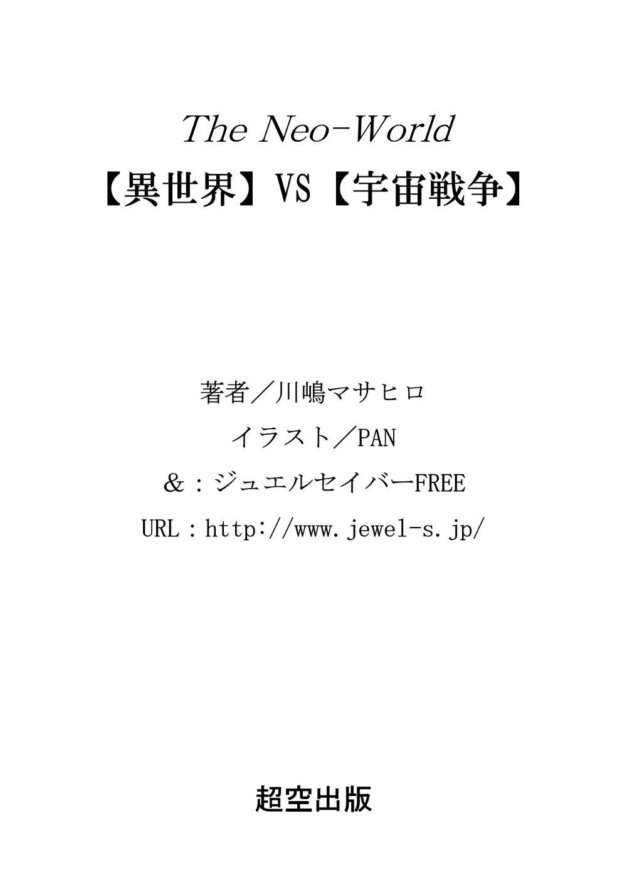
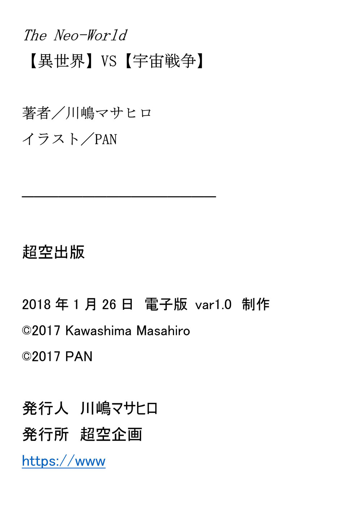

| 【異世界】VS【宇宙戦争】／The Neo-World 第一部／Kindle版: 転生世界の宇宙戦争 (超空文庫) | |
| 川嶋マサヒロ | |
| (2018) | |
本作品の全部、または一部を無断で転載、複製、配信、インターネット上に公開することを禁止いたします。
また、内容の改変、改稿等を行うことも禁止いたします。
本作品の購入時に御承諾いただいた規約により、有償、無償にかかわらず第三者に譲渡することは禁止されています。
本作品の文章の一部、イメージ画像は再ダウンロード時に予告なく変更される場合があります。
本作品は縦書レイアウトされています。
本書の内容はフィクションであり、登場する団体、人物などの名称は全て架空のものです。
◆ ◆ ◆ ◆ ◆

目次
ドアノッカーが打ち鳴らされる音が意識を呼び覚ます。
再度繰り返される三度の響きが完全に男を眠りから覚醒させた。例え深夜であっても報告に来るようにと、自室の扉に取り付けさせたこの器具がこんな時間に使われるのは三度目の事だった。
ベッドから起き上がり天蓋のカーテンを開けると、室内は窓からの薄い月明りに照らされていた。男は部下が待つ廊下への扉に歩み寄る。
解錠し細く扉を開けると、魔法ランプで下から照らされた部下の緊張した 面持 ちが見えた。
「さきほど新たに二つの光点が見つかりました」
「分かった。少し待っていてくれ......」
男はガウンを羽織り机の上の魔法ランプを持つと、それはほのかに光り始める。
二人は静まり返る城の廊下を無言のまま歩く。物見塔の螺旋階段を登って屋上に出ると、三人の部下が男の気配を感じて天体観測用の望遠鏡を覗いていた顔を上げた。
「クリフォード様。こちらを」
部下の一人が席を開けた。接眼レンズを覗き込むと暗闇の中、一つの光点がゆっくりと移動していた。
「むう......」
男は思わず唸りを上げる。
以前発見された光点より速度は遅かった。それは高度が以前より高い位置に存在する事を示していた。それなのに光量が増しているのは、太陽の光を反射する面積が広い――、つまりこの物体がより巨大な証だった。
「二度確認しました。新しい光は二つ空を回っております」
「二つか......」
観測を始めて初めて発見した一つ目の光点が、どれほど以前からこの星を回っていたのかは分からない。
そして半年ほど前には二つ目の光点が確認された。
今回ほぼ同時に現れた二つの光点は以前の二つよりも巨大だった。今は合計四つの人口天体がこの星の周りを回っているのだ。
男はこれから成すべく事を素早く頭の中でまとめる。
「何度も繰り返すがこの件は他言無用だ。例え家族であってもだ」
部下の四人は無言で頷いた。彼らもこの事態が何を意味するかは察している。緊張感が男にも伝わってきた。
「明日から城を空けるが、監視を続けてくれ。新しい光を発見した場合は伝令を走らせるように」
「はい......」
「分かりました......」
観測部門の責任者と補佐を務める二人が青ざめた表情で返す。
男は階段を下り廊下を進みながら、現状に至るまで十数年に渡り進めてきた計画を思い浮かべ整理する。
部屋に戻ってベッドに横になり目を瞑る。明日の予定を巡らしていると、窓から朝の光が差し始めた。それは忌々しい新たなる世界との遭遇を告げる夜明けだった。
願望は実現せず困難は当たり前のように訪れるのが世の常だ。
これから、この異世界でも同じことが起こるに 過 ぎない。
ギルドの屋上を飛び立ってすでに二時間あまり。ユーキたち四人は飛行能力を持つ魔法少女を先頭に大空を飛翔していた。
集団の先頭には大気を切り裂く 衝角 が形成され、空気抵抗はほとんど感じない。
この異世界の時間は一日が二十四時間で、かつてユーキが生きていた世界と変りはない。
理由はこの世界が存在するのもまた地球で、昼間は太陽が輝き夜は月が光る。つまり太陽系も含めまったく同じ世界なのだが地理――、大陸や島は未知の異世界を形作っていた。
それ以外にもこの異世界とユーキのいた元の世界には様々な類似点と少数の相違点があった。
地上に目をやると深い森の木々が生い茂り、その先には高地特有の低木が見えた。
「そろそろですね。速度を落として降下します」
水色の長い髪をなびかせながら、先頭を飛ぶフィローラが精神感応で皆にそう告げる。高度が下がりユーキたちは森の空き地にふわりと着陸した。
「さて、目標はここからどの程度離れているのかな？」
ユーキが目標と呼んだのはダーク・グリフォン――、鷲の上半身に獅子の下半身を持つ、幻獣と呼ばれている生物だ。
「はい、距離は北北東に三キロメートル。進行方向は私たちです。配置はどうしましょうか？」
マリエッタがウエーブのかかった緑色の髪、ロングヘア揺らしながら森の奥を指さす。
「そうだね......」
ユーキが配置について少しばかり思案しているとフィリスが声を上げた。
「私に後ろをやらせて下さい！」
赤いショートカットの髪、この中では一番年少の魔法少女で歳は十六歳。このパーティーに参加して半年ほどになる。
「この魔道具も使えるようになりました」
フィリスが左腕にはめられた銀色の装飾を皆に見せた。その表情は自信に満ち溢れている。
三人の魔法少女共に物理障壁を使えるので純粋に経験の問題であった。
彼女は先輩二人の仕事をもう何度も間近で見ていたので、そろそろ次に進むのも悪くないとユーキは思った。
「よし、じゃあフィリスが目標の後ろに付いて追い込んでくれ。慎重に落ち着いてやろうか。任せるよ」
「はいっ！」
赤い髪の魔法少女は満面の笑みで元気よく返事をし、水色と緑色の髪の魔法少女はユーキの視線を受けて力強く頷いた。
山岳地帯の上空。ユーキは森の中を移動する黒い巨体の気配を追いかける。
それはかつての大戦時、兵器として使役され野に放たれたていた幻獣の生き残りだ。魔法を掛けられ、戦争が終わっても戦い続ける哀れな兵器......。
「フィローラ。様子はどうだい？」
ユーキは精神感応の中心になって獲物を追う彼女に、他の二名の配置を確認した。
「はい。私は正面の障壁で相手を抑えています。マリエッタが左右を抑えてフィリスが後ろに続いています。順調です」
「よしっ！」
木々の間に黒い巨体が見えた。ダーク・グリフォンは後方と左右に出現した水晶板の障壁に戸惑いながら進んで来る。
ユーキは剣を抜いて地上に降り立ち、その巨体の前に立ちはだかる。
ダーク・グリフォンが鷲の大きな翼を広げ前足を突き出しす。察したユーキは前方に障壁を作り出し、後退しながら飛び上がった。
続いてダーク・グリフォンも翼を羽ばたかせて空中へと舞う。
ユーキは剣を構え体内に充填されていた魔法を少しだけ解放させる。
「―― 神 ながら守り給い、 幸 え給え、終わりし戦乱の悪夢より――」
剣の刃に細かな突起の障壁が形成され、光速回転を始め――、
「――救い給え、未来の試みに安らかに引き給わざれ......」
――空気を切り裂く甲高い音が微かに響く。
「......さよなら」
ユーキは昔から幻獣狩りを生業としていた守り人の 祈りの言葉を口にする。
闇に落ちたとはいえ、幻獣は精霊を守りし神と言われている、この世界では信仰の対象になっているような生物だ。
突進してるダーク・グリフォンが障壁を打ち砕いた瞬間、ユーキの剣が頭部突き刺さり、巨体の行き足がガクリと止まる。
幻獣も体内を血液が循環しているが、この魔法を応用した剣の傷では、不思議と血は吹き上がらない。
地上に落下した黒い体躯をフィローラ、マリエッタ、フィリスの三人娘が取り囲み両手をかざす。
兵器としての魔法を掛けられているため、例え頭部を割られていても、このまま放置すれば傷は自然治癒し再び兵器として活動を開始する。
完全に停止させるためには、その 魔法の浄化が必要だった。魔法によって作られた兵器は魔法によって無力化される。
ユーキは三人の作業を見守った。浄化が終わり、フィローラがユーキの方を振り返る。
「今日も祈りの言葉を言いましたね」
「あっ、そうか！ 感応しているから皆にも聞こえるんだよね。参ったなあ......、変かな？」
「いえ、大切な言葉です」
フィローラの言葉にマリエッタ、フィリスの二人は顔を見合わせクスリと笑う。
「このグリフォンも好きで闇に落ちた訳じゃない。戦争の犠牲者さ」
「はい」
フィローラは感心するような眼差しに微笑をたたえて頷いた。彼女はこの三人の中ではリーダー格の十八歳で、ユーキと組んでもうすぐ一年半になる。
「さて、帰るか」
「帰りは私が飛びますね」
マリエッタがはにかみながら微笑む。フィローラの飛行能力でここまで来たので、帰りは自分でと申し出たのだ。彼女は十七歳で、このパーティーには一年ほど前に参加した。
「ああ、頼むよ」
ユーキたちは空中に浮きあがり街への帰途についた。
衝角 を先頭に一団になって飛ぶ四人は、マリエッタの作り出す重力が変調された空間に守られてれ高速で飛行する。フィローラの時もそうだが、ただ飛ぶだけではない、快適に移動できる魔法なのだ。
ユーキのパーティーには才能のある少女たちが優先的に与えられていた。
「今日の幻獣は少しおかしかったですね......」
「そうね......」
ぽつりと呟いたマリエッタにフィローラが返す。ユーキは意味が分からず首を傾げた。今までも大戦時の残存兵器の幻獣を倒してきたがユーキには違いが分からなかった。
ユーキの様子を察したのかフィローラが説明を続ける。
「あの周辺に展開されていた兵器には、特定の魔法がかけられていたのです。今日の幻獣はそれとは少し違いました」
つまり、それは現実の世界では兵器工廠が持つ独特の癖のようなものだとユーキは理解した。
「他の地域から流れて来た幻獣か、もしくは戦後に魔法を掛けられたって事かな？」
「そうですね。ギルドに帰ったら報告しましょう」
ユーキは飛行しながらも彼女たちが体内にダーク・グリフォンとの戦いで消耗した魔力を充填しているのが分かる。
自身は魔法を使えないが、他の魔法使いの力を溜めて応用を加えて放出する。転生人が持つ特有の能力。これがこの世界で戦うユーキの力であった。
◆
ほどなくして前方に六角形の城壁に囲まれた街が見えてきた。アーヴィア王国、東の商都イヤーフェウスだ。
街は城壁の外、海岸線に伸びる東と西への街道沿いにも続き、南側には港が見える。海原の先には大きな島影が見えた。
この国、アーヴィア王国は大陸の一部とあの島を領土とする海洋国家だった。
ユーキたちは所属する東のギルドへ向け飛行する。城壁の外にあるギルドの屋上に四人は降り立った。
ユーキはこの世界では冒険者と呼ばれている。戦争に従軍し退役した後も軍を補助する仕事を民間人として続け、何かあれば軍務に復帰する予備役者への呼び名だ。
他の正規兵や一般で徴兵された除隊者とは違い、戦争が終わった今も戦後処理に駆り出され、政府高官や高級貴族の護衛、民間防衛の先兵として雑多な仕事に従事している。
ユーキたちは一階に下りて四人でカウンターに座り事情を話す。受付の男性職員は少し顔色を変えた。
促され奥の個室に移動し、その職員は一通り話を聞きながらメモを取って少し待つように言いて席を立った。
「ずいぶん時間がかかるんだなあ......」
何を話しているのかその職員はなかなか戻っては来なかった。
「そうですね」
しばらくして職員はギルド長、ここの責任者を伴って戻って来た。偉い人ではあるがユーキらにとっては馴染みの顔だ。
「御苦労だったね、ユーキ。相手はダーク・グリフォンか......」
「はい、あまり見ない種ですね」
「うん、察しはつくと思うが今日の件は一般人には話さないでくれるかな。ギルドの職員であってもね」
「分かりました」
三人も神妙な顔で頷いている。この件はやはり、あまり広まって欲しくない話のようだ。
「ただし矛盾するようだがユーキ。君の仲間とは情報を交換して欲しい、それと現役の軍人も別だよ」
「はい」
別の担当者に変わり、ユーキたちは翌日以降の予定を打ち合わせした。
三人は明日から学校、ユーキは北東の森の奥で鹿と猪を狩る仕事に参加する。一人ではこんな便利屋みたいな仕事しかなかった。
報告と打ち合わせが終わり建物の外に出るともう日が暮れかかっていた。
「狩の後の懇親会には参加する？ 帰ったら学校まで迎えに行くよ」
五日間かかる今回の狩は年に一度の大規模な作業なので、終了後には慰労会が行われる。一種の収穫祭みたいなものだが、ユーキのパーティーメンバーの彼女たちには参加資格があった。
「はい。今日はどうしましょう。お食事でもしていきますか？」
フィローラが一人暮らしのユーキに気を使ったのか食事に誘ってくれる。今日は休日なので寄宿舎の食事はないのだ。
「いや、今日はシンヤと飲む約束なんだよ」
ユーキは西のギルドで仕事をしている、同じ転生人の友人の名前を出す。
「あっ、私も行きたいかな～～」
「いけません。お二人で色々と話せなくなりますから」
フィリスのノリをフィローラがたしなめた。
転生前――、現実世界の話を何でもかんでもこちらの人間に話すことは禁じられていた。彼女たちが同席すればシンヤとの話の内容は制限される。
「懇親会にはシンヤも呼ぶつもりさ。その時に会えるよ」
「飛行魔法でお送りしましょうか？」
「いや、せっかく自分の足もあるんだし歩いていくよ」
ユーキはそう言ってから、皆と別れて城壁の東門へ向かった。
かつては他国の間諜に睨みを利かせていた門兵の姿は今はなく、ギルドの身分証を呈示する必要はない。門は開け放たれ人々は自由に往来していた。
「城壁の中に入るのも久しぶりだな......」
この大陸を二分した長かった戦争が終わり三年。当然と思っていた殺伐とした空気は徐々に街から消え、日々笑顔と笑い声が街に満ちてきていた。
彼の名前は 田崎 勇輝 。この世界ではユーキと呼ばれている。
高校生の頃、行楽地帰りの高速道で家族と共に大規模な交通事故に巻き込まれ死亡しこの世界に転生した。家族の生死は不明。
この異世界での生活はもう四年目になる。今年二十歳になったばかりだった。
待ち合わせている酒場に到着し、中に入り店内を見回すが相手はまだ来てはいなかった。
振り向いたユーキに向かって声の主は軽く手を上げる。
「シンヤ！ 久しぶり」
「待たせたか？」
「いや、今来たところさ」
「そうか、早く座って一杯やろうぜ」
彼の名前は 長友 伸也 。ユーキと同じ日本からの転生人で、ここでの暮らしはもう十年になる二十四歳だ。
転生の原因はユーキと同じ交通事故だった。以前にミニバイクの無免でトラックにぶつかったと笑って話していた。
二人は窓際の席に腰かけ、注文を聞きに来たウエートレスにビールを二つ注文する。店内の席はすでに半分ほど埋まっていた。
ほどなくして陶器のジョッキに入ったビールが二つ運ばれてくる。冷えているのは魔法で作った氷が流通しているからだ。
「お疲れ！」
「おうっ！」
いつもの挨拶と乾杯をして二人は互いにジョッキをあおった。
「仕事の調子はどうだい？」
シンヤの第一声はいつもこれだ。こちらに来たばかりの頃、右も左も分からなかったユーキは本当に世話になった。彼は兄貴のような存在だ。
「毎日同じで特に変わらないよ」
ユーキはつい、いつもの挨拶のように紋切り型で答えてから、今日の仕事の事を思い出す。
「......でもないかな。今日倒したダーク・グリフォンなんだけど、戦争時のはぐれ幻獣じゃないみたいだって、仲間の魔法少女が言っていた」
「ふむ......、つまり掛けられていた魔法が以前のとは違うってことだな」
ユーキよりも早く異世界に来ていたシンヤは何度も従軍の経験があり、他国へ遠征していた事もあった。つまり兵器として使役されていた幻獣にも詳しかった。
ユーキはせいぜい後方支援か、戦争末期の戦いに一度参加したぐらいしか戦役の経験がなかった。
「実は西でもそんな事例はあったな。たいした問題にはなっていないけどね」
そう言ってシンヤはビールを飲み、ユーキもそれに続いた。
「報告をした後、時間は掛かったけど確かにギルドはたいして反応しなかったな？」
なぜかと思いユーキは首を傾げる。
「戦争は終結したが魔族の中には不満に思っている奴らもいるんだろうなあ......。新たな火種にでもするつもりで幼獣を兵器に仕立てて、今もこちらの領土に放っているんだろう」
この大陸の半分を占める魔族の支配地域は、現在は一国に統一されているが、人間と戦争をしながら魔族同士の紛争も続いていたような、現在でも複雑な地域だ。
「ギルドからは口止めされたよ。シンヤに話す分には問題ないって言ってた」
「俺も口止めされている。外交で話し合っている最中なんであまり大事にしたくないんだ。きっとね」
ユーキとはなるほど思い神妙に頷き、シンヤは笑った。
「俺たちが深刻に考えても仕方ないな。政治は上の偉いさんに任せよう」
「そうだね」
ユーキたちはお替わりと何品か料理を注文する。
この世界の料理は不思議なことに現実世界のヨーロッパと酷似していたので食べるに困ることはない。
「明日から鹿と猪の狩りだよ」
「そうか、俺の所は先月済ませたな。今年は随分獲物がいたよ」
「じゃあ、こっちも忙しいかなあ......」
鹿や猪は計画的に狩られ間引きされていたが、戦争中は人手が足りず、森に近い農家には害獣被害が多発している。
他は取り留めのない世間話や仲間の転生人の事など、ひとしきり飲んで話をした。
「そろそろお開きにするか？」
シンヤは明日早いユーキに気を使っているようだ。
「そうだね」
二人は席を立って会計を済ませる。一応、ユーキたちはギルドから仕事に応じて給料を得ていた。
「ああ、頑張れよ」
これもいつものセリフだった。
ユーキはシンヤと別れて来た道を戻り、自分の借りている部屋へと向かった。
ふと、昔よく行っていた骨董品店のことを思い出した。こちらの世界に来たばかりの頃、同じ転生人が日本的な何かをこの世界に残しているかもと思い、そのような店をよく訪ねていたのだ。
路地に入り、久しぶりに古めかしい扉を開けて店内に入る。
「いらっしゃい......、おおっ、ユーキじゃないか。久しぶりだね」
「御無沙汰してます」
店主の老人はいつもと同じように愛想よく対応してくれる。
「仕事は忙しいのかい？」
「はい、今日もはぐれ幻獣の退治で、明日からは近郊で 猪狩 です」
「そうか、御苦労だなあ。まあ、ゆっくりしていってくれ」
「はい」
ユーキは店内を丹念に見て回る。
剣などの武器は、普通は武器を専門に扱う店で購入するが、最初の頃のユーキはこの骨董品店で古い短剣や小物を購入していた。
店内には様々なこの世界のアンティークが所狭しと並べられている。
ユーキの目の前にある十字架のようなデザインの装飾品は、他の骨董品店でも時々見受けられた。ただしこの世界では宗教的な意合いはない。おそらくは過去に来た西洋人の転生人から広がったのだろう。
残念だが今日も仏教や和のテイストはない。今までもそれらは、この世界のどこにも見つけることはできなかった。
そんなことを考えて品物を眺めていると、人の頭部大の卵型をした水晶が目に付いた。
それは本当に卵と同じ形をしていて、ユーキはまるで水晶の卵だと思った。
「これは何ですか？」
「さあ、儂にも分からんがね。貴族の遺品整理で出されたんだよ。マーケットで手に入れた」
ユーキは身を乗り出し水晶を覗くと赤茶けた砂漠の風景が見えた。
「なぜこんな景色が見えるのかな？」
「魔法の一種だと説明されているがね......。昔から森で時々発見されて、貴族の間では高値で取引されていたらしいよ。最近は数があって人気もないらしい」
「そうですか......」
「今までマーケットに出ることなんてなかったんだけどね。父親が亡くなって息子たちが売りに出したんだ。何せそんな景色が見えるだけだしね」
「ふ～ん......」
ユーキは店主に挨拶をして店を出た。
城門を通り少し進んだ先で路地に入る。いくつかの角を曲がり部屋がある狭い道に出ると扉の前に人影が見えた。
「ん？」
まだそれほど遅い時間でもないので、誰か訪ねて来たのかと思い近づくと、その人影がこちらを振り向いた。
「フィローラじゃないか！」
「ユーキ、ごめんなさい。こんな時間に......」
「どうしたの？」
「少しお話が......」
「別に構わないよ。さっ、入って」
鍵を開けて中に入り、天井から下がっている魔法ランプに手をかざすと弱々しい明りが灯った。一人暮らしの狭い部屋だ。机の椅子に腰掛けフィローラにはベッドに座るように勧めた。
「あの私の体を見て下さい......」
「えっ？」
「紋章が出たのです......」
フィローラがワンピースの胸元をはだけさせると、胸の谷間のやや下に赤い薔薇の小さなつぼみが見えた。
「いったい......、いつから？」
「あの......、一週間ほど前からです。少しずつこの形になりました」
「君にも紋章が出るなんて......」
紋章とはこの世界で魔法や特殊な力を持つ一部の人間が、成長すると何らかの絵が体に浮かび上がる現象だ。
大昔はそのようなことはなかったらしいが、魔法と共存するこの世界で、その力を発揮し続ける人の進化の表れではないかとユーキは考えていた。
「ユーキに描いてもらえないかと思って......」
紋章が出現した場合は写し絵をギルドに提出する決まりになっている。ギルドには契約している絵師がいるのでそちらに依頼するのが普通だった。自前で描くのは貴族などのお抱え絵師がいる場合だ。
「僕にか......」
ユーキは前世で遊び程度のイラストを描いていた経験があった。
この世界に来てから骨董屋やマーケットの屋台など回った時、画材などを値段が手ごろな時に買い求めて、恥ずかしながら彼女たちに描いた絵を見てもらったことが何度かあったのだ。
その時に彼女たちはユーキの絵を褒めてはくれたのだが、もちろんこの世界のプロ絵師たちのほうが上手な絵を描く。
「分かった。とりあえず簡単にスケッチしようか。だけど少し暗いな」
魔法ランプは文字通り魔法の力で水晶体を発光させる。長持ちさせるため、光量は少ない。フィローラが手をかざすと光が増した。魔法を掛けたのだ。
「少し酔っているし、今日は大まかにスケッチするだけだから。服を脱いで貰える？」
「はい......」
フィローラは少し顔を赤らめ、髪の毛と同じ水色ワンピースをまくり上げて脱ぎ、白い下着姿一枚になった。裸身が魔法の明りに照らされ、水晶のように青白く光っている。
彼女の紋章は胸の間から下腹部にかけて描かれていた。
ユーキは紋章が原寸で収まる紙を引き出しから取り出し、炭の粉末を 膠 で固めた芯が取り付けられたペン軸を持つ。
紋章の横に紙を当て、ずらしながらデザインのポイントとなる場所に当たりを付ける。いくつかの薄赤いつぼみを持つ枝が、装飾された黄金の剣に絡まっていた。
「下まで見えないな。もうちょっと下げてもらえる？」
「はい......」
フィローラがゆっくりと下着を下ろすと枝の先端が見える。紙のサイズに収まる範囲だった。
「うん、そのままでいて」
ユーキはだいたいの紋章の形を紙に書き写して、その後は各部分の色、配色を書き込んだ。天井から吊られている魔法ランプを手に持ってかざし、顔を近づけて細部の色をよく観察する。
「絵具......、顔料が足りないな。さて、どうしようか......」
ユーキは少し考え込む。この世界には当然だが化学染料は存在しない。仕事の合間に自然染料を探したり、骨董屋で使いかけの絵具や汚れたままの古いパレットなどを手に入れて色を探したりしてきた。
もう一度、ラフスケッチと肌に刻まれている紋章を並べて見比べる。
「うん、描けてるね。もういいよ」
フィローラは胸元をワンピースで隠しベッドに座る。
「ご迷惑でしたでしょうか？」
「まさか！」
ユーキは右手を左右に振って否定する。モデルに指名してもらえるなんて描き手としては名誉な事だ。
「迷惑だなんて。続きは狩りから帰ってからやろうか。明るい昼間がいいね」
「はい」
明るい顔でフィローラは返事を返す。無理な頼みではないと分かりてホッとした表情になった。
「たぶん、あと二回ぐらい来てもらえば大丈夫だから」
ユーキは足りない色を揃える算段を頭の中で巡らせる。何件か街の店を回らなければならないが、フィローラが気を使うので口には出さないでおく。
引き出しに絵を納めるユーキの背後から服を着る衣擦れの音が聞こえた。
「もう遅い、送るよ」
二人で部屋を出て、学校の寄宿舎の門まで彼女を送り届けた。こんな時間に外出許可が下りたのは事が紋章に係わるからだろう。
フィローラほどの力を持つ魔法少女なら人間相手に、何かの事件などに巻き込まれることもない。彼女はそれを解決する側なのだ。
それでもここまで送るのはマナーと、自分を頼ってくれた嬉しさの表現だとユーキは思った。
「それじゃあ、おやすみ......」
「ユーキにお願いして良かったです。おやすみなさい」
フィローラは恥ずかしそうに微笑んだ。
朝、ギルドへ行き裏手の厩舎で書類を見せ馬を借りる。乗馬は冒険者としては必須の技術でユーキもこの世界に来た時、真っ先に訓練を受けた。その時の講師がまだ十四歳のフィローラだったのだ。
東の街道へ馬を走らせると、ユーキと同じように猪狩のために移動する馬や荷馬車がちらほらと見える。
東と南のギルドから冒険者や近隣の農家、食肉関係の仕事に従事する労働者などが動員されているのだ。
麦畑が続く街道を行くと小さな宿場街に到着した。ここが毎年猪狩の拠点になっている街だ。
毎年参加しているユーキは要領を得ていた。街から北の山へと続く道を曲って進むと農家の納屋や倉庫があり、周辺には天幕が張られている。少し離れた厩舎に馬を預けて建物に向かった。
既に多くの人員が集まっていて、狩の準備も始まっているはずだ。
そこでは久しぶりの再会がユーキを待っていた。
「久しぶりね、ユーキ！」
ユーキを見とがめた女性が走り寄って来る。長いウエーブのかかっている腰までの金髪が揺れていた。
「三カ月ぶりくらいかなあ？」
「チェリッツ、久しぶり......、もう前の任務からそれぐらいは経つね」
「また一緒に仕事ね。よろしく」
「こちらこそ、よろしく」
彼女は以前、前線に出た時に組んでいた 竜使い の女性だ。それで戦争が終わった後の任務も同じ組合せになることが多かった。仕事のたびに挨拶から始めていては効率が悪い。彼女とユーキが仕事に呼ばれれば、自然と二人の組み合わせになるのだ。
時刻はもう正午だった。昼食用のサンドイッチとお茶が配られ、ユーキたちは納屋の前の天幕の下にしつらえてあるテーブル席に座った。
「元気そうね。ユーキ」
「ああ、そっちもね。軍の任務はどう？」
「戦争も終わったし忙しいけど呑気なものよ。もっと早く平和が来ればよかったのに......」
そう言って少し寂しそうな表情を見せる彼女は、戦争で婚約者を亡くしている。ユーキと出会うずっと前の出来事だと聞いていた。
戦争では 竜使い として偵察任務に就いている彼女の護衛となり、後ろに騎乗して戦場から戦場へと飛び回った。
昼食が終わり、点呼がとられ毎年と同じ猪狩の手順が説明される。
ユーキたちはいつもと同じ 勢子 になり、北の山岳部から猪と鹿の群れを見つけて南に追い込む役割だ。
「行こうか」
「ええ」
ユーキは馬の後ろにチェリッツを乗せて、森の道を奥へと進む。
「もう少し先の右ね。速度を落として」
「分かった」
ゆっくりと馬を歩かせると、チェリッツは抱き着いている手を解いて森の奥を指さした。
「ここよ、馬を乗り入れてくれる？」
「うん」
指示通りに進むと木が開けて広い草の空き地に出た。二人で下馬して馬を手近な木に繋ぐ。
「さて、彼は遠くにいるの？」
「近いからすぐに来るわ」
空の先に黒い点が見える。それはチェリッツのパートナー、共に戦っている飛竜の姿だった。
その竜は上空を何度か旋回し、ゆっくりと草地に降り立つ。ユーキらは二人で駆け寄った。
「ご苦労様」
チェリッツは竜の頭を愛おしそうになでる。
「レックス、久しぶりだね」
ユーキの問いにその竜はギョロリと瞳を動かしこちらを見た。
「相変わらず嫌われているのかなあ......」
「ふふっ、ただのやきもちよ。さあ、乗りましょう」
チェリッツがレックス鞍に上がり、ユーキも 鐙 に足を掛けて飛び乗った。
「行くわよ！ しっかり捕まってて」
竜は人間と意思疎通ができる数少ない幻獣で、操るのはその才能がある魔法使いだ。チェリッツはこの竜が幼獣の頃から、共に過ごしていたらしい。
空をゆっくりと滑空しながら、チェリッツの透視魔法で地上の鹿や猪の群れを探す。
「やっぱり今年は数が多いわね」
「西で猪狩した知り合いもそう言ってたよ」
「そう」
持ち場の上空に到着してチェリッツが少し手綱を引くとレックスゆっくりと旋回を始める。
「さて、大きな群れから追っていきましょうか......」
「了解」
チェリッツの精神感応で森の中が見て取れる。ユーキは低空飛行するレックスから飛び降りた。
フィローラたちに充填された魔法をコントロールしながら使い、ゆっくりと地上に降り立ち、剣を抜いて猪の群れに向けて小さな障壁を発射した。光球が森の木々をぬって飛び、大きな破裂音を発して弾ける。
上空のチェリッツから索敵情報をもらい森の中を駆け、鹿や猪の群れを南に向けて追い立てる。
夕刻までその作業を続けて、ユーキたちは飛び立った草地へと帰還した。
「ご苦労様、レックス。明日もよろしくね」
竜はこれから山中で野生動物を捕食して、ねぐらを探す。ユーキたちは明日から三日間同じような作業を繰り返す予定だ。
二人は共に天幕が張られている場所に戻り厩舎に馬を預けた。
南に張られている数カ所の網には、すでに獲物が捕獲され始めていた。数匹の鹿と猪が荷馬車に乗せられ、近隣の加工場までの運搬作業が始まっている。季節は冬に向っていた。
今日の仕事が終わり、ユーキたちは宿舎として用意されている街の宿まで二人で歩いた。
「食事にでも行きましょう。その前にシャワーね。埃まみれよ～」
「店は何処にする？」
ホテルの隣には酒場があり、チェリッツが指を差した。
「そこにしましょう。カウンターで待ち合わせましょうか」
「うん」
二人はチェックインして一階の奥へと廊下を進む。一種兵役のような仕事に割り当てられられる部屋なので場所が悪いのは仕方なかった。
「あら、隣の部屋ね。それじゃあ後で」
共用のシャワーを浴びて酒場に行くとチェリッツはまだ来ていなかった。ユーキはカウンターに座りビールを注文する。
一人で飲んでいると、ほどなくして彼女が現れ隣の席に腰掛けた。
「お待たせ。私もビールをください」
続いてメニューを指さしながら料理を何品か注文する。チェリッツのビールグラスが運ばれユーキたちは乾杯した。
「ねえ、ユーキ。恋人はできたの？」
「そんなのいないよ......」
「あら、前に言ってた魔法少女の三人は？」
「別に......そんな 娘 たちじゃないよ。そっちこそ」
「さっきも言ったけど、戦争が終わってから除隊者が多くて。私みたいな索敵担当は忙しいの。そんな時間はないのよね」
「そう......」
「だから今日はユーキに会えるって楽しみにしていたのよ」
「......」
ユーキもそうだった。この仕事の予定が入ってから、彼女との今までのことを 幾度 となく思い出していた。
フィローラの紋章を描いていた時も彼女の可憐な肢体を、絵が描かれている白いキャンパスぐらいにしか思っていなかったのだ。自惚れだろうが余りにも失礼だったのかもしれない。
「何考えているの？」
「いや、別に......」
こんな話をチェリッツはできない。彼女は笑って聞いてくれるとは思うが、それでもやはりできないと思った。
昔話や仕事の話など、軍規に反しない程度に二人は情報を交換した。やはり彼女も不可解なはぐれ幻獣を何度か発見しているそうだ。
「そうか......、どこも同じか......」
「まあ、戦争が終わっただけでも十分に平和よ。もう簡単に人が死ぬことはないしね......」
チェリッツは少し寂しげに話し胸に手を当てる。そこには戦争で死んだ婚約者が自らを描いた小さな肖像画が入っている。
ユーキは以前、その絵を見せられ、話を聞かせて貰ったことがあった。
「彼も私の絵を持っていたのよ」
そう言って微笑み――。
「雰囲気があなたに似ている人だったわ」
青い大きな瞳でユーキの顔をまじまじと見て――。
「なんだか彼と出会った頃のような感じよ......」
二人で並んで座ればそんなことを言っていた。
その婚約者は絵を嗜み自分はチェリッツの小さ肖像画を持ち、そして彼女は彼の絵を肌身離さず持っている。この世界で絵を描く趣味を持つ人間は珍しい。
彼は魔族との戦闘で死亡が認定されていた。棺に入っていた右腕一本だけを見て彼女は号泣したらしい。
「そろそろ戻りましょうか？」
料理を平らげ酒も大いに酌み交わした。明日も朝早くから今日と同じように森の獣を追い立てる予定だ。
「そうだね」
「あなたの部屋に行くわ。それともこっちに来る？」
「いや......」
「じゃ、後で私が......」
部屋の中の小さなストーブには薪が灯されていた。ユーキは上着を脱いでハンガーに掛けベッドに腰掛ける。
三カ月前、前回二人で組んだ仕事はまだ残暑が残る季節。山岳部のかなり奥深くへの哨戒索敵だった。
キャンプ道具と食料をレックスに積込み、二週間ほど二人で山から山へ、森から草原へとまるで旅のように移動した。
「ねえ！ すばらしい泉ね」
「うん、人が簡単に来れる場所じゃないから知られていない泉だね」
「泳ぎましょうよ！」
「夏とはいえここの水はめちゃくちゃ冷たいよ」
「水浴びもしたいわ。川で体を拭いているだけじゃあねえ。一応、私は女だし
よく知っているでしょ？」
「まあ......」
結局、二人で裸になって泉に入り泳いだりはしゃいだり、寒いと言っては抱き合った。
夜はどちらか一つのテントを交互に張り、簡素な食事を早々に終わらせ裸で一つの毛布に 包 まった。
どちらかが眠りに就くまで絡み合い互いの体を貪った。遠くから幻獣の遠吠えが聴こえ、彼女もまた誰にはばかる事なく同じように鳴き声を上げた。
初めて仕事で出会ってから、こんな関係がもう三年も続いているのだ。
扉がノックされチェリッツが入って来て施錠する。下着にシャツを一枚羽織っているだけの姿だ。
「やっぱりこの格好だと寒いわね」
チェリッツはそう言い、しゃがんでストーブに手をかざす。そして今夜も彼女はいつもと同じように、潤んだ瞳でユーキを見上げる。
「ねえ？......」
ユーキも服を脱ぎ始め、チェリッツは毛布の中に潜り込んだ。
「早く......」
二人はベッドで横になって互いに見つめ合う。
「もうこんな事は......」
「あなたしか頼める人......いないの......」
「でも僕は......」
「お願い......。彼の絵は部屋に置いてきたから......」
チェリッツはかすれた声で哀願するように言う。
今夜も二人は一枚の毛布に包まって絡み合った。
◆
四日間かけた鹿狩りと猪狩りが終わった翌朝、ユーキは馬にチェリッツを乗せてレックスの元へと送り届けた。
「ユーキ、またどこかで会いましょう。早く恋人を見つけなさい」
「チェリッツこそだよ」
「あははっ、私は駄目よ。死んだ彼の事、忘れられないしね」
「そんな......」
「次に会った時はまた逞しくなっているわね。ますます彼に似てくるわ......」
「......」
「それじゃあ」
ユーキは何と反応してよいのか分からない。彼に似ているは、もう何度も言われていた。
「あなたに恋人ができたら、私から解放してあげるわ」
次に仕事を共にするのはいつになるのか？ 二人はただ今の関係のためだけに会う事はない。いつも仕事のついでの間柄だ。それが彼女なりの一線を越えていない流儀らしい。
ユーキは彼女の乗ったレックスが見えなくなるまで空を見続けてから帰路についた。
◆
ユーキは来た時と同じように馬に乗りイヤーフェウスへ帰った。ギルドで馬を返却して報告を済ませる。
その日の夕刻には街の大きなレストランでは猪狩の関係者に食事が振る舞われる予定になっていた。
冒険者として参加したユーキは、パーティーのメンバーや冒険者仲間も呼んでいいと言われている。慰労も兼ねたこのような催しには、ギルドから助成金が出るらしい。
夕方近く、ユーキはフィローラたちの通う魔法学科のある、学校の正門で彼女たちを待っていた。
三人は制服姿で揃って校舎から出て来る。前世の世界で言えば女子高生だ。ユーキはふと、一年にも満たない自分の高校生活のことを思い出す。
「わざわざ、すいません」
「いや、構わないよ。まだ時間があるしね」
フィローラの言葉にユーキは三人を眺める。久しぶりに見る制服姿はなかなか新鮮だ。
「お仕事はいかがでしたか？」
「今年は獲物が多かったよ。やっぱり戦争の間にずいぶん増えていたんだな」
「そうでしたか」
二人で並んで歩きマリエッタとフィリスは後ろに付く。近くの寄宿舎まで四人で移動してから、制服から私服に着替えた彼女たちを、ユーキはレストランまでエスコーする。
三人は色違いのワンピースに太い革のベルト、上着を羽織り、更にフード付きの短いケープを身に着ける。肩にも掛けけるショールは腰に巻いていた。
店内ではすでに食事会が始まっていた。指定された席に着くとすぐに料理と飲み物が運ばれる。ユーキはビールを注文した。
鹿肉のスモークハムに脂身がたっぷりな猪のベーコンのミックスピザ。サラミや乾燥肉を利用した様々な料理がテーブルに並ぶ。
今回狩られた獲物で新しい保存食を仕込むので、貯蔵していた古い在庫の一掃といった意味もあるようだ。季節の野菜も色々と並んでいる。
ピザはなぜだか四角いが、他の料理も現実の世界に比べて違和感はなかった。
これらは東方のフレイトス連邦共和国や南方のクワクリルトン諸島共和国の島々に輸出される重要な貿易品目でもあった。
「仕事の調子はどうだい？」
宴もたけなわになった頃に後ろから聞きなれた声が聴こえ、やっと来たかとの表情でユーキは振り向く。
「よっ！ お揃いだな。御招待に預かり参上いたしました」
「シンヤさんっ！」
「お久しぶりです！」
マリエッタとフィリスが声を上げる。
「シンヤ、来てくれたんだ」
「もちろんだ。タダ飯を断る理由はないよ。仕事で遅くなっちまった。悪いな」
シンヤはテーブルに並んでいる料理の皿を見回した。
「お～、旨そうだな」
マリエッタとフィリスはかつてユーキがいた世界の話を聞きたがる。ファッション、日本の風俗、レジャーや遊びなど年頃の娘の興味は尽きない。
フィローラは文化や芸術などの話が好きで、それで紋章を描いて欲しいとユーキに申し出たようだった。
ギルドからのお達しもあり、軍事、政治、科学等については話すことは許されていないが、前述については特に問題視はされていなかった。
ユーキの知っている現実での話題は、既に全て話し終わっていてネタは尽きていたのだ。
「シンヤさんの世界では女の子のお洋服はどれくらいで買えたのですか？」
「そうだなあ、五時間ぐらい働いて貰ったお金で十分買えたかな」
「え～～、それじゃあ私たち、ギルドから貰えるお給金で毎日お洋服が買えるの？」
マリエッタの質問の答えにフィリスは驚きの声を上げる。家内制手工芸品の洋服はこの世界ではなかなか高級品なのだ。
「まあ、この世界で女の子の服をもっと安く作りたい、なんて事業を考えている人もいるね」
「そうだね」
ユーキは同じ転生人の女性を思い出して苦笑する。やはり女子はファッションなどに特に興味があるようだ。
「そうなのですか？」
フィローラがユーキとシンヤの顔を交互に見る。
「うん、僕らの知り合いの話なんだ。上手くいくかどうかは分からないけど」
「戦争中は軍需物資の生産が最優先だったからなあ。これからは生産余力が生まれるから、経済政策としても民需への転換は必要だ。目の付け所はいいと思うよ」
「先に貴族向けのドレスなんかをやるって言ってたね」
「あっ、私もドレスを買います」
「何を言ってるの？ どこで着るのよ！」
フィリスの発言にマリエッタが突っ込みを入れる。ドレスは王族や貴族の行事や催し物、式典のためのファッションで一般人は着る場所もない。
「猪狩はどうだった？」
「シンヤの時と同じでたくさん仕留めたよ」
「そうか、良かったな！ 今年は復員した人手で農業関係も豊作だ。この国は長らく平和な時代がなかったからな」
「そうだね。僕らの仕事も、もう戦闘以外の偵察や狩りの手伝いばかりだし」
ユーキは東、シンヤは西のギルドで仕事をしている。他に今は現役を引退した転生人、先ほど衣料関係の事業を興すといっている女性が西に暮らしていた。
宴が終わりユーキたちは連れ立って店の外に出る。
「それじゃあ皆、帰りも送っていくよ。シンヤ、今日は悪かったね」
「いやいや、こちらこそだよ」
フィローラたち三人もシンヤに礼を言い、別れの挨拶を交わす。
「それじゃあユーキ。また飲もうぜ」
「うん、また皆で集まろう」
「ああ、頑張れよ」
「あっ！ あれって？」
フィローラが小さな悲鳴を上げて夜空を見上げ、皆も同じように視線を上げた。
それは星空で一際明るく白く輝き、長い尾を引きながら地表に降下して行く。
「おっ、流れ星か！ なかなか消えないな。隕石じゃないのか？」
「うん、珍しいね」
その光点は一瞬、更に明るく輝いてから山陰に隠れて消えた。
「落ちたみたいだなあ。フレイトス連邦共和国の山岳部だ。あんな所に人は住んでいない。ついてるよ」
ユーキは三人娘を寄宿舎まで送り届けた。
明日からはいつもと同じ日常が始まる筈だった。
夜が明けたばかりの早朝、部屋の扉が叩かれる音でユーキは目を覚ました。
「どちらしゃま――ですかあ......」
ユーキはベッドから玄関まで移動して、寝ぼけ眼をこすりながら間の抜けた声で返事をする。
「私です。マリエッタです」
切迫した声色に眠気は一瞬で冷め、慌てて解錠し扉を開けると薄明かりに少し蒼白のマリエッタがいた。
「先ほど全土に天 牙五本が発令されました。連隊単位で集結が終わった軍が東の国境線に向かっています。冒険者全員に非常招集がかかりました」
牙の数は防衛の警戒レベルを現す。その最高が五だった。
戦争中でも牙四本が最高で、最近は一つが続いていたのでいきなり牙が五本立つのは異常事態といえた。異例中の異例だ。
「ちょっと待ってて」
「今、フィローラが任務の説明を受けていますから、それほど急がなくても......、完全装備でお願いします」
「分かった」
マリエッタが差し出したバスケットには野菜やハムが挟まれたパンと、お茶のビンが入っていた。
「ありがとう。そこに置いといて」
気遣いの朝食をマリエッタが机の上に置く。
ユーキは答えながら着替えて装備を身に着ける。革の上着の上に一部金属が使用されている革の防具を重ね着し、短剣と剣をベルトに装着した。
「いったい何が起こったんだ？」
ユーキはそう言いながらパンにかじりつき、お茶を飲んで腹に流し込む。
「分かりません。噂では内戦が起こったとか、魔族の大規模な破壊活動とか情報が 錯綜 しています」
「牙が五本か......。行こう」
「はい」
ユーキとマリエッタはギルドへと急いだ。
外部階段を使い屋上に上がるとすでにフィローラとフィリスが待機していた。
「状況は？」
「敵がアーヴィア王国に進行しつつあるそうです？」
「敵？」
フィローラは緊張した面持ちで答える。すでにその脅威を明確に敵と断定していた。
「それはいったい...... 」
「正体不明の敵とのことです。フレイトス連邦共和国領内であちらの軍が食い止めているとの話ですが......」
それはつまりフレイトス領内で戦闘が続いていて、それがこの国に接近しているとの事だ。
「僕たちの任務は？」
「越境偵察です。フレイトス側も了解していると......」
「分かった」
ユーキとパーティーメンバーの魔法少女三人は飛行魔法を使い文字通り現場に飛んだ。
澄んだ晴天の空から見下ろす眼下の光景は、戦争当時には見慣れていた光景だ。
招集された軍部隊と集結した冒険者たちが街道を国境線へと移動している。そして、ユーキもまたその中の一人だ。
彼らを無駄死にさせないためにも、この不可解な状況を見極めるためにも、偵察は重要だとユーキは気を引き締めた。
国境線が近づくにつれ、街道は軍の部隊で溢れ返っていった。戦時中に作られたいくつもの砦では兵が補強作業をしているのが見える。ただならぬ状況だ。
ユーキたちは街道から内陸部へと逸れ国境線を越える。それは 予 めギルドから指示されていた方角だ。
「戦闘を探知しました！」
フィローラが叫ぶ。三人娘が同調して前方探査を行い、移動している戦場を見つけたようだ。編隊は内陸へと微妙に進路を変えた。
「あれは......」
しばらく飛ぶとユーキの目にも地平線の先に黒い雲のような煙が見えた。
「火事か？」
森林地帯の上空を飛び続けると、地平線の先に既に収穫が終わった春小麦の畑が見えてくる。そこに陽光を反射し、キラキラと光る物体が見て取れた。そして時々それとは違う強い光が点滅していた。
ユーキはフィローラを見て合図を送る。いつもの手順で透視魔法をかけ、遠距離を視認するためだ。そして精神感応で情報は共有される。
森の近くの麦畑から草原に変わる場所には大砲が何門か並び、土嚢が積み上げられていた。塹壕も掘られ兵士が身を隠しているのが見える。
探査の力で倍率が高い双眼鏡を覗くようにその敵、物体と周囲の状況が見えた時、ユーキは我が目を疑った。
「なっ、なんだ！ あれは？」
ユーキは驚いて声を上げる。
この世界にそぐわない、その異様な三本の足に複数の触手を持った銀色の機械にもそうだが、その周りに取り付くおびただしいこの国の兵士の戦いぶりにもだ。
「なんてこった......」
それは体長がおおよそ三十ルートルほどあり、細長い足をゆっくりと動かしながら移動していた。その銀色の怪物に兵は蟻のように群がり、ある者は銃を撃ちかけ、ある者は突起がついている鉄球の鎖を振り回し投げつけている。
怪物は気にするでもなく平然と歩を進め、時々水蒸気のような煙を後方から吐き出し、不気味な唸り音がここまで響いた。
足元を見ると数人の兵が鎖を持ち怪物の足に絡めようとしている。怪物は何本もの触手の一本を地上に向けると、その先端が光を放ち地上が炎に包まれた。巻き込まれた兵が焼かれて消炭となる。
「やっ、止めるんだ......」
怪物の周辺に魔法障壁の水晶板が形成され熱線を防いでいる。しかしそれは数が足りず、隙間をかいくぐった熱線は次々に人を炎に包んだ。
それでも兵たちが攻撃を止める事はない。塹壕から、土嚢の陰から次々と飛び出し怪物に挑む。
「止めろ......、止めろーーっ！」
熱線の攻撃は続き、何人もの兵が次々に焼かれ続ける。ある意味、直撃を受けて即死した兵は幸せだった。
熱線が脇をかすめた兵は一瞬で体中の脂肪が発火点を超えて、人間松明と化し地面を転げ回っていた。
「馬鹿な......、バカな、バカなっ！」
この無謀な作戦の意味はユーキにも分かった。時間稼ぎか陽動だ。彼らはただそのためだけに未知の怪物に群がり、果敢に挑み焼かれている。
ユーキは謎の怪物よりも、指揮官に対して頭に血が上るのが分かった。
「指揮官！ 時間稼ぎは俺がやる！ 兵を下がらせろっ！」
フィローラたちは高度を落としユーキから離れていった。熱線に狙われないようにと、ユーキの速度に巻き込まれないためだ。
精神感応で相手の指揮官にこちらの意思が伝わったのか兵が引き始める。ユーキは体に充填されている飛行魔法を徐々に高めた。
抜いた剣の両刃に歯のような突起が現れ青く光り揺らめく。障壁と同じ魔法で形成された鋭利なそれは、まるでチェーンソーのように高速で回転を始め鋼鉄をも切り裂く 剣 となった。
ユーキはこの異世界に不釣り合いな、 あの 機械の怪物に見覚えがあった。
「まさか？ あいつは......」
あの姿は――！！
「バカな！ トライポッドだと？！」
それはユーキも知っている空想の科学兵器に酷似していた。
加速したユーキは一瞬音速を超え、防護 衝角 が衝撃波音を発し轟音が周囲に鳴り響く。
一瞬で間合いを詰め、手前でポップアップしたユーキは直上からその凶悪な剣を振り下ろした。それはトライポッドの上部装甲を激しく叩くが、刃は数センチメートル手前で止まり障壁の青い刃は空を切り裂き回転しているだけだった。
「シールド？」
新たな脅威、ユーキの出現に、トライポッドは触手の先端に取り付けられている 熱線 の発射装置を照準する。
ユーキは後方に飛び退いてジグザグに機動しながらトライポッドと距離を取る。透明な水晶の障壁が展開され三連射された熱線の二つを防いだ。
「これならどうだっ！」
ユーキが剣を振りながら一回転すると、水平に振られた剣からチェーンソーの青い輪が飛び出しトライポッドに向かった。
熱線 に迎撃され火花を散らしながらも輪は機体を直撃し、トライポッドは一瞬ガクリと体勢を崩すがすぐに立て直す。
「まだまだっ！」
輪は変形してトライポッドにまとわりつき、その体を回り始める。さしたるダメージは与えられないようだが、無数に蠢く触手は動きが制限されていた。
「くそっ！」
ユーキは敵に向かって空中を突進し剣を何度も叩きつけた。
向けられる熱線砲口を避けて、周囲をまるでハエのように飛び回りながら攻撃を繰り返すが、トライポッドはさほど意に介さず進撃を続ける。
戦場は森へと移った。太い触手を振り回し、長い前部の足を突き出し、木を薙ぎ払いながら突き進む銀色の巨体。
ユーキは森の中へ入り、本体ではなくせめて 一矢 とばかりに触手に攻撃を続けた。
木々の間に張られたロープがトライポッドの足を絡めとると、隠れていた兵たちが再び生身のゲリラ戦術で対抗を始めた。それぞれが太いロープを抱えトライポッドの足に絡める。ロープの端は大木に結ばれていた。
うるさいとばかりに触手を振り回し、熱線を地面に向けて乱射すると兵たちは蜘蛛の子を散らす様に逃げ出す。
トライポッドが突然ガクリと傾いた。一本の足が落とし穴に落ちたのだ。あがくもう一本の足もまた、別の穴に取り込まれた。
「転生人よ、その怪物から離れるんだ！ こちらの攻撃に巻き込まれるぞっ！」
フレイトス軍の指揮官らしき精神感応を受けたユーキはトップスピードで引く。
「あれが攻撃？」
高空に出現した無数の飛竜の編隊が、横滑りしながら次々に緩降下を開始した。
身動きがとれないトライポッドはそれには気づかず、 熱線 で仕掛けられている罠もろとも周辺の森を焼き払っている。
飛竜の降下角度が垂直に近くなり、腹に抱えている長くて黒い矢のような物体が切り離される。無数の急降下爆撃がトライポッドに迫った。
「あんな攻撃方法が！」
第一弾がトライポッドのすぐ脇の地面に突き刺さるが、爆発はしない。質量による物理攻撃のようだ。気が付いたトライポッドは上空に向けて熱線を乱射する。
次々に降り注ぐ鉄塊は魔法によって微妙に軌道を変えているようだが、熱線の直撃を喰らい一部が溶けた矢は、バランスを崩して不規則に回転を始める。
コントロール不能となって周囲に降り注ぐ鉄塊だが、一部はまだ健在でトライポッドをかすめ落ちる。
そして、ついに一弾がトライポッドの最上部装甲に激突した。
「当たった！」
三脚のサスペンションが限界まで沈み込み、関節は衝撃を吸収するように曲がる。しかし湾曲している頭部は若干のへこみを見せただけで、矢は弾かれ地面に転がり落ちた。
「あれでダメなのか......、えっ？ あっ！」
落胆するユーキは異様な気配を察して森の奥を振り返る。
木々の先端を揺らしながら一匹の飛竜が、超低空飛行で魔法の力でアシストされながら猛スピードで突っ込んで来た。
「特攻だと！？」
ユーキは意図を察した。
竜はそのままトライポッドに激突し両者は地面に倒れ込んだ。
一体を一匹が抑え込み、何本もの触手が竜の排除を試みる。熱線が発射体制を整えたその刹那、竜が腹に抱えていた黒い物体が白く光って爆発した。
「自爆攻撃だ！」
爆風が放射状に木々をなぎ倒し、竜の肉片と引きちぎられた触手が飛び散り、 血飛沫 が舞う。
の体に無数の血糊が付着し、火薬の煙と巻き上がった土煙が視界をふさいだ。
「こんな戦い......」
ユーキはそう呟きながら頬に付いた血を袖で拭う。
しばらくすると全容が見えてきた。竜の首や翼、尾は引きちぎられ、胴体はかろうじて原型を留めているがズタズタだ。腹に抱えていた爆弾が指向性の抱き着き専用だったことを表している。
一方トライポッドは二本の足と全ての触手が引きちぎられて、丸い頭部も歪み微動だにしない。
ユーキはフィローラたちと合流するために後方の森へと飛んだ。三人は森の上ギリギリで浮かびながらこちらの様子を窺っている。
「大丈夫だった？」
「私たちは安全な場所にいたから......」
「何もできなかったよ......」
マリエッタとフィリスは青い顔で呟く。
「私たちの......力が及ばず......申し訳ございません......」
唇を強くかみしめ見開かれた目に涙を溜めたフィローラが震える声を絞り出す。
「君たちの責任じゃあないよ。行こう......」
ユーキが促し四人は両者が激突した現場へと移動する。
辛くも飛竜の激突、相打ちでトライポッドを撃破するも、フレイトス軍の被害は甚大に思われた。
そしてユーキたち四人は偵察とはいえ、この苛烈な戦場でたいした役にはたたなかった。
指揮官らしき男が指示を出し、その周辺を魔導士、魔法使い、軍の士官たちが取り囲み輪を作っていた。
火災が発生した森では既に多くの兵が木を切り倒し、延焼を防ぐための作業が始まっていた。魔法を使い麦畑の火災も消えつつある。
素晴らしい手際のよさだとユーキは驚き、地上に下りたつと自然にその輪が開かれ四人は中心へと進んだ。
顔を覆うかうつむく魔法使いたちの中にあって、一人だけ目を見開き正面を見据えたまま、とめどなく涙があふれている少女がいた。
自爆した竜の使い手だったようだ。この歳では幼い頃から兄弟のようにあの竜と育ってきたのだろう。彼女が自爆攻撃を指示し竜もそれに答えたのだ。
竜使い は、共に成長する信頼関係で竜のパートナーとなっている。
「アーヴィア王国の偵察隊か......」
「あのような作戦をよく平気でとれますね」
ぶしつけな第一声に場がざわつくが、ユーキは言わずにはいられなかった。
「心外だな。国境線を突破させないで、我が国の中で撃破するのが一番の目的だったのだよ」
「しかし......」
「私の名はクリフォード......」
「僕は冒険者のユーキです......」
クリフォードと名乗った男は銀色に金の装飾が施された鎧に身を包み、下げている剣も上等で。フレイトス連邦共和国の中でも、かなり高位の人物のように思われた。
周りを固めている部下が修羅場を潜り抜けて来た独特のオーラを放ちつつ、ユーキに視線を送り値踏みする。
「転生人を送ってもらえたのはありがたいが、たいした戦力にはならなかったな」
ユーキは一言も言い返せない。事実そうだったのだ。そして役立たずであっても、身勝手であっても言わずにはいられなかった。
「ユーキと言ったな。こちらへ来い」
クリフォードは戦死者、怪我人の移送、部隊の撤退順、手持ちの資材での街道までの道路建設の指示など出してからトライポッドへ向かって歩き出す。ユーキは後に続いた。
二人は未だ燻っている残骸と竜の遺骸の前に立つ。
「！ ――小説の世界です......」
「そうか......、私が生きていたのは現実の世界の方だったよ」
「そうですか......。僕の仲間たちも現実の世界の方でした」
「あちらで 六十五歳まで生きて、こちらに二十歳に転生した。前世もこいつらの研究をしていたよ。そしてこの世界でもな」
クリフォードはトライポッドの残骸に目をやって話を続けた。彼の今の年齢は四十歳ぐらいだろうかとユーキは思った。
「今日見た事は全て貴国に報告してもらっても構わない。それ故に越境を許可したのだからな」
「はい、あなたたちの戦い方も？」
「無論だ。こいつらに対してとった戦術も全てだ」
「僕らの国はあんなふうに、人間や 竜 の命を軽視した戦い方はできません」
クリフォードは口元を歪めた。
「ふんっ。我らは魔族領と国境を接して長く戦ってきた。後方で戦争をしてる つもり だった貴国に理解してもらおうとは思わんよ」
「そんなっ！ 知り合いの婚約者も戦死しています！ そんなことは......」
「中には我が国のために、命を投げ出してくれた兵もいるだろう。ただ常に激戦地への援軍要請を断ってきたのもまた事実だよ。魔族との和解を最後まで渋ったのも君たちのような国だ」
突きつけられるいくつもの事実の前に、ユーキの反論は粉々に打ち砕かれる。
ギルドに帰還したユーキたちは隣接する宿舎に軟禁状態となり、個別に調書――、聞き取り調査の対象となった。これはよくある事で特別なことではない。
その名の通り聞き取りと記録、そして質問、内容の突き合わせ。最後に守秘義務の説明が行われるだけだ。
ただ今回の件でユーキの前世の情報を三人に限り話すことが解禁された。全員で事に当たらねばならない緊急事態なのだ
最後は四人で会議室に移り、政府、ギルド、軍の高官と思われる数人の前で、映像魔法を使える魔導士がユーキたちの記憶から戦いの有様を空間に映し出す。
それはあの生々しい戦闘記録だった。フィローラたちが見ていた映像も映し出された。彼女たちが凄惨な現場を目撃して目を背けているのがよく分かる。
ユーキにとって意外だったのは高官たちの反応だった。呻き、唸り、小さな声を上げはするが、この地球外生命体の侵略を目の前にした反応としては、不思議なほど落ち着いていた。
彼らは知っていた。そして予測していたのだ。ユーキはクリフォードの言葉を思い出した。
「――前世もこいつらの研究をしていたよ。そしてこの世界でもな」
既にこの国の一部の人間にも、この敵の情報は伝えられていたようだ。
夕刻に聞き取り調査は終わり、それぞれは軟禁状態のままそれぞれの部屋をあてがわれた。
ユーキの部屋にフィローラがやって来る。
「今日は御苦労様でした」
「うん、お疲れだったね。どうしたの？」
「これから世界はどうなってしまうのでしょうか？ マリエッタとフィリスも不安がっています」
無理もなかった。あんな怪物機械を見れば、この世界の人間からすればこれが自然な反応だった。
「そうだね、僕のことをもう話してもいいんだな。君たちの部屋に行こうか」
「はい」
部屋には心配そうな顔のユマリエッタとフィリスが待っていた。そしてユーキは転生人として知っている情報を話した。
「僕とシンヤは同じようで少し違うんだよ」
三人は不思議そうな表情で首を傾げる。
「僕はあの機械が小説の中、つまり空想の産物としてあった世界に生きていたんだ」
「空想ですか？」
「そう、そしてシンヤがいたのは実際に奴らが来て、人間との戦いになった世界なんだ」
「同じ世界ではないのですか？」
「厳密には違う世界だけど、それ以外は全く同じ世界のようだ。信じられないかもしれないけど微妙に違う異世界から、人々はこの世界に転生して来ているんだよ」
「シンヤさんの世界はどうなったのですか？」
「奴らは全部倒された。人類は勝利したそうだ......」
皆の間にホッとした空気が流れる。しかし、どのように奴らを撃退したかは、ユーキは説明できなかった。それはこの世界では絶望を意味しているからだ。
翌朝にユーキたちは解放された。国の上層部ではこれからの対応が話し合われているはずだ。そしてその結果が仕事としてユーキたちに指示される。
全土で警戒体制がとられる中、国は他国との連携や調整に忙しいようだがユーキたちには待機と言う名の平穏な日々が続いた。
そんな中、ユーキはフィローラの紋章を書き写す作業を始める。ユーキは城壁内の店を回り、足りない色の顔料を手に入れた。
紋章の描き取りは仕事の一部でもある。学校を休み訊ねて来たフィローラを部屋に招き入れ、窓から差し込む陽光の中、紋章の色彩を睨みながら、ユーキはどんな顔料でこの色が再現されるか考える。手持ちの色で足りるかどうかが問題だ。
日中は差し込む陽の光で室内はそれほど寒くはない。太陽の光を反射してフィローラの裸身は輝いている。
色のことはさておいて、ユーキはデッサンの完成に集中した。
「もうお昼か、長い時間悪かったね」
「いえ、私からお願いしたことですから」
「お腹が空いたな。何か軽く食べに行こうか、ご馳走するよ」
「悪いです......」
「いや、僕が稼げるのも君たちのおかげさ。これはモデルになってくれたお礼だ。受けてもらわないと困るよ。午後は部屋で紋章に色を着けよう」
「はい」
ユーキはフィローラを伴い、いつも利用している近所の酒場に入った。昼間は庶民的なレストランとして営業している。
「軽くって言ったけど紋章の絵を描くだけだからね。しっかり食べてよ。御馳走するなんて今までなかったしなあ」
一緒に食事することは今までもあったが、フィローラはいつも割り勘を主張していた。
「ふふっ、マリエッタとフィリスに悪いです......。あの......、紋章の絵を描くだけって？」
「ん？ ああっ、体全体を描く時はその......、お腹がポッコリとしないようにモデルさんに注意してもらうんだ。それから下着の跡が付かないようにとかさ......」
確かに説明不足だと思い、ユーキは補足する。フィローラは真剣な表情になった。
「軽くします。いえ、食べません！」
「いや......、だから紋章を書くだけだし、食べなきゃダメだよ」
「はい......」
結局フィローラはスープとサラダ、サンドイッチを注文した。ユーキは小さめなステーキのセットをパン抜きで注文して、フィローラの三つあるうちのサンドイッチから二つを貰う。そのようにして欲しいとの彼女の頼みだった。
部屋に戻ると指示されるでもなくフィローラはスルリと肌を晒す。ユーキは紋章の色を見て、混色し紙に塗り肌に描かれている色合いと見比べる。
フィローラがお腹を若干引っ込めているのでユーキは苦笑した。
「体の力を抜いて楽にしてよ。自然な姿でなければ意味がないんだ」
「はい......」
フィローラが観念すると紋章のキャンバスは美しい自然な起伏を取り戻した。
グラビアなどはあえて体が緊張するポーズなどをモデルに作らせたりするらしいが一瞬を切り取る写真と絵は違う。
ユーキはその姿を見ながらチェリッツの紋章を思い出した。
竜使いらしく腹部には竜が描かれいる。右の乳房に大きく咬みつくように開かれた口。左を挟むように立てられた二枚の翼。そして妙に長い尾は左大腿部の内側まで伸びていた。
その絵を手のひらで撫でながら細部に渡って観察し、ユーキはこの体を絵にするとすればどのようなポーズが竜とチェリッツの魅力を存分に引き出せるか？ と、彼女の体に顔を埋めて考えたこともあった。
「どうかしましたか？」
「いっ、いや......」
自然と顔が弛緩していたのか、フィローラの問いにユーキはドキリとした。
「......僕は下手くそだなと思ってさ......」
「そんなことはありません。素敵な絵だと思います！」
本当に下手くそな嘘にフィローラは真剣な表情で向き合ってくれる。ユーキの胸はチクリと痛んだ。
だいたいの色ができたのでユーキは彼女の肩に毛布を掛ける。
「ベッドに横になって体を休めて」
「まだ大丈夫です」
「いや、駄目だよ。これがルールなんだ」
「はい」
ユーキはもし世界が平和ならこの素晴らしいモデルの絵を何枚も毎日描けるのにと思った。
絵に彩色してから、もう一度フィローラに立ってもらい色の陰影をチェックする。そして一部を修正した。
「うん、いいだろう。僕の力は出せた。はっきり言ってギルドの絵師の方が上手だけどね」
この世界には独特の技法があり、ユーキの絵は所詮それを真似た付け焼刃だ。それは自身も自覚している。
「これで終わりだ。御苦労様」
「あの......」
「うん？ なに？」
「ユーキの紋章を見せて頂けますか？」
「ああ、構わないよ」
転生人にも紋章が刻まれている。ユーキの場合は背中だった。
絵を机の上に置いてシャツを脱ぐ。自身の絵を引き出しから取り出して渡し、フィローラに背中を向けた。
「比べてみるといい」
「はい......」
それは日輪を模したような輪に、数本の剣が放射状に配置された紋章だった。
フィローラが手を当てると背中が暖かく感じる。紋章が彼女の魔法力に反応しているのだ。
「分かる？」
「いえ、私にはまだ......」
「そうか......」
紋章はその人の運命や人生を現すとも、能力を示しているとも言われている。
特別な魔力を持つ魔導士はそれを読めるとされていた。ただの絵ではない。それぞれが背負う紋章には意味があるのだ。
二人は部屋でユーキの入れたお茶を飲みながら、これからの事などを話し。夕刻になってユーキはフィローラを寄宿舎まで送った。
「夕食も御馳走したいと思ったけどね......」
「寄宿舎の食事は学校行事の一つです。皆でお祈り共にするのです」
「そうだね。大切な時間だ」
フィローラを見ると、彼女の大きな目はキラキラと輝きユーキを見つめていた。
◆
フレイトス連邦共和国からアーヴィア王国に対して、正式に情報提供の申し出があった。トライポッドの残骸、鹵獲品の見分だ。
しかし条件はかなり限定的で、現地に赴けるのはユーキと、そしてもう一人の転生人と限られた。選ばれたその一人は当然シンヤだった。
当日二人は東のギルドで待ち合わせをして、この問題の担当官から説明を受ける。任務は情報の収集だ。フレイトス側は――おそらくはクリフォードなのだが全てを公開すると言っているそうだ。
二人は屋上までの階段を上がりながら話をする。
「報告書で知っていると思うけど、フレイトス連邦の戦いぶりは凄まじいんだ。人や竜の命なんて、使い捨てぐらいにしか考えない場合もあるようだよ」
「時代だな。ここは中世みたいな世界だし」
「僕たちの世界じゃ考えられない......」
「あの国は長い間、魔族の正面で戦争をしてきたからなあ。気合いが違うんだ」
「うん......、魔族って、何なのかな？」
「人間には違いないよ。この世界では分けられているけどね」
「人間か......」
ユーキとシンヤは飛び上がり、第一次フレイトス戦役跡と呼ばれている場所へと飛んだ。
◆
上空から見る あの 場所は随分変化していた。木々は伐採され道路が作られ、テントと木造の建物、柵と門が見える。
二人は門の外へ降り、書類を見せて中に入る。門兵は木造の建物を指さした。
「おっ、来たか、ユーキ。それと......」
クリフォードは打ち合わせ中であったが構わず椅子から立ち上がりる。
「彼は同じ転生人でシンヤです。僕よりも早くこの世界に来ています」
「シンヤです。俺は現実の方から来ました」
クリフォードは前回の鎧とは違い軍服姿だったが、やはりその意匠は高位を感じさせた。
「うむ、クリフォードだ。早速だが行こうか」
「はい」
ユーキとシンヤは先行するクリフォードに続く。
トライポッドは倒された場所に今もあった。しかし、竜の肉片や土塊は取り除かれ、本体から千切れた一部のパーツは木の台に乗せられ見やすいようになっている。
「こいつらが来る事を予測していたんですか？」
ユーキは以前からの疑問を最初にぶつけた。
「予言の魔法だよ。魔族の中にかつてそのような力を使う魔導士がいた。それが記録として残っている」
「予言？ 知ってる？」
「いや......、初めて聞いたよ」
ユーキの問いにシンヤは首を横に振った。クリフォードが続ける。
「その男の名は預言者R・G・ウエールズ......」
「小説の作者に似ている名前だ......」
冗談みたいな話だとユーキは心の中で思った。
「そいつが死んでから魔族に転生して予言したってか？」
「クリフォードの世界では、その作者は何をやっていたんですか？」
「あいにくと私の記憶にその名はない。似通った名もな......」
「俺も知らない。ユーキの世界では小説家として名を馳せたけど、俺たちの世界じゃ無名の人物だった訳だ」
「ユーキ、小説の世界でトライポッドは何体来たんだっけ？」
「十体以上と聞いているけど......」
ユーキは小説を読んでいなかったので、ネットで多少の情報を得ただけの知識しかなかった。
「そうか、俺の世界でもそんなもんだったけど......」
「十三体だな」
クリフォードが断定する。ユーキの世界では宇宙戦争は小説の世界だったが、彼らの世界ではそれは現実に起こった事だ。情報の統制は行われていたらしいが、小説と現実とでは人々の興味、真剣度が違う。
その平行世界では、米ソの核開発、宇宙開発競争は人類が月を目指すそれではなくて、火星に水爆ミサイルを撃ち込むための競争だった。
互いの国を攻撃するとの疑心暗鬼から、冷戦と呼ばれた関係の時代もあったが、最終的に二国は協力し数十発の核が火星に設けられていた異星人の根拠地を焼き尽くした。
他の歴史は大差なかった。
「この銀色のボディには何の意味があるんだ？ 森の中で目立ってしょうがないだろうに」
シンヤが鏡のような装甲板に顔を近づけて話題を変えた。
「主装備の熱線、ヒートレイの防御だな。熱線を反射させるんだよ」
「つまり鹵獲される事も考えていると？」
「いや、戦車は自身の砲弾の直撃に耐えられる――、程度の認識と同士討ちを想定しているのだろうな......」
クリフォードが持って来た指示棒で銀色の装甲を叩くと、意外にも軽い音がした。
「このミラーはコーティングだ。複数の金属装甲板とセラミックの複合装甲。砲口兵器の各種弾頭にも対応している」
「つまりこの世界の大口径の銃や大砲程度は簡単に防げるのか......」
「魔法の攻撃も熱や光系は通じない」
「僕の剣は数センチ手前で弾かれました。あれはいったい......」
「うむ、鉄器を弾く磁力なようなものを発生させているとは思うが......不明だよ。内部の機器類は自爆装置で焼かれているんだ」
それならばあの、高空から落下した鉄塊を、多少のへこみで弾いたのも頷けた。
そして彼らは一定の破損で自爆し、自らの機能を停止させる。
「動力はどうなっているんだ？」
「合金の骨格を取り巻く有機体の筋肉組織を装甲が覆っている。甲殻類や昆虫と人間型のハイブリットだよ」
「有機体の動力......、つまり生物と同じようにエネルギーを補給していると？」
「そうだ。やつらは動物や人間を食うんだ。我々の世界に来たヤツと同じだ」
クリフォードは剥き出しの脚部機構を指す。
「主要な関節は内臓モーターで駆動する。そして熱線、ヒートレイも電力だ」
「まさにハイブリットだな......。人体を改造するってアイデアはよく聞くが、これは機械の体に生物の部位を移植しているのか......」
シンヤは呆れたように言う。そもそもどうやってその二つが繋がって――融合させているのかユーキには理解不能だ。
「はっきりとは分からんが、コンピューターの中に干からびた生体組織があった。脳組織だったようだ......」
「呆れる......、ほんとうに呆れるよ。そこまでの技術がありながら、やってることは侵略か！」
シンヤは大きく首を横に振った。
「続けるぞ。大電力を蓄えるバッテリー、液体した水素のタンクに小型の発電機。熱線に使うであろう電力を貯める大型のコンデンサーが二基」
指示棒でそれらしき場所を叩きながら話すクリフォードは、前世からも含めてトライポッドの構造を熟知しているようだ。
「液体水素？ 低温の？ 電力の発生源はそれか！」
「常温でだ。何らかの触媒を使っている。それからここが一番の問題なのだが――」
クリフォードは珍しく勿体をつけている。ユーキとシンヤは次の言葉を待った。
「――核反応炉を装備している......」
「「えーーっ！」」
しばしの沈黙が場を支配した。ユーキもシンヤにしても想定外の動力設定だ。
「常温核融合か......」
「ああ、このサイズでだ......、恐るべきテクノロジーだよ。詳細は私にも分からない」
「大丈夫なのかな？ 再臨界とか......」
「液体水素とのバルブは閉ざされ停止状態だ。緊急停止させる装置のようなものもある。魔法で透視したが完全に沈黙しているよ」
「まあ、やつらだってその辺は考えて作ってるんだろう。攻撃されるたびに暴走していたら兵器として失格だしな」
しゃがんで胴体の下を見ているユーキが質問する。
「これは......、噴射ノズル？」
「ああ、個体燃料ロケットだ。カートリッジを三つ搭載している」
「飛べるのか......、なぜ最後、これを使わなかったのかな？」
「あの時点で使い切っていた」
ユーキが会敵するまでの、フレイトス連邦の攻撃がいかに執拗だったかを表していた。
「使い終わったカートリッジは排出される。銃と同じだ」
「しかし、見る限り俺たちにもなんとなく理解できる技術でほっとしたよ。核は別にして......。魔法の方が俺にとっては不可解だ」
「確かに......」
「しかし、これなら俺たちにも撃退できるんじゃないか？」
「無論だ。相応の犠牲を出せばな......」
クリフォードたちは多大なる犠牲を出しながらそれを実践してみせた。
「これから こいつ をどうするのですか？」
「有効な対抗策の研究だ。 こいつ を首都近郊まで運ぶには時間がかかる。ここでやった方がいいな」
「こんな森の中で？」
「街を作り研究施設ごと引っ越すさ」
「街をここに作る？」
「ああ、長い戦いになる......」
クリフォードは空を見上げ遠くを見るような目になった。
「しかし、こいつらはこの星が魔法の世界だと、知っているのだろうか？」
「どうかな？ こいつは偵察型だと思う。ある程度の情報は母船に送っているだろう......」
「母船があるのか？！」
シンヤが思わず声を上げるが、ユーキは言葉が出なかった。魔法世界の星を惑星間飛行する宇宙母船が回っているのだ。
「やつらの人工衛星がこの星を回っている。中継用の通信衛星が二基。母船も二基だ」
そして、クリフォードは空を指さした。火星人の本体はこの指の先にいる。
「こいつには操縦席はない。静止軌道上からの遠隔操作と人口知能で動いていたようだ。当然衛星と交信していただろう」
「後方の司令部は空の上か！ 手も足も出せないって訳だ」
「昨日、こいつが使った大気圏突入用のカプセルを、かなり奥の山中で発見した。状況から見て、そこで一発目のロケット燃料に点火したようだ。しばらく地上を進み二度目の点火で一気に街の近くまで進出した」
「そのカプセルはどんな......」
「ただのがらんどうだったよ。補給物資などはなかった」
「こいつは使い捨ての偵察ドローンみたいなもんか？ それでこの威力か......。うーーん、俺たちのいた世界と、この世界の時間軸が一致しているとは思えないけど......、もしこれが......何て言うか、俺らが経験した何十年後かの進行だったら――今回のヤツらは増強されているってこともあるのかな？」
シンヤはどう説明してよいか悩みつつも、ある疑問を提起する。
「可能性は高いな。私たちの経験した進行は直接火星からやって来た。母船などなかったからな」
現実の火星人襲来を知る、二人の予測を越える未知の進撃がこれから始まるのだ。シンヤは天を仰ぐ。
「参ったな......」
クリフォードとシンヤの会話を聞きながら、ユーキは唐突に先日見たある物を思い出した。
「この星......、この世界の事はやつらに筒抜けだよ......」
「どうしたんだ。ユーキ？」
「あれは水晶の卵だ！」
「何だよ、突然？」
「水晶の卵？」
「そう、あれは水晶の卵だったんだ」
ユーキの発言に、二人は首を傾げて怪訝な顔をする。
「......もしかして知らないの？」
ユーキは、それは火星から送り込まれた通信装置で、こちら側の情報を得る手段となり、地球の人間を洗脳することもできたと説明する。
そしてイヤーフェウスの骨董屋でそれらしき物を見たことを付け加えた。
どうやら彼らの世界、実際に火星人が襲来した世界では、水晶の卵はないらしい。
「私は全ての情報にアクセスがで きなかった。その卵とやらは我々の世界にもあったのかもしれないが......」
「あの店にそんな物があったのか。まずいぜ！ もし国中の貴族がそいつを持っていたら......」
「我が国にもあると考えた方が妥当だな......。伝令を走らせよう。シャノンっ！」
クリフォードが手を上げると、遠巻きにこちらを伺っていた女性の兵が駆け寄って来た。
クリフォードは少し言葉を濁しながら説明する。ユーキたち聞かれるとまずい事もあるようだ。
「具体的に説明してくれるか？」
シャノンと呼ばれた女性は知的な表示でユーキを見つめる。
「はい、大きさはこれぐらいで、透明で卵型。砂漠のような景色が映っている場合が多いです」
ユーキは両手で具体的な大きさを示す。
「サバク？」
「ああ、一面赤茶けた砂と岩石の風景だ。空も赤い」
この大陸には砂漠がないのでクリフォードが火星の砂漠をシャノンに説明し、これからの指示を出す。
「貴族院の高位からだ」
「はっ！」
シャノンは敬礼をして小走りにこの場を離れた。
「やっかいなことになってきたな。人を操る火星の通信装置か。対抗策も考えねばならない。しかし今にして思えば確かにそんな兆候はあったな......」
「えっ、それはどんな？......」
「我が国に、魔族との講和に強硬に反対を唱える貴族たちが何人かいた。彼らは軍を扇動して革命の準備を始めた」
「どうしたんですか？」
「全員捕らえたよ。遠隔地に幽閉している。島流しだな」
イヤーフェウスでは貴族を中心にかなりの数が出回っているかもしれなかった。幸い不穏な動きはなかったが、最優先で回収しなければとユーキは思った。
その後もクリフォードの説明がいくつか続き話は終わった。
「何か意見はあるか？」
「母船が上にあるのなら、トライポッドは他にも降下を始めるか......」
「もちろんだよ。このままでは終わらない」
「問題は次がどこか？ なんだろうけど......」
「先日、魔族の支配地域に一体降下した」
「えっ！！」
「魔族の？？」
叫ぶように声を上げるユーキとシンヤとは対照的に、クリフォードの表情は意外に冷静だった。
「あちらも撃滅に成功したよ」
「あの国は魔族と結託して、この国を攻めるなんて噂もあるな」
「まさか？ そんな事って......」
ユーキとシンヤは飛行しながら精神を感応させ会話を交わす。
「噂さ。本気で殺し合いをやったからこそ、信頼できる同盟国になったんだ」
「そうだけど......」
「まあ、今日話した感じじゃあ、あれは単なる噂話だなあ」
「そうだよ」
シンヤは楽観的な口調で話す。ユーキもそう思った。魔族と共にこの国を攻めるなど冗談にもならない。
「新たな敵が現れたんだ。それも強力な。この世界の住人同士で争っている場合じゃない」
「僕らの国は決断してくれるかな？」
「水晶の件は朗報かもな......、協定や同盟に反対している連中に水晶のレッテルを貼って一掃できる」
「......」
汚い手だと思うが、この状況では仕方ないともユーキは思う。魔族と同盟しているフレイトス連邦と同盟することは、魔族と手を握ると同義語だ。反対する人間は大勢いる。チェリッツの姿が目に浮かんだ。
「しかし魔族も撃退に成功したなんてな......、大したもんだ」
「うん、どうやって倒したのかな......」
ユーキたちは夕刻、ギルドに戻り聞き取りが行われた。担当官はユーキたちには馴染みの顔だった。
二人はそれぞれ個別に分かれて、一対一で調査を受ける。ユーキは一通り説明をし、特に水晶の卵については早急に対処が必要だと力説した。
そして次はシンヤと一緒に話を聞かれ差異を詰め、ギルドの映像魔法を使う魔導士に記憶を確認される。
ユーキは空間に映されるトライポッドの映像を見ながら、この世界の人間にどこまで理解してもらえるのかと心配になった。
「あの、シンヤ様、ユーキ様。少しよろしいですか？」
部屋に入って来た若い少女のような職員が紙片を差し出す。
「カナ様から御伝言を頂きました」
シンヤがそのメモを受け取る。
「ふーーん何かな？ ははっ、明日は屋敷に来いってさ。話を聞きたいそうだ」
「僕らが今日、残骸を見に行くことを知ってたんだ」
「さすが高級貴族の御婦人様。御立場上情報を手に入れるのが早いね」
◆
カナとは 鳥羽 佳菜子 のことだ。ユーキたちと同じ転生人で歳は二十三歳。
シンヤがフィローラたちに話していた、女の子向けの服を安く作る事業を計画している主がカナだった。
この世界に来てユーキたちと同じように、冒険者として戦争にも従軍していた。そして同じ従軍していた貴族の若者、なんと傍流ではあるが王族の一人に見初められ恋に落ちる。
そして二人は正式に結婚した。戦場で戦っていた冒険者が一夜にして高級貴族の御正室となったのだ。戦時中でもあったので、このシンデレラストーリーは美談として大いに宣伝された。
時々カナの主人も交えて同じ転生人同士、彼女の屋敷で情報交換、打ち合わせ――、と言えば聞こえはいいが、要は飲み会のようなものを行ってきた。
カナの提案で始まったのだが、冒険者を引退した彼女の好奇心を満たすためでもある。
「二人とも久しぶりね～～」
「お久しぶり、カナ！」
「おーす。相変わらず元気そうだな」
「元気、元気。今日は急に来てもらって悪かったわね」
「構わないさ。こんな時だ」
カナは少し地味目な貴族風のドレスに身を包んでいる。今は戦いより安く服を作る事業に没頭していて、かなり具体的に話が進んでいたようだ。
しかし、この火星人騒ぎでおそらく事業は一時停止されるだろう。
「さっ、座って。ヴィセンテも後で来るから」
カナはこの屋敷の主の名を出す。能力もあり立場も相まって政府の要職に就いている、ユーキたちのよき理解者で心強い味方だ。
「ノワールの冒険者？」
「そうよ！ 明日発売される新聞。ウチには早刷りが来るのよね」
唐突に話題を振ったカナは新聞を差し出す。この世界には原始的な印刷技術が存在した。
「ユーキが大活躍した記事が載ってるわ！」
「ほーー、これがユーキなのか」
机に置かれたその新聞を三人で覗き込む。一面には文章と、活劇のようなユーキの大きな挿絵が印刷されている。この世界での絵師にはこんな仕事もあった。トライポッドの絵は当然ない。
「ノワールが我が国に進撃する三本足の怪物を見事撃破！ ユーキは有名人ね」
カナは大袈裟な声色で見出しを読む。ギルドでまとめたトライポッドの報告書はカナも読んでいるはずだ。
「止めてよ。だいたい僕が倒したんじゃないし」
「まあ、最初の情報公開としちゃあこんなもんだろ。不安ばかり煽っても世の中が混乱するだけだ」
シンヤは新聞を手に取り、文字を目で追いながら話をした。
「そう、そう。読み物としても面白いしね。内容はほぼ事実だし」
「だけどフレイトス側からクレームがつかないのかなあ......」
「その辺も調整済みだろう。今は情報を公開しつつ国民に不安を与えない。倒した事実が重要なんだな」
記事を読み終えたシンヤは新聞をテーブルの上に置いた。
「プロパガンダ、宣伝だよ。魔族との戦争が終わったと思ったら、また新たな脅威の登場だ。少しは明るい話題が欲しいんだろう」
ユーキもその新聞を手に取り内容に目を通す。
トライポッドは大型で新種の幻獣兵器と解説されている。混乱を狙っているテロリストが放っていると断定されていた。相手は火星人などと書ける訳がない。
実際にトライポッドと差し違えた竜を使う少女の姿を思い出し、ユーキは申し訳ない気持ちになった。
扉がノックされ皆が慌てて立ち上がると、この屋敷の主人が顔を出す。後ろにはお茶のワゴンを押したメイドと、ケーキが乗ったトレーを持ったメイドが続いた。
「皆さん、お揃いですね」
「今、ノワールの話をしていたのよ」
彼がトラスツゥール・レ・ヴィセンテ。戦場でカナをみそめた、この家の若き主だった。父と兄は王都にいて、彼がここイヤーフェウス周辺のトラスツゥール家の領地を治めているのだ。
それ故にカナは結構気が楽で毎日わりと自由に過ごしている。舅も小姑もいないのだから当然だった。
メイドたちがお茶を入れてケーキを配る間、ユーキとシンヤはヴィセンテと挨拶を交わし、そして皆は押し黙る。
恭しく礼をした二人のメイドの退出を待って、カナが話を再開した。
「ホント、大変な事になったわね......。この世界には核ミサイルなんてないし......」
深刻な顔をしながら話をするカナは、シンヤと同じでこの脅威が現実の世界からやって来た日本人だ。
「......実は私、前の世界ではけっこう興味があって調べていたのよ。もちろん趣味の範囲で、色々と噂レべルの話だけどね」
「どんな話？」
「核で焼き払った異星人の前進基地の規模から推察する全兵力よ」
「どの程度なの？」
シンヤは興味がなかったのであまり知識はないと以前言っていた。
「トライポッド千脚程度と予測していた人もいたわ」
「千脚？！」
「あいつもそれぐらい知っていて、言わなかったんだな」
シンヤは少しだけ苦々しい表情をする。不確定な情報を話さないはクリフォードの性格のようだ。
「あいつって？」
「フレイトス連邦でこの件に係わっている転生人だ。そいつ、前は国家レベルでこの件に携わっていたような口ぶりだったな」
「そう......、どこの国の出身なのかしら？ ちょっと引っかかるわね」
「当然イギリスだろうな。何が引っかかるんだ？」
「前の世界で火星人に協力していた地球人類の噂があったのよ」
「まさかあ！ そいつがそうだってか？ ユーキの世界ではどうだった？」
「そんな話はなかったけどなあ。彼は信用できると思うよ」
「そう、二人がそこまで言うのなら、問題はなさそうね。ただ実際にそんな人間がいるかもしれない。注意するにこしたことはないわ」
「ああ」
シンヤは頷いてから話題を変える。
「そいつは、今回来たのは偵察型で他に重武装型や大型もいるかもと言っていたが......」
「私たちの世界では偵察の段階で奴らは全滅したから。他にもっと強力なのがいても不思議はないわね。噂でもそう言われてた......」
別の世界から来たユーキは少々蚊帳の外だったが、共通する疑問が口をついた。
「小説じゃ火星人は細菌、ウィルスで死んだんだけどな......」
「俺たちの世界でもそうさ。それで火星に核ミサイルを撃ち込む時間が稼げた」
シンヤの言葉にカナは頷き、カナから話を聞いているであろうヴィセンテもまた頷いた。
「だけどなあ、この世界で風邪なんかにかかるヤツはいない......」
「うん......」
ユーキも異世界の状況を理解はしていた。この世界は人間に有害な細菌やウィルスを、魔法の力で浄化してきた清浄な世界なのだ。
公衆衛生から外科、内科医療。精神の病に至るまで、全てに魔法が有効に治療を施していた。
皆は口をつぐんで深刻な表情になる。
「この世界は火星のタコどもが、やりたい放題 できる世界なのさ」
「私はこの戦いは長期戦になると考えています」
一区切りついた頃を見計らってヴィセンテが話に加わる。
「同意だな。火星の基地がそのままなら、当然そうなるか......」
「ええ。長い戦いになります。我々......、この場合は魔族も含みますが、互いに疑心暗鬼になって再びこの大陸で戦争が始まることが最悪の想定です」
ヴィセンテは育ちの良さも手伝って物腰は柔らかく、言葉遣いも丁寧だった。
「それで火星人はこの大陸を選んだんだな......」
他の二つの大陸は魔族と人間、それぞれが支配していて大きな争いは起こっていない。
「今回の進行は当然偵察だと考えています」
「次は手堅く島程度を狙ってくることもあるかもな......」
「この世界には特に戦略目標はないか......、あるとすれば穀倉地帯だね」
シンヤは戦術的な目標、ユーキは戦略的な目標を考えた。この大陸の主要な穀物生産地は当然南側に集中している。
「奴らは次にどこを狙うだろうか？ 単純に考えれば人口密集地かその穀倉地帯だな――」
トライポッドと戦う人間も人的資源と言えた。それに蹂躙された街で彼らは明らかに人間を標的としていた。
「――つまりこの大陸の南側だよ」
「島を狙う話も現実味がありますね。クワクリルトン諸島共和国ですか......。上層部に進言しておきますよ」
「島は安定的な拠点を確保する長期戦の構えだな」
「最初にそれをやらなかったって事は......」
「ああ、奴らはこの大陸を楽勝で落として、対異世界の橋頭堡にするつもりなのさ。甘く見られたもんだな」
「バカバカしい考えだと思うけど、火星人と話し合う事はできないのだろうか？」
「どうやって話すんだよ。方法があるのか？」
「あれだよ。水晶の卵！」
「そうか。そうだった！」
ユーキはヴィセンテとカナに水晶の卵の件について説明する。
「火星人にも穏健派なんて勢力があればいいんだけどね」
ユーキはそう言ってから、やはりバカバカしい理想論だと思い少し気恥ずかしくなってしまった。既にそんな段階は明らかに過ぎ去っている。
「最大の問題はその水晶の卵に支配されている国、あるいは地域の出現です」
「そんな情報があるのですか？」
「まだ可能性の問題です。御心配なく」
ヴィセンテは立場上、武力だけではなく、政治や思想的侵略にも気を配っているようだ。最悪火星人の代理戦争をさせられる人間の国が現れるかもしれない。
「卵とやらで政治体制なんかも知られてるな。貴族社会にバラまかれたのは厄介だよ」
「その卵には人間を支配する力があったの？」
「たぶん。その話は僕の世界では本編じゃなくてその前の短編だったんだ。読んだことはないけど火星人がただ、火星や地球の景色を見せたり見たりのために送り込んだとは思えないよ」
「確かにそうだ。すでに火星の奴らに支配されている人間は大勢いるかもな......。カナの言っていた火星人に協力する人間と、水晶に操られている人間か......」
シンヤが話していた、どこかの国がどこかの国を攻めるなどの噂話もそのような人間が意図的に流していた可能性がある。
「従属を使える魔導士を中心にパーティーを組んで、他国に派遣する！ 進言するわ」
「従属の魔導士か......、気が進まないがなあ」
カナの言った計画にシンヤは渋い顔になる。従属魔法はユーキらの世界で言えば、マインドコントロールや自白剤、支配、煽動などで、良いイメージはなかった。
「今は昔みたいな事はないわよ......」
かつてはどの国も従属の魔導士を使った王族が王位を簒奪し、その王を追い落とすため、高級貴族が従属魔法を使い民衆を先導し、更に地方の貴族と商人が地元の軍隊を従属させ王都に進軍させるなど、混乱が絶えなかったのだ。
今はどの国でも従属魔法は 禁忌 とされていた。
◆
数日後、ギルドにユーキとパーティーのメンバーが集合していた。待機スペースで緊急又は、通常の仕事がある場合の呼出しを待つ。
「ノワール、読みましたよ」
「あっ、ああ、そう......」
フィローラの言葉に、マリエッタとフィリスが顔を見合わせて含み笑いを漏らす。
「新聞を読んだ生徒がいて、寄宿舎でも話題になっています。どの街にいる人なのかとか......」
「私たちは正体を知っているけど、喋ったらフィローラに怒られるから黙っていたけどね～」
「新聞に載るなんて驚きました。有名人ですね」
マリエッタが言い、フィリスは少しだけ舌を出して続いた。フィローラも素直に褒めてくれる。
「だけど僕の事ばかりだなあ。普通は君らの事も書くだろう」
「はい、学校に問い合わせがあったそうです。先生に昨日のうちに言われました」
「ふーん、学校側は取材拒否か。君たちは未成年だしね」
三人は首を傾げる。この世界には未成年の概念はなかった。
ノワールは確かフランス語で黒か闇――のような意味だと記憶している。
ユーキの黒髪から付けられたニックネームなのだろうが、それにしても単純に黒の冒険者ではなく何故、頭の中でノワールの冒険者と認識されるのかは不明だ。
魔法の力なのかこの異世界の人々の言葉は自然に変換され、ユーキたち転生人には一番近い語彙が認識される。黒とノワールには確かな違いがあるようだ。
「ノワールってどんな意味があるのかなあ......」
「ずいぶん昔にノワールと呼ばれていた騎士様がいました。彼は英雄で今でも多くの人々の信仰の対象になっています」
「なねほどねえ」
この世界に宗教はないが、歴史上の英雄や偉人が民衆に 崇 め 奉 られる存在として、人々から 敬 われていた。
語感も悪くない。ダークやブラックなどと呼ばれるよりずっと良いとユーキは思った。
「今日は、仕事はなしか......」
特命の依頼もないし、通常案件もなかった。無駄足であるが非常事態であるから仕方ない。いつトライポッド出現の報があるか分からないからだ。やつらは夜にこの地へ降下して来る。
こんな日は、彼女たちはこれから遅れて学校の授業に出席する。そしてユーキは無職の冒険者になるのだ。
仕事にあぶれたユーキは三人と別れて あの 骨董屋に行く。既に水晶の卵は何者かに買い取られていた。
「ああ、ちょっと前に身なりの良い紳士が訪ねて来てな。水晶の収集家だと言っていた。良い値で売れたよ」
「そうですか」
どうやら強制力は使わないで穏便に回収しているらしい。この店主も何らかの影響を受けたとは判断されなかったようだ。
世間話でノワールのことを聞くと店主は彼の伝説について語ってくれた。新聞を取り出して唸る。
「ほおーーっ、これがユーキなのかあ......」
「ええ、まあ......」
「こんな奇怪な幻獣を倒したのか！ 最初にこの店に来た時は子供だと思っていたが出世したなあ」
「出世だなんて......」
本当のことを言えないのはもどかしいが、褒められるのは悪くない。前世ではごく普通で平凡な人間としての体験しかしてこなかったから、ついに我が時代が来たる！ などと思い少しニヤケ顔になる。
しかし、この世界の危機に何をバカことをと思い直して、ユーキは反省した。新聞などに載るものではないと思った。
ユーキたちは南へ向けて大空を飛翔していた。非公式な使者として南の国、クワクリルトン諸島共和国に非公式な使節として派遣されることとなったのだ。
途中、南の気候特有の巨大な積乱雲を避け変針を余儀なくされたが、空の旅は快適だった。
完全域まで魔力を充填された転生人のユーキと、全ての魔法を飛行だけに注ぐ三人の魔法少女たちとのパーティーは長大な航続距離を誇る。
そして才能ある彼女たちの魔法回復力は枯れる事を知らない泉のようなもので、ユーキの戦闘力と相まってこの四人は世界最強の強行偵察部隊と言えた。
海の色が明るい青色に変わり始め、水平線に島影が見えた。
島の中央にある首都、シヴァドゥン上空を過ぎ一行は更に南を目指す。
島の南端の街にギルドの建物を見つけると、屋上には一人の影が見てとれた。
「お出迎えだね」
「はい、着陸します」
こちらの接近を察知して、待機していたこの国の冒険者に違いなかった。ユーキら四人は速度を落として降下を開始、ふわりと着陸した。
「ようこそ、クワクリルトンへ。私の名前はゾーイです」
ユーキたちはそれぞれ名前だけの自己紹介を返す。一応、立場は密使だったからだ。
「これから南端の島まで飛びますが魔力は足りてますか？」
「大丈夫です」
フィローラたちから声が上がらないのでユーキが肯定の返事を返した。
「では」
ゾーイの後に続きユーキたちも空へ飛び上がる。魔法を使いそして腰に差している剣でも戦う。女性の 魔導闘士 は珍しい存在だった。
しばらくして一行は島の南端の先にある島、海沿いのリゾート施設の中に降り立った。
「こちらです」
ゾーイに促されユーキたちはバンガローの点在する敷地の中を歩く。南国の風景に三人娘はキョロキョロと辺りを見回している。
「ここが皆様用のバンガローになります。中央に無料のレストランとプールがあるのでおくつろぎ下さい」
ゾーイはそう言ってその方向を伸び指す。
「ビーチは少し先にあります。すぐ近くですね。――入りましょう」
扉を開けて中に入るゾーイにユーキたちも続いた。大きなリビングにはソファーセットにミニキッチン、冷蔵庫、ダイニングのセット、寝室が二部屋。一見して長期滞在型の宿泊施設だと分かる。
「クローゼットには、このリゾートでの正装が用意してありますから選んで下さい」
ゾーイが寝室に進みクローゼットを開け放った。
「きゃ～～っ！！」
フィリスが悲鳴を上げる。中には色とりどりの水着とその上に着る上着が並んでいたからだ。
「私はすぐ隣のバンガローを使います。着替えてきますから少しお待ち下さい」
ゾーイはそう言って部屋を出て行った。三人娘ははしゃぎながら水着や上着を引っ張り出して、あれだこれだと物色する。
「僕は別の寝室に行ってみるよ」
この部屋はツインでエキストラベッドが一つ追加されている。
隣の部屋はツインのままだった。クローゼットの中には男性用の水着や上着が掛けられている。
しばらくして迎えに来たゾーイは、水着姿に裾の長い上着を羽織っている。
「ここでの正装です。皆さんも同じように着替えて下さい」
皆、各自の部屋に戻り同じような姿に着替える。ユーキはどうしようかと思い剣を持ってリビングに出た。
「この街では武器の携行は禁止されています。魔具もです」
「まあ、それはそうだよなあ......」
ユーキは部屋のクローゼットに剣をしまった。
「ちょっと恥ずかしいですね......」
フィローラがおずおずと部屋から出て来た。マリエッタとフィリスの二人は元気いっぱいでお互いのビキニ姿を冷やかしている。
「行きましょうか」
ゾーイの先導でユーキら五人はレストランに入り席に着く。昼時は過ぎていたので客はまばらだった。
「ランチのコースでよろしいですか？」
「うん、いいね」
ゾーイがウエートレスを呼びランチと飲み物をオーダーする。
ほどなくして運ばれてきた料理は豪華なシーフード料理で、まるで地中海のリゾートの食事を思わせた。ユーキらは次々と料理を平らげる。
「ところで、ここのリゾートはどんな人たちが利用しているの？」
「他国も含めた貴族と成功した商人たちですね。政治家や行政官もいますよ」
「お金持ちのエリアって訳だ」
「西側にはダウンタウンがあって手ごろなホテルやお店があります。東側は高級別荘地ですね」
午後から四人は施設のプライベートビーチに移動した。広いビーチにはいくつも日よけの天幕が張られて人々が寝そべっている。
ユーキたちはその一つに陣取った。テーブルと椅子が置かれ、敷物が敷かれている。
「それにしてもなあ......」
「何か？」
「皆、胸が丸出しだ......」
「ビーチではこうするのがここの流儀なのですよ」
ゾーイはそう言って上着を脱いで、トップの水着を外す。常に剣を振っている腕と肩の筋肉。そして腹筋と小ぶりで形のよい胸は女性魔導闘士の姿だった。
「何か？」
「いや、ごめん。剣を振っている姿だと思ってさ」
「毎日振ってますから」
「ねえ、私たちもしよっか？」
「そうね！」
フィリスが屈託なく言い、マリエッタが同調して二人も胸を露わにする。
「ねえ、フィローラは？」
「えっ、私はちょっと......」
「ダメよ～」
渋るフィローラにフィリスが食い下がる。
「紋章を描いて貰った時に胸を出したって、恥ずかしかったって言ってたじゃない！ 何を今更ねえ？」
「いっ、言わないで！」
「そうよお～～、フィローラ......」
マリエッタが更に追い打ちを掛けた。
「胸を隠しているのは他国の人間と分かり目立ちます。我が国としてはこの国の流儀に従ってくれることを望みます」
ゾーイの事務的な言葉に一瞬の沈黙が訪れフィローラは観念した。国を出されては、勝ち目はない。
「分かりました......」
渋々といった表情で胸をさらけ出す。ユーキにとっては目のやり場に困るビーチだ。
「ねえ、泳ぎましょう」
フィリスはそう言ってフィローラの手を引き海に向かって駆ける。マリエッタもそれに続いた。
三人は海に行き、ユーキとゾーイはリクライニングがきいた椅子に寝そべる。
すぐ隣ではゾーイの綺麗な胸が弾けていて、ユーキは目のやり場に困ったが胸から腰を経て描かれている紋章に目が釘付けになった。
「遠慮は無用ですよ。どうぞ見て下さい」
察したゾーイが気を使う。
「うん......、それはサラマンダーか......、それも水生なんて珍しいね」
「はい、水生生物の紋章が多いです。お国柄ですね」
アーヴィア王国では殆どが陸上由来のデザインだ。サラマンダーも本来の火を纏っている場合が多いと聞く。
「背びれに水かき付きか、鱗みたいな模様もあるね」
サラマンダーは、本来はトカゲなのだが頭部は鮫を思わせる表情をしていた。色はイルカのようで長い尾は後ろに回っている。
「はい、そうですね」
ゾーイはそう言って立ち上がりお尻をこちらに向ける。ユーキは上半身を起こした。
鍛錬をしている引き締まった片側のお尻だけが露出していて、サラマンダーの尾ヒレが描かれている
「あははは。これは面白いなあ。意図は分かるけどさ」
「変ですか？ 紋章をなるべく見せるのがデザインの主流なのです」
「いや、僕の世界でも左右非対象のデザインは沢山あったよ。ただ水着で見たのは初めてなんだ。紋章を見せようとする気持ちは良く分かるね」
「そうですか」
「ゾーイは強いんだ」
「まあ......」
「僕たちのお守なんて退屈でしょ？」
「そんな事はありません。黄金の剣に薔薇。太陽に複数の剣。刺激的ですね」
銀髪のショートヘアーに、赤い切れ長の鋭い眼光。カミソリのような美しさを漂わせる魔導闘士は初めて笑顔を見せた。
遥彼方の沖合で突然大きな水柱が上がり、少し間を置いて爆発音が聞こえる。ビーチの人々が水平線の先を見ていた。
ユーキも立ち上がり収まりつつある水柱に目をこらしす。
「心配にはおよびません、海竜除けに時々炸裂魔法を使っているのです。監視は完璧ですから」
「そう......」
この国を海上封鎖するために、魔族は海の幻獣に魔法を掛けて大量に放っていた。ユーキらの場合は山で幻獣兵器を狩っていたが、この国は海が戦場なのだ。
「この紋章に描かれている海竜も沖合で待機しています」
「僕たちの護衛って訳だ」
「彼女たちの周りに人が増えてきましたね。私も海に入ります」
「御苦労様です......」
ゾーイはあくまで仕事に徹していて楽しむ気分はさらさらないようだった。
その後はユーキもフィローラたちと海で泳ぎ、ゾーイは留守番と言って天幕の下でこちらに睨みを利かせる。輝く太陽と白く光る大きな雲の下、皆でビーチを歩き気が向いたら海に入った。
夕食はゾーイの提案で街のレストランに行く事になった。
「この街のダウンタウンも、よろしかったら見てもらいたいですから」
新しい水着に着替えて上着を羽織る。街には大勢の観光客が同じような姿で歩いていた。
「この中には政治家や他国の王族、貴族などもいるのです」
「つまり、偉いさんも羽を伸ばせる訳だな。納得だよ」
「ええ、服装で何者かは判別できませんから。リゾートならではですね」
マリエッタとフィリスはおのぼりさんのように周囲を見回している。
「ここにしますか。海老料理のお店です」
「海老！」
ユーキは思わず声を上げ、天ぷらを想像してしまった。
「海老が好きなんですか」
フィローラがユーキの顔を覗き込む。
「まあね、僕の世界では大きな海老は高級品だったけど......」
「この国ではその大きな海老が沢山取れるのですよ。そのうちに生かしたまま貴国にも輸出されるでしょう」
「それは楽しみだなあ......」
ユーキはこの世界に来て初めての海老料理にかぶりつく。それは前世で言うところのロブスターだった。
縦半分に割り片面に小麦粉を振って、バターで焼かれている料理だ。スープも海老の殻で取られていて旨味が凝縮している。
パンには様々なフルーツが練り込まれ、デザートにも色々なフルーツが出された。
◆
翌朝、ゾーイは昨日とは違う水着で現れた。
「突然で申し訳ないのですが予定が決まりました。ユーキとフィローラはこれからよろしいですか？」
「もちろん構わないよ」
フィローラが隣で頷く。ユーキたちも慣れたもので今日は違う水着でリゾート気分満々だったが、仕事と聞いて気を引き締めた。
「ゆっくりですね。朝食をとってそれからです」
皆でレストランに移動した。男一人で水着の少女と女性を引きつれ、かつその内の二人は紋章持ちだから嫌が応にも目立ってしまうのは仕方がない。
一種類だけの朝食セットを済ませて五人でお茶を飲む。
「ユーキとフィローラ、そして私の三人で面会します」
「うん、大勢で行ってもね。マリエッタとフィリスはプールで遊んでて」
「「は～～い」」
密使としての役割は最初からこの二人と決められていたので依存はなかった。
「そろそろ行きましょうか。敷地の奥にある建物です」
リゾートの最深部まで行くと小さなゲートがあり、ゾーイが手をかざすと解錠の音が鳴る。背の高い南洋の植物が生い茂る小道を進むと、平屋で煉瓦造りの建物が立っていた。
「お互いに自己紹介はなしとしましたので承知を...‥」
ユーキとフィローラ無言で頷いた。ゾーイは扉を開けて二人を促す。建物の中に入るとラフな格好をした男性三人が待ち構えていた。
中央の椅子には長い白髪の老人、服装からは判断できないが右の男は行政官らしい。左の年配の男は雰囲気と風貌からして明らかに軍人だった。
「こちらへ......」
目の前に二つ並んだ椅子に座り、ゾーイは休めの姿勢で傍らに立つ。
テーブルを挟んでお互いに相手を訝しむような沈黙が続き、最初に口を開いたのはこの中で一番の高位と思われる老人だった。
「この国では王はただの飾りのようなものだが、この老人にもできる事はあるからね......」
目の前の老人はクワクリルトン諸島共和国の王だ。この迅速な動きは王室外交だったのかとユーキはやっと理解した。
「......少々手伝わせてもらったよ」
おそらくアーヴィア王国の王族が直接この国の王族に連絡を取ったのだ。そして王本人が動いた結果がこれだった。
「さて、早速だが見せてもらえるかね。それから話しをしようか？」
「はい」
ユーキは体に充填されていた映像魔法を解放した。それをゾーイが受け取る。
四人の記憶から再生され記録された、あの時の戦いが部屋の空間に映し出された。
「陛下の言われていた姿と同じですね。驚きました......」
「倒す事ができたのは何よりだ。我が国も早急に対応策を練らなければな」
「御心のままに準備は進めて参りました。もちろん内密にです」
「うむ......」
若い男はおそらく王室付きの文官だ。軍人の口ぶりからは王への忠誠心が読み取れる。
そしてゾーイは映像魔法が使える王室付きの魔導闘士、と言ったところだろうか？ 先ほどの文官らしき男の言葉が気にかかった。王はトライポッドの事を知っていたのか？
「ゾーイ、もう一度見せてくれるか？」
「はい」
ゾーイが両手を広げると、再び空間に動画が映し出された。
「ギイチのいった通りになったな......」
複製された二度目の再生が終わり王は呟いた。
「ギイチ？」
ユーキは思わずオウム返しに問いかけてしまう。一応、問われた事について答えるだけと決められていた。
「うむ、儂が子供の頃の教育係だった転生人の名前だよ。ユーキ、君と同じ国の出身者のようだね」
「はい、それは日本の名前です」
「彼は色々とそのニホンの事についても話してくれた。軍人でそのトライポッドに襲われた国に派遣され、そこで戦いに巻き込まれて死んだと言っていたよ」
小説にそんな話があったのかは分からないが、日英同盟を前にした時代。日本の旧軍が軍事視察としてイギリスに行くのはあり得る話だった。
そして彼は戦死してこの世界の、この国に転生した。
「ギイチは言っていた。奴らはこの世界にもやって来る。孤立している島が一番初めに狙われると......、必ずこの国にやって来ると」
「しかし......」
「うむ、ギイチの予測は外れた。まさか最初に大陸を狙うとはな......」
実際にギイチの世界ではイギリスが最初の標的となった。そう予測するのが自然だ。
王は手で合図をすると文官が鞄から何枚かの書類を取り出して机の上に広げた。そこにはあの三本足の絵が描かれていた。
「......同じだ」
「ギイチが描いた絵の複製だ。性能や所見なども書かれているよ。貴国には正式な外交ルートで対等な同盟を申し込む予定だ。まずは非公式に検討して欲しい」
ユーキはトライポッドの具体的な機動や熱線の威力、撃退した時の状況などについていくつも質問を受ける。軍人らしき男は様々な攻撃方法を提案し、ユーキとフィローラに意見を求めた。
「そのスケッチは提供しよう。もう我が国だけの機密ではなくなった」
ユーキは続けて水晶の卵の話をする。
「うむ、その話もすでに聞いている。今、国中を調べているよ」
軍人風の男性が既に対応済みと答えた。
ひとしきり話をして、この非公式会談はお開きとなった。時刻はもう昼時だろうか？
ユーキはフィローラ、ゾーイと共に建物を出てマリエッタとフィリスが待つプールエリアへと歩く。
「こんなに偉い人が出て来たのに、こっちは僕らみたいな若造でよかったのかな？」
「我が国は制度上、王族の政治関与は禁止されています。本日はこのリゾート施設にて私的な休暇の最中に、他国の冒険者の若者と偶然に出会い語らいの時間を持った――だけの話です」
「まあ、そうだよなあ......」
「偶然の出会いは一度きりになります」
「お話合いはこれで終わりなのですか？」
「はい」
「ふーーん、僕たちはあと二日、ここに滞在するように言われているんだけどね」
「休暇を楽しんで下さい。午後はビーチに行きましょうか？」
「何だか世界に危機が訪れようとしているのに、ピンとこないけどね」
レストランエリアに戻るとマリエッタとフィリスはプールの中ではしゃいでいる。まあ、楽しむかと、ユーキは頭を切り替えた。
こちらの姿に気が付いたフィリスがプールサイドまで泳いで来る。
「お帰りなさい！」
「仕事は終わりだ。お昼ご飯にしよう」
「うん、マリエッタ～～、上がりましょう」
フィリスが声を上げ、マリエッタは手を振って応えた。二人はプールから上がって濡れた体を拭く。上着を着て昨日と同じようにランチを頼み、ユーキはビールを追加で注文した。
「あっ、まだお昼なのに～お酒～～？」
「僕らは休暇でここに来ているんだ。楽しまなくちゃね」
ユーキはフィリスの突っ込みにそう返す。この秘密会談は、あくまで休暇中に起きた偶然の出会いなのだ。
◆
「ユーキの紋章は珍しいですね」
午後のビーチでゾーイが珍しく仕事以外の話をする。紋章持ちが他の紋章に興味を持つのは自然な感情だ。
「そうかなあ......」
ユーキは他人の紋章などめったに見ないのでよく分からない。ギルドに保管されている模写された絵も非公開だった。
「あの......、ぶしつけなお願いをしてもいいですか？」
「構わないよ」
三人娘は海に入ってはしゃいでいた。ユーキとゾーイは二人で敷物の上に寝そべっている。
「探らせて貰ってもよろしいでしょうか？」
「力があるの？」
「あると言われましたが、今は実用段階の遥か下です......」
「そう......」
要は練習台にしたいと言っているようなものだった。
「どうぞどうぞ」
「ではっ」
ゾーイはうつ伏せに寝るユーキの上に覆いかぶさる。
「ちょっ、ちょっと！ 普通は手でやるもんじゃないの？」
「半人前以下の私は、手でやっても全く読めません。ここまでしてやっとおぼろげながら見える程度なのです」
「そう......」
以前フィローラに手で触られた時のように背中が熱くなる。加えてこの感触だ。紋章には頬から胸にかけてが密着している。
「何か見える？」
「なんとなく......、赤い光の中、白い剣のような光と閃光が......いくつか」
「そう......」
ユーキはしばしこの感触を楽しむことになった。
「まだかな？」
「申し訳ありません。やはりこれ以上は無理のようです」
がっかりした表情のゾーイにユーキは体を起こして向き直る。
「紋章を読む魔導士はベテランぞろいだよ。そのうちに力も上がるさ」
「そうですね......」
様子を見ていた三人娘が戻って来て、案の定冷やかし始める。
「エッチなことしてたんだ......」
「ちっ、違うよ！」
ユーキは言い訳がましく状況を説明する。
「ユーキは仰向けにならなくちゃ」
「ちょっ、ちょっと。僕の紋章背中だよ......」
チェリッツとマリエッタの攻撃にユーキはタジタジだ。
「紋章を読んでいたのですね？」
「はい、私がお願いいたしました。上手く読めませんでしたが......」
当然、彼女のたちには何をやっていたかは分かっている。
「フィローラも読んでもらったら？」
「いいえ、私はけっこうですから」
ユーキの問いに、フィローラは焦ったように顔と手を左右に振って遠慮する。
「まあなあ、女同士で前と前を密着させてもね」
◆
翌日もユーキたちは同じように過ごした。時間がいくらあっても、たいくつはしなかった。
そして、休暇の最終日。夜のまだ早い時間。ユーキとフィローラはリビングのソファーに並んで座っていた。
マリエッタとフィリスは遊び疲れて、寝室のベッドで寝息をたてている。
「紋章......、少し変化したんだ？」
「はい......」
「見せて貰える？」
返事を待たず、ユーキは自分の膝の上にフィローラを寝かせて上着をはだけさせた。娘たちはここでの暮らしに順応してしまい、バンガローの中でもビーチと同じ姿で過ごしていた。
ユーキは人差し指で薔薇の枝をなぞる。硬く締まっていた小さなつぼみは、幾分ふっくらとして、先端の薄紅色の 花弁 はほころび始めている。そこで指を止めて、そしてもう一度、枝を逆にたどり手を止めた。
「この先に変化はあるの？」
「......ありません」
フィローラは両手で顔を覆い、ユーキは手のひらで紋章全体を優しく撫でながら見つめた。
「花が咲いたらもう一度描かないといけないね......」
「はい......」
紋章を目と感触で堪能しているユーキの脳裏に、突然フラッシュバックのようにチェリッツの紋章が浮かんだ。黄金の剣と薔薇に竜が重なる。
ユーキは我に返った。
「もう休もうか？ 明日は早い......」
上着の乱れを整えて、無言でいるフィローラ肩を優しく抱いて立たせる。
「さあ......」
彼女の部屋まで寄り添って、ユーキは扉を静かに開けた。
「おやすみ」
「おやすみなさい......」
◆
翌日、ゾーイがいつものようにバンガローを訪ねて来る。
「間に合ってよかったです。これは我が国から貴国政府への正式な書簡です」
「分かった。預かるよ」
「発行が遅くなり、本日お渡しできるが危ないところでした。もう一日帰国を伸ばすお願いをしたかもしれません」
「あ～っ。伸ばしてもよかったかも！」
「遊びじゃないのですよ、フィリス」
「ごめんなさい」
たしなめるフィローラにフィリスは舌を出し、皆でその仕種を笑った。
いつものように四人で朝食をとり、名残惜しくも水着を脱ぎ去り冒険者の衣装に着替える。
外に出るとゾーイは既に待機していた。
「よしっ、帰るか。皆！」
「「「はいっ！」」」
ゾーイは笑顔で頷いた。
五人でお馴染みになった青空を飛び、本島南端の街が近づくとゾーイは敬礼をして、こちらの編隊から離れて行った。ユーキも慣れない敬礼を返す。
四人は守るべき街へと向けて飛翔する。甘く切ない休暇は終わった。
「――と言う訳でまた他国に出張だよ」
「大忙しだな。やっぱりヤツと直接戦ったことがある人間の方が、説得力があるからな」
クワクリルトン諸島から帰ったユーキは情報交換も兼ねてシンヤを飲みに誘った。
そして次の予定、トライポッドの被害地調査。魔族領へと向かう使節団の護衛任務について説明する。
「使節団のカナと途中で合流するんだ。でもなぜカナなのかな？」
「意味があるんだろ？」
「うん......」
ユーキは使節団に彼女が選ばれた訳を考える。
「そうか、あっちも......」
「ああ、あちら側も王族クラスを出してくるかもしれない。その時の予防線だな」
「直系は出さないんだ」
「来ない場合もある。どちらに転んでもカナなら適任だよ。ありゃあ 戦神の乙女だからな」
はたして魔族は予備協議のさらに予備に王族を出席させるだろうか？ こちらはそれだけ和平への意欲を見せるのだ。火星人の脅威にさらされていない時には、考えもしない話であった。
今回の協議は予備の予備とは言え実務の要素が強い、上は色々考えているとユーキは感心した。
「そうそう、その使節団に将軍も同行することになったよ。本人が言っていた」
「将軍かあ、最近会ってないなあ......」
将軍とは西のギルドで世話役などをやりつつ、パーティーにも参加し幻獣狩などの仕事もこなしている元軍人の冒険者だった。
そのニックネームの通り、元は将軍まで上り詰めてた軍人で、引退後も冒険者となりこの王国のために働いている筋金入の愛国者だ。
シンヤが付き合っている女性は、将軍の末っ子の娘だった。
「 ウォーミュラが私も行くって頑張ったけど、王国の重要行事に割り込むなんてなあ......、いくら将軍の娘でも無理さ」
シンヤはうんざりといった表情で言う。ウォーミュラとはその彼女の名だ。
「将軍が来てくれるなんて心強いよ」
「ああ、魔族と命の遣り取りをした者だからこそ、腹を割って話せる場合もあるしな」
将軍はアーヴィア王立軍を率いて何度も魔族と戦ってきた。
「この国の政治は安心して見ていられる。問題は他の国だな......」
「うん......」
確かに他国の動向はユーキたちにはよく見えてこない。水面下で交渉しているのだろうが、上手くいっているのか難航しているのかと、ユーキは少し心配になった。
クリフォードからは幾人かの貴族、そして軍の高官の屋敷から水晶の卵が見つかったと連絡があった。反乱を企てたグループはやはり火星人に操られていたのだ。
ここアーヴィア王国ではイヤーフェウスの貴族、骨董などの商店から見つかった。
貴族の場合はもう十年間も倉庫で放置さていたり、たいして使用されない予備の応接室で埃を被っていたりの状態だった。幸いに今まで王都での発見はない。
水晶の卵は火星人の研究材料でもある貴重品だ。故に破壊ははばかられ、今は城の地下室深くに封印されていた。
◆
ユーキたちはいつもの四人で編隊を組み国境線を越える。フレイトス連邦共和国に入り、まずはあの残骸が残されている地を目指した。
その後、襲撃を受けた街を見て、カナが参加している使節団と合流し魔族領に入る予定だった。
第一次フレイトス戦役跡はクリフォードが言っていたように、周辺には既にいくつもの建物と道路ができ上がっていて、そこはさながら街の様相を呈していた。
人影も多く見え、こちらに気が付いたのか幾人かが空を見上げている。
そしてユーキたちはトライポッドが進撃して来たルートを逆にたどって飛行する。麦畑には焼け焦げた黒い筋が不規則に描かれ、おそらくは人間が焼かれたであろう場所は、黒い染みのようになって点々と広がっている。
「酷いな......」
「はい......」
現実を目撃したユーキたちには、ここでどのような殺戮が行なわれたか想像がつく。
そして命を懸けてアーヴィア王国への進撃を阻んでいた尊い戦いを、ユーキは青臭い理想論で否定してしまったのだ。
「僕はとんだバカ野郎だよ......」
「そんな......」
察したフィローラがとりなしてくれた。
戦いの軌跡は穀倉地帯、草原から森へと変わり、街道寄りへと向かっていた。森は広範囲に火災が発生したようで、木々は黒く焦げ立ち並んでいる。
そして街が見えてきた。一部破壊された城壁後が生々しい。そこは夜間トライポッドに蹂躙された街だった。
「降りようか」
「はい」
城門に仮設の受付所らしき天幕を見つけて、ユーキたちは降下する。
その受付に行きフレイトス側から発行された許可証を呈示すると、まだ若い兵は背筋を伸ばし見事な敬礼を返す。
「どうぞ！」
「ありがとう......」
ユーキが礼を言い、フィローラたちは頭を下げて西の城門を潜った。どうやら何か特別に発行された許可証のようだ。
「ここも酷いな......」
戦争の傷跡は数多く見た来たが、この街の光景は異様でそれとは違った。
木造の建物は殆どが焼け落ち、石造りの外壁や石畳の所々が筋状に変色している。
「熱線に焼かれたんだ......」
石造りの建物であっても屋根は木造なので、これもほとんどが焼け落ちていた。
外壁、石畳にも何条もの筋が描かれ、黒い炭の跡が一面に広がっている。
「ここには人間がいたんだ......」
それは人型の黒い染みだった。所々の建物は太い触手や足などで物理的に破壊されていて、壁の石材が道をふさいでいる。
ユーキたちは一部瓦礫が取り除かれた小道を進んだ。
中央の広場近くには拭いきれない血溜まりの跡があり、足元の血糊には人の長い髪の毛が大量に貼り付いていた。
「うっ、ううっ」
「大丈夫？......」
フィリスが口を押えてしゃがみ込む。背中をさするマリエッタも顔面蒼白だ。
「瓦礫に道をふさがれて追い詰められたんだな......。行こうか」
ユーキが促すとフィローラが手を握りフィリスは立ち上がる。
街の北門は完全に破壊され城壁の煉瓦に埋もれていた。路地を通って東に向かうが、細い道は熱線の攻撃にさらされて焼け焦げ、少し広い通りは両脇の建物の壁に、三階の高さまでベットリと血糊が塗り付けられている。
そして東門も同じように破壊されいるが、今は瓦礫が一部取り除かれ辛うじて荷馬車は通行できるようになっていた。
中央に戻りつつ街並みを眺めるが同じような破壊の跡が続く。この惨劇を見たからこそフレイトスの兵たちは奮い立ったのだ。
そして、ここでの殺戮を終わらせたトライポッドは西の城壁を蹴破り、アーヴィア王国領へと進撃を開始した。
「内陸の山岳部から森を抜けてやって来たトライポッドは、この街を蹂躙してから国境線に向かったんだ。次の目標は恐らくイヤーフェウス......」
もし自分の住む街が、真夜中に突然トライポッド襲われていたらと想像して、ユーキは身震いした。フィローラもマリエッタも、そしてフィリスも同じように考えているのか少し青ざめている。
中央部にあるギルドにはすでに職員が戻り、街の復興が廃棄かを検討しているらしい。隣のホテルは軍が接収していて、ユーキたちはクリフォードを訪ねた。
数人の軍人がロビーで大きな机を囲んでいる。こちらに気が付いたクリフォードは立ち上がり、シャノンともう一人の女性が続いた。
「よく来たな......」
「ここまでの戦いの跡を見てきました。僕はなんて勝手な事を......」
「ふん、気にするな。理想を忘れれば、人はただの外道に堕ちる。私のようにな」
「そんな......」
「冗談だよ。奴が何をやったか理解したか？」
「だいたいは......、生存者はいたのですか？」
「何人かは西門から脱出している」
「そうですか......」
三つある門の二つを破壊したトライポッドは街の路地を分断しながら残った門に陣取った。
そして街中に戻り同じことを繰り返し、再び西門に戻り出口に殺到する住民を殺戮した。パニックを起こした群衆は効果的に袋小路に追い詰められ、触手に薙ぎ払われ、巨体に押しつぶされた。
逃げ道をふさがれ、火災と煙に巻かれて死んだ住民も大勢いたはずだ。
敵の意図は明白だった。人類の殺戮とこの世界の浄化。遠隔操作と人口知能の機械でここまでできるのだ。
「国境近くにある施設まで向かう。そこで貴国の使節団と合流する予定だ。飛べるか？」
「はい」
ここからは夕刻まで飛ぶ国境を目指す長旅だった。
クリフォードたち三人はデルタ編隊で空気を切切り裂き、ユーキたちも速度重視のダイヤモンドで続いた。
「三人でこの巡行速度か......」
「はい、強い力がありますね」
常にクリフォードに付き従う二人の魔導女子は、魔女と呼んでも差し支えない力を持っているようだ。
◆
魔族との国境線は数百年間戦いが繰り広げられた激戦地だ。そこには交渉に使うために、いくつかの建物が建設されている。
ユーキたちはシャノン嬢に案内され。宿泊施設の部屋に入る。ソファーセットにバス等の洗面、ツインサイズのベッドが四つ置かれている。内装は用途柄簡素だがスイートなみの広さだ。
「同じ部屋なの？」
「いけませんでしたか？ 一応、使節団の事務方に確認はしたのですが......」
カナの仕業だとユーキはすぐに気が付いた。
「いや、構わないです」
「そうですか。それではまた明日......」
「うん、ありがとう」
シャノンは一礼する。ユーキたちは部屋に入り装備品を外した。
「ここは最前線のようなものだ。相部屋で悪いね」
「私たちは全然平気ですよ」
「いつもは四人部屋に私たち三人ですから」
マリエッタとフィリスが同意して、寄宿舎での部屋割りを説明してくれた。
「そう、お腹が空いたな。レストランに行こうか」
ユーキは食事をしながら奥の扉を見る。カナは今頃、貴賓用の個室で顔合わせも兼ねた夕食を取っているはずだ。
食事が終わり女の子たちから順にシャワーを浴びる。シュンがバスから出ると部屋にはすでにガウン姿のカナがいてフィローラたちと話をしていた。
「ユーキ、一部屋で悪いわね。皆と話したかったから」
「いや、別に構わないよ。僕たちはパーティーだから。それより貴族様がこんな一介の冒険者の部屋に出入りしてもいいの？」
ユーキはもちろん冗談めかして言う。
「一介じゃないわ。あなたたちは若手の、新進気鋭の最強パーティー。そのうちに王都からお呼びがかかるかもね」
「まさか？ 例の街は見て来た？」
「昨日ね。我が国の高官たちは青くなってたわ。これでもう魔族がどうとかグダグダ言う人もいないでしょう」
「まあね。火星人は人殺しのために、この星に来たようなもんだよ。力を合わせなきゃ......」
「うん」
「ところでクワクリルトン諸島共和国との同盟の件はヴィセンテのお手柄なの？」
ユーキたち密使の働きもあり、アーヴィア王国とクワクリルトンは同盟を締結した。
「うん、彼も簡単には会えないのだけど、ちょっと耳打ちすれば王様に直接届くルートがあるのよ。上手くいったみたい」
「そいつは凄いね」
そして、カナが明日からの予定を説明し、これからの事など五人で見立てを話し意見を出し合った。徹底抗戦が前提でいかなる戦術、編成で戦うか、などだ。
いつもなら貴族社会の噂話などをカナが話し、三人が目を輝かせて拝聴するのだが、こんな状況では戦いの話になってしまうのは仕方がない。
翌朝、出発準備を進める馬車の列に、カナは儀礼用の鎧姿で現れた。
白を基調として赤と金で装飾された革の鎧。胸はパッドで強調され大きく開き、谷間には宝石のネックレスが光る。
ウエストは細く腰回りには装甲が付き、鎧姿なのだが下半身は側面に深いスリットが入る白いロングスカートだった。切れ目からは白い太腿が見え隠れする。
白いロングブーツにノースリーブの肩を白いマントが隠し、そして腕には金の刺繍が施された同じく白のロンググローブをはめていた。
髪は盛りで整えられて、耳共にアクセサリーが輝いている。そして腰には黄金に光る鞘のレイピア。
ただの令嬢や御婦人ならドレス姿になるのだろうが、今日の場合は威厳を感じさせる鎧姿が似合う者が適任だ。魔族にも受けがいいだろうと、ユーキは納得した。
「おはよう！」
ユーキは軽く手を上げいつものような態度でカナに歩み寄る――が、周囲にいた若い護衛二人が剣に手を掛けて間に割って入った。
「おいっ......」
「無礼なっ！」
カナに付いている二人の護衛はまだ若い少年のような若者で、高級貴族の子弟で実力のある者が抜擢されていると以前カナから聞いていた。
二人はユーキを睨みつける。
「ちょっと、あなたたち！」
「えっ？」
「まったく......、それでは護衛失格ですよ！」
いきなり叱責された二人の若者は困惑している。
傍流とはいえ高級貴族らから見ても王族は雲の上の存在だ。力みすぎる気持ちは分かると、ユーキは特に気にしない。
「相手が誰かも見極めずに......」
「まあまあ、カナ様。それぐらいにしておいて下さい」
「先が思いやられますわ。将軍」
完全装備に身を固めた未だ衰えを知らない体躯の老人の登場に、出しゃばり護衛の二人は背筋を伸ばす。
「お久しぶりです将軍」
「久しぶりですね。ユーキ。無礼をお許し下さい」
ユーキは挨拶し老将軍も柔らかく返した。
「いえ、別に......」
「お前たち、彼は巷で噂のノワールの騎士だ。剣を抜かなくてよかったな」
「えっ、ノアー......」
「この人が？」
二人は顔を見合わせた後、慌てて頭を下げた。
「もっ、申し訳ありませんでした！」
「失礼の段、お許しください！」
「いや、別に構わないよ。カナは僕にとっても大事な友だ。しっかり護衛を頼みます」
「「はっ！」」
戦場では力こそが正義であり、絶対の真理だと長い戦乱中に教えられていた。
例え貴族であっても戦いの場で弱きは雑兵扱い、全体の勝利こそが至宝と徹底して教育されているのだ。
それ故にノワールは貴族たちにとっても尊敬の対象だった。
軍は武を持って国に仕え、貴族は礼を持ち民衆を治める。
まだ魔族との戦争が本格化する遥か昔、道を踏み外した貴族社会は権力の座から引きずり降ろされた。この大陸の半数の国が共和国たるゆえんだ。
アーヴィア王国は未だ強固な王制により統治されているが、それは王族と貴族が国民から尊敬される対象だからこそだった。
「ユーキといつもの三人が来てくれるので安心だわ」
「一見して身分が高いって分かる格好でよかったの？ 目立つよ」
「ハッタリよ。私もどうかと思うけどね......」
どうやら、こちらはこれだけの人物を送り込んだと最初に示す作戦らしかった。
カナを代表とした車列がゆっくりと動き始め、ユーキたちは騎乗して最後尾に続いく。
ここからは使節団一行に付き合って全員陸路だ。ユーキたち、そしてクリフォードたちフレイトス連邦のオブザーバーたちも馬に乗り列に加わった。
「ふふっ、ノワールは有名人ですね」
「上げ底の騎士だよ。騙しているみたいな気分だ」
フィローラは少し冷やかすように言った。ユーキは変な噂が広がらないか多少心配である。
「ユーキ、何かあったのか？」
遠くから様子を見ていたのかクリフォードが馬を並べかける。
「いえ、こちらの顔合わせが不十分でした」
身内の話であったが、ユーキは事の顛末を説明する。
「なんだ、そんなことか......、こんな場所で剣に手を掛けるとはなあ......、我らもいるのに」
「申し訳ありません。任務に忠実な若者たちでして......」
「まあいい、急な話だったから仕方あるまい。貴国の事務方はよくやってくれているよ。しかしノワールとはな......」
クリフォードは珍しく少しだけ笑った。
魔族も国境近くに同じような施設を作り、フレイトス連邦側と終戦の交渉をしていた。今回も同じ施設が使われるらしい。
一行は国境線に到達した。こちらの門兵は当然魔族だ。半獣人とでも形容すればいいのか？ 人間の容姿に顔を覆う獣の毛、角に牙。それぞれに統一感はなく、牙と角がなければ人間と同じような容姿の女性の姿も見える。
先導する馬車から交渉団が下りて、書類が提示されゲートが開かれる。
魔族の騎馬四騎が先導に付き、ユーキたちは周囲を見回しながら最後尾で警戒する。もちろん剣には手など掛けない。
意外にも周囲に見える魔族の兵たちにさほどの緊張感や警戒感はない。フレイトス連邦との交渉で人間の訪問団には慣れているのだろう。
前方から早馬が接近し乗り手が慌てた様子で下馬した。
「クリフォード様っ！」
先発していたシャノンが息を切らせて駆け寄って来る。ただならぬ気配に、使節団は何事かと色めき立ち、全員に緊張が走った。
「ズベルアフ様から緊急です！ 魔族領に新たな敵が進撃を開始しました」
その名は魔族特有の名前だった。フレイトス連邦はすでにかの国と迅速な連絡手段が確立されているようだ。
「場所と規模は？」
「近いです！ 敵は二体。山中から近くの街へ向かっているとの事です」
「二体か！ 軍団は直ちに出撃せよ！ 我々もすぐに出る」
「はっ！」
シャノンはクリフォードに敬礼を返し、すぐさま自国領へ向けて飛び去る。
「また魔族領かっ！ それも我が国に近いだと？」
「いったい......」
「分断を狙っているようだ。出れるか？」
「もちろんです！」
ユーキが了解の返事をすると、フィローラ、そしてマリエッタとフィリスも緊張した面持ちで頷く。
先頭の馬車から降りたカナがマントをなびかせ、ユーキたちに駆け寄ってくる。
「ユーキ！ 先陣はあなたが務めなさい！」
「えっ、僕が？ なんで？」
「ノワールの存在を見せつけるのよ！」
「それは......」
「私も賛成だ。魔族に我らの絆を見せる絶好の機会！ 全員注目せよっ！」
クリフォードは剣を抜き、高々と掲げた。
「我らフレイトスとアーヴィアの連合部隊はこれより魔族領に進出し、かの地を進撃する敵、トライポッドを撃滅する」
「「おーーっ！」」
成り行きを見守っている数人、主にフレイトスの騎士たちが声を上げる。
「先陣はアーヴィアの騎士、ノワールが務める。皆、遅れをとるな！」
「「「おーーっ！！」」」
そして全員が拳を突き上げて雄叫びを上げた。
使節団の政務官たちは慌てふためいている。官僚からすればこんな予定変更はあり得ないことだ。騎士が全員出撃すれば彼らはここ、魔族領内で護衛を失ってしまう。
調整を終えた将軍とクリフォードが戻って来た。
「ユーキ、一部を残して出撃します。私も同行しますよ。いや、久しぶりに血がたぎりますなあ」
「こちらも最低の護衛を残して出る」
出撃すると宣言し、既成事実を作られては官僚たちも折れるしかない。クリフォードの作戦勝ちだった。
「戦力が魔族領内深くに進出してもいいんですか？」
「ああ、協定で非常事態の往来、進出は自由だ」
「ユーキ、私も行くわ」
「いけません！ カナ様......」
「とんでもない話です！」
身を乗り出すカナを護衛二人が止めにかかる。彼らの考えも官僚たちと大差なかった。立場上この反応は仕方がない。
「あなたたちはホント情けないわねえ......、私はアーヴィア王族の一員としてここで気概を見せなければならないのよ！ さあ、ユーキ、何か言いいなさい」
「えっ？ 僕？」
「気合を入れるのよ！」
「分かった。やるよ」
観念したユーキは浮かび上がり空中で停止した。皆が様子を見守る中、フィローラに続きマリエッタとフィリスもまた浮かび上がり後に並ぶ。
ユーキは剣を下向きに抜き、全員を見下ろしながら叫ぶ。
「勇気ある者はこのノワールに続け！ 出撃だっ！！」
「「「おーーっ！！」」」
垂直に飛び上がるユーキたちに、次々と他の騎士、魔導士たちも続く。
そして戦場を目指して飛ぶ一団に、後方からも無数の飛竜と騎士、魔導士たちが追いつき、ユーキたちを取り囲んだ。
「この人たちは......」
「対トライポッド戦の軍団だ。魔族との戦争が終わったので特別に編成して国境線に張り付けていた」
トライポッドは強敵だ。それなのに躊躇なく大勢が大空を――、編隊を組んだいくつものパーティーが、最大戦速の細い雲を尾に引きながら魔族領の戦場へと飛ぶ。
先頭を行くユーキたちは、いつものように遠距離まで前方を探査しながら戦場らしき場所を探る。
「森林火災を発見しました」
「それだよ！」
「はい進路を修正します」
ユーキたちの変針に混成軍の帯も続く。
「間違いありません！ トライポッドです......。それも二体いるようです」
「二体だって？」
「はい、数名が攻撃を仕掛けていますが、進撃は続いています。効果はあまり――、いえまだここからでは詳しくは分かりませんが......」
フィローラは言葉を濁し、ユーキはどうするかを考えた。多くの後続を率いる責任は重大だ。
「あっ、街への途中に陣地が構築されています。魔族軍の本体はそこにいるようです」
「分かった。そっちに向おう！」
一行は塹壕が掘られ土嚢が積まれている陣地に下りたった。援軍を迎え、場は沸き返るかと思っていたが、魔族の兵たちは黙々と自分たちの責務を果たしている。
「クリフォード殿！ よくぞ来てくれましたな！」
兵を従えて魔族の将が出迎えにやって来た。
「いえ、ドッジズムド殿。戦況はいかがですか？」
「うむ、見ての通りですな。御覧下さい」
既に戦いは森を抜けて草原へと移っていた。背後の森は燃え盛っている。
二体のトライポッドは共に熱線砲口を三機装備する、初めて見る戦闘型だった。二門は偵察型と同型で一門はややサイズが大きかった。
数名の魔族の戦士が空中を飛び回り障壁がきらめく中、連続攻撃を足元に加えている。それはトライポッドの進軍を遅らせていた。
陣地から連続した魔法光球の攻撃が始まり戦士たちは一旦引く。それはトライポッドを直撃するも光のエネルギーは弾かれ四散している。触手は防御態勢を取っているので、まるで効果がないという訳ではないようだ。
「貴殿の進言もあり、精鋭を集めた集中攻撃で、としていますがなあ......」
「決定的な打撃は与えられませんか......」
「ええ、各自の魔法力も枯渇し始めました」
「協力させましょう。シャノン！」
「はっ！」
呼ばれたシャノンが一歩前に出る。
「軍団を率いて障壁と攻撃の魔法で援護だ。飛竜は遠方待機」
「はつ！」
「我々も行くと致しますかな？」
将軍も前に歩み出てカナを窺う。
「ええ、頼みます。将軍」
「任せて下さい」
将軍は胸を叩きアーヴィア軍を、シャノンがフレイトス軍を率いて陣地に散り、ドッジズムドに付いていた兵たちが案内のために同行した。
場にはユーキと三人娘、クリフォード、そしてカナと護衛のアンガスとバイロンが残された。
「あなたたちも行きなさい！」
「いっ、いえ。私たちはカナ様の護衛で......」
「お傍を離れる訳には......」
「いいから行きなさい。空気を読みなさいよ！ あいつを止めなければ私たちの命はないわ。敵前逃亡するつもりなのかしら？」
カナはトライポッドを指さす。
「まっ、まさか！ 逃亡だなんて......」
「すぐに行きますっ！」
二人は敬礼し、慌てて将軍たちの後を追って走った。
「彼は？」
「ああ、失礼いたしました。彼は......」
「アーヴィア王国の冒険者、ユーキです」
興味ありげにユーキを窺う魔族の将に、クリフォードが応えユーキは名乗る。
「ふむ、私はドッジズムド。アーヴィアで唯一ヤツと直接対決した冒険者ですかな？ そしてパーティーの魔法少女に......、予備協議の貴賓、戦神乙女。先ほどは将軍の姿も見えましたなあ」
ドッジズムドは愉快そうにそう言って笑った。将ならば群将だ。他国の情報にも詳しはずで、もしくはどこかの戦場でユーキたちは彼の配下と相まみえていたのかもしれなかった。
「いやあ、懐かしい。これではまるで同窓会だ」
それにしても二機ものトライポッドの進行が直前に展開されているのに、この余裕は何なのかと皆は訝しむ。しかもそれは重武装の新型なのにだ。
視線に気が付いたドッジズムド少しバツが悪いような顔を見せてから表情を引き締めた。
「実はこちらに殿下をお迎えしているのですよ。それに......、いや御案内いたしましょう。こちらです」
◆
魔族の紋章を染め抜いた陣幕を背景に立ち並ぶ高位の制服の数人。その前には簡易な椅子に威厳のある鎧姿の青年が座り、腕を組み瞑目していた。
ユーキたちの来訪を受け、その青年は目を見開いて立ち上がる。
黒髪からは二本の角が伸び、切れ長の目は黒く猛禽類のような光を放つ。そして口元には二本の牙が顔を出している。頬にはくまどりのように赤い文様が描かれていた。
後ろに控える戦士と魔導士たちは、手を後ろに組み下を向きに目を閉じ、戦場に集中しているようだ。
「ようこそ魔族の国へ。取り込み中につき失礼の段、お許し頂きたい」
「撃滅には我らも御助力いたします」
「クリフォード殿、ありがたい申し出ですが貴国の飛竜と戦士――、騎士の御助力は無用です」
「しかし......」
「この地で他国の戦死者を出す訳にはいきません。魔法の援護を頂けるだけで十分です」
「分かりました」
この魔族の王子とクリフォードは既に面識があるようだ。王子は遠くの戦場を見やった。
「私も出るぞ、兵たちを下がらせろ......」
王子はそう告げて目を閉じると、側面に並んでいた従者たちが肩の装甲とマント、続いて上着を恭しく外す。
そして閉じられていた目が開かれると、黒かった瞳は金色に変わっていた。
ズベルアフは陣の先端へと進み腰の大剣を抜く。そしてそのまま浮遊して迫りくる二体のトライポッドへと向かった。
その姿に魔族の陣地が沸き返る。
「ついに殿下が出られるぞ！」
「王子の御出陣だ！ 攻撃を中止しろっ、障壁に集中するんだ」
「戦士を下がらせるんだ。急げっ！」
ユーキたちも王子を追いかけて陣地へ向かった。アーヴィア軍、フレイトス軍が魔族を助け協力してる。フィローラたち、そしてカナの護衛二人組も必死の魔法を繰り出していた。
「全員障壁の展開に集中しろ！ 王子が戦死しては、終戦協定は御和算だ！」
クリフォードが叫び、ユーキはこのままではいけないと考えを巡らした。
「僕も行くよ！」
「私も手伝うわ！」
ユーキの言葉にカナが身を乗り出す。
「いけません！ カナ様～、戦闘に参加するなど......」
「私たちが処罰されてしまいます！」
再びカナの元へと駆け寄って来た護衛のアンガスとバイロンの進言はもはや哀願か泣き落としに近い。
「大丈夫です。ここから魔法でノワールをアシストします」
「皆！ カナが入る。要領は覚えているね」
「「「はいっ！」」」
ユーキの問いに三人娘はそろって返事を返す。
カナは転生者特有の力、魔力を蓄える技術の教官でもあり、彼女たちやユーキにとっては先輩でもあったのだ。
「カナの助力があればいけるさ」
ユーキも剣を抜き、トライポッドを前にして空中に立ちはだかるズベルアフに並び立った。
遠くに蠢く三体と、攻撃、障壁のきらめきが見える。
「僕はユーキ......」
「噂のノワールか。手伝ってくれるのか？」
「奴とは二度目だ。今回はもっと上手くやれると思う......」
「そうか......、援軍が来るまでの時間稼ぎだ。互いに連携しつつ一対一で戦う」
「援軍？」
「そしてその後に一体を共同で撃破だ」
「分かった」
互いの剣に共に魔法の刃が出現し回転を始めた。ズベルアフもまたユーキと同じ技を使う。
精神感応で繋がった二人は、計らずともそれぞれの目標、トライポッドに向けて突撃を開始した。
大勢の魔導士、魔法使いが空中に無数の障壁の花を咲かせ、幾多の魔法が戦場に色とりどりのきらめきを見せた。
二人は熱線を避け地表すれすれに舞い降り、トライポッドの足へと一撃を加えて、そのまま後方へと抜け左右に分かれた。
トライポッドは体制を崩すがすぐに立て直し、熱線の攻撃が二人に追いすがる。
ユーキとズベルアフは閃光のようにそれぞれの敵に攻撃を仕掛け、足を止めたトライポッドは狂ったように三門の熱線を発射した。
目で追いきれない機動で挑む二人に、場は乱戦となりトライポッドの熱線が同士討ちとなるが、攻撃はその装甲に弾かれ光が乱反射する。
「合わせろ！」
ユーキが戦うトライポッドに向かって来たズベルアフは、大型の熱線砲口を操る触手を剣で下から突き上げる。
「いけえっ！」
意図を察し、それに合わせてユーキは剣を振り降ろす。触手は千切れ、二つの刃が交わり火花が散った。
障壁をまとい、熱線の十字砲火に身をかわし、二人はもう一体のトライポッドの背後に回り込む。追撃する熱線の触手に再び同じ攻撃を繰り返し、更にもう一体の大型砲口を切断した。
トライポッドはこの攻撃を警戒し二体は接近しつつ後ずさった。
ズベルアフが剣から刃の輪を発射しながら後退し、ユーキもまたそれに倣う。二つの輪は一体のトライポッドにまとわりつき、その動きを封じた。
「残りの一体に攻撃を集中するぞ」
「分かった！」
そう言うズベルアフの剣の障壁が、大剣のごときに伸びて回転を始める。
そしてユーキの剣もまた、同じように姿を変えた。カナが加わったパーティーの力だった。
ズベルアフは剣を下向きに構え、大地を引き裂きながらトライポッドに向かう。
そしてユーキは上段から攻撃を加えるべく一度高度を上げてから、剣を振りかぶり一気に降下した。
トライポッドは二門残った熱線をそれぞれの目標に向かって発射するが、障壁が何重にも展開して攻撃を阻む。
振り下ろされたユーキの剣と突き上げられたズベルアフの剣に、上下から叩きつけられた障壁の刃は一つの輪に繋がり、火花を発してトライポッドを締め上げた。
足元がふらつき誤動作なのか、生き残った砲口が空に向かって熱線を撃ちかけ、そして突然火を噴いたトライポッドは地面に倒れ込み沈黙する。
「やった！」
二人の同時攻撃、そしてこの場にいる大勢の魔法の力が結集され、一機のトライポッドがついに撃破された。
ユーキとズベルアフは沸き返る陣地の上空まで一気に引く。
「僕の魔力は尽きたよ」
「こっちらもだ。ここまでだな......」
「しかし......」
残り一体に取り付いていた輪が、ユーキたちの魔力と共に消滅する。体勢を立て直したトライポッドは、再び熱線を発射しながら進撃を開始した。
「くそっ！」
「大丈夫だ。援軍が間に合った」
「援軍？」
その時、兵たちの歓喜がどよめきへと変わった。その視線の先の遠くに、こちらに接近する巨大な人影が見える。
「来たな......」
「あれは！ しかしなんて大きさだ......」
それの影はゴーレムだった。岩と泥で作られる土塊の人形ゴーレムは、魔法の力で動き人間以上の腕力を発揮する。
しかし、その動きは鈍く、動かせるのはせいぜい体長二メートル前後までだ。操れる魔法使いは少なく、対トライポッドの戦力としては考えられてはいなかった。
このゴーレムは体長が二十メートルほどもある。考えられないほどのサイズだった。
まるで石臼がひかれるような岩と岩とが擦れ合う音を響かせ、ゴーレムは陣地の横を悠然と通り過ぎて行く。
頭部には装飾の付いた兜を被り、顔には切れ長の目と、くまどりが描かれた面。体には一部金属の装甲板と、革の帯が巻かれている。
「あんな代物を用意していたのか......」
「初陣となるが期待通りの力を発揮してくれよう」
ユーキは 合点 がいった。群将ドッジズムドの余裕はこれだったのだ。
人間にとっては初めて見る姿であり、魔族にとっても初見の兵が多いようだ。皆、口を開けこの威容を見つめている。
トライポッドは残った残った二門の熱線を撃ちかけ、障壁がその攻撃を阻む中、ゴーレムは少し体勢を低くして走り出す。
腰を捻って右の拳を引き、障壁をかいくぐった熱線に岩の体を焼かれつつ、繰り出した拳がトライポッドの胴体にブチ込まれた。
続けて水平に振られた左の拳が突き刺さり、さしものトライポッドもグラつく。
「すっ、凄い！」
ゴーレムは 両拳 にいくつも突起が付いた鋼鉄の輪を握っていた。どうすればあんな質量の巨体をこんなに素早く動かすことができるのか？
ユーキが周囲を見回すと陣地の上空に障壁の球体に守られた十数人の魔導士たちが現れた。どうやらあの集団がこの巨人を操っているようだ。
「しかし――、複数人で一体を？」
「各自が割り当てられた部位を動かし、一人の制御魔法で調整しながら感応し一体となる......」
「制御魔法？」
「ゴーレム使いなら誰でも持っている力だ。但し全ての者がここまでできるとは限らない。訓練と集中力の鍛錬、そして才能が必要だ」
「こんな戦いがあるなんて！」
ゴーレムの格闘戦は敵を圧倒している。想定外の戦術なので無理もなかった。
トライポッドの体長は三十メートルほどあるが、その半分は細い三本足だ。重量ではゴーレムの方が 勝 っている。
接近したまま熱線砲口の触手を両手でつかみ取り、ゴーレムは力任せにトライポッド蹴り飛ばした。二度、三度と続けると触手は火花を発して千切れ、互いの間合いが開く。
「やった！」
ゴーレムは熱線砲口を投げつけ、飛び退いたトライポッドの尻に火が付き白煙が巻き起こる。例の個体燃料ロケットが点火したのだ。
若干の浮力を得たトライポッドが更に後方に飛び退き、追いすがるゴーレムの体を熱線が焼く。体にまとっている金属製の鎧が焼き切られ体から剥がれ落ちた。
飛び上がったトライポッドは空中で一瞬静止し、最大に近づく推進力が徐々に巨体を押し上げる。
ゴーレム更は追いすがりトライポッドの一脚を掴んだ。ロケットにはさすがに両方の巨体を持ち上げる力はなく、白煙が辺りを包み熱線の光がその中で点滅した。
ゴーレムはトライポッドを力任せに振り回し、巻き起こる風が煙を拡散させる。放り投げられながら発射された熱線は照準が定まらない。
地面に叩きつけられたトライポッドに、ゴーレムは猛然と襲い掛かり一脚を 鷲摑 む。熱線に体を焼かれながらも細い足を捻じり上げると、メキメキと音を立てて関節が砕ける。
ゴーレムは配線のようなワイヤーを引き千切り、その脚部を攻撃を続けている砲口に向けて振り下ろし、熱線は足のミラーコーティングに反射し四散した。
何度も振り下ろされる棍棒に熱線は完全に沈黙し、ゴーレムは原始的な攻撃を頭部に切り替えた。
既にトライポッドに反撃する武器はなく、ただ振り下ろされる自身の足の打撃を受けるのみだ。
突然、足掻く触手が動きを止め、トライポッドの装甲の隙間から火が吹き上がる。自爆装置が作動したのだ。
「やった！ やったぞ......」
戦いは終わり、得物を投げ捨てたゴーレムもまた、仁王立ちのまま沈黙した。
ズベルアフは陣地に降下しユーキも後に続く。魔族、アーヴィア、フレイトスの戦士や魔導士たち全員がこの勝利に沸き返っている。
上着と肩の鎧、マントを付けられたズベルアフが椅子に座ると、障壁を解いたゴーレム使いの一団が降り立った。フードを 目深 に被った小柄な人物を先頭に王子の前に進み出て跪く。
「御苦労だったな。ゼナイド」
「御期待に添えて何よりです。殿下」
フードを外したその容姿はまだ幼い少女であった。額に小さな角、尖った耳、赤くて長い巻き髪。
その集団の一人が崩れ落ち、更にもう一人が地面に倒れ込んだ。兵が担架を運び、従者たちと共に気を失った魔導士たちを搬送する。ゴーレムの操作はかなり消耗するようだ。
ズベルアフが立ち上がる。
「ユーキ、そして他国の戦士たちよ。助力に感謝します。皆の働きで街とこの大地は守られた」
魔族は対火星人との戦争に備え、着々と準備を進めているようだ。
◆
戦いが終わり魔族領の施設で、和平に向けた予備の予備交渉が開始される。終戦から同盟に向けての一里塚だった。
対ゴーレム戦の映像魔法を見たアーヴィア王国の官僚たちは腰を抜かさんばかりに驚いた。
魔族統一王国、ジェーヒャからはゴーレム技術の提供が約束される。和平条約の締結が条件であるが、この状況を鑑み前倒してもよいと魔族側からの申し出があったのだ。
フレイトス連邦共和国が実用試験を準備中で、アーヴィア王国もそれに続くこととなった。
交渉は順調に進んだ。
◆
「まったく......、いったい何？」
「いいから、いいから」
帰国の前夜、ユーキはカナに誘われ、宿泊施設を抜け出し魔族の街へと飛んでいた。
城壁の手前で降りて門兵に胸にかけたペンダントを見せる。
「それは？」
「通行証よ」
街の中は賑わっていて意外にも人間の姿が多い。
「あのトライポッドの目標はここだったのよ。撃退できてよかったわ」
この賑わいの中に戦闘型の二体がなだれ込むなど悪夢以外の何物でもない。
「うん、良かった。それにしても人間の数が多いね」
「ええ、ここと近くのフレイトスの街も解放されて、もう貿易が始まってるのよ」
「そうなんだ......」
二国の動きは早いとユーキは驚いた。この街の活況が、順調に関係改善が進んでいることを表している。
「私たちの国も早くこんな街を作らなくちゃね」
アーヴィア王国は北方で魔族領と一部国境を接している。
「こっちよ......」
カナは探査魔法を使いながら路地を進み、店らしき場所で止まった。
「ここね、酒場よ」
「看板がないよ......」
「会員制なのね。入りましょう！」
「危なくない......」
ユーキの言葉を待たずにカナは扉を開け中に入る。仕方ないなと思いユーキも続いた。扉に取り付けられている呼び鈴が鳴り、魔族の客たちがこちらを向くが、人間の来訪者に特に興味は示さない。
奥のテーブルには平服姿のクリフォードとシャノンが座っていた。
「これはいったい？」
「秘密会議さ。交渉の表舞台に出せない話もある」
「そうですか、でもなんでこんな場所で......」
ユーキたちも席に着く。店内の客は全て魔族だった。
「なんだ。聞いてないのか？」
「ええ、いったい......」
「来たようだ......」
呼び鈴の音にユーキが振り向くと、ケープのフードを被ったズベルアフが一人の少女を伴って入って来た。
二人はフードを外す。一人は紫の長い髪、額に一本の角。口元の牙も一本の魔族の少女だった。ズベルアフの顔に赤いくまどりはなかった。
「お待たせいたしました」
「いや、私たちも今来たところさ」
二人が席に着くと、見計らったようにウエートレスが飲み物を六人分運ぶ。肌が露出された衣装に紋章が映える。ユーキの記憶にない幻獣のデザインだった。
「ズベルアフからの提案だよ。国同士の話し合いは時間が掛かるからな」
公の場では王子に敬語を使っていたクリフォードだが、今はくだけた口調で話す。どうやら場所で言葉を使い分けているようだ。
「妹のナタリーザです」
紹介された王女は可愛らしく微笑んで頭を下げる。
「今回はゴーレムの搬送を指揮してもらいました」
「搬送？」
「ええ、飛竜数匹で牽吊し、魔法の力も使っての空中輸送です」
「なるほど......」
ズベルアフの説明にユーキは頷く。神出鬼没のトライポッドに対応するには、こちらにも機動力が必要だ。
「ゴーレムは強力ですが数が限られますから......、運用方法が重要です」
六人は順調に進んだ交渉に乾杯し、その液体を飲む。
「ふ～～ん、これが魔族のビールか。美味しいじゃない！」
「この味を褒めて頂き光栄です。カナ様」
「カナで結構です、ズベルアフ殿」
「ならば私もズベルアフで結構」
正直に言って癖があり馴染めない味だと思ったが、ユーキは口には出さない。
「ふふっ、これが意外と癖になるんだ。この街に来ている我が国の商人も今は好んで飲んでいるよ」
「このビールをですか？」
「ああ」
クリフォードが満更でもない表情で言い、ユーキはちょっとだけ顔をしかめる。ビール談義とは各国の交渉は順調に終わったようだ。
「さて、本題に入らせていただいてもよろしいですか？」
「もちろんだよ。ビールの話をするために集まったのではないからな」
「ええ、我が国、魔族領の不都合な話を聞いて頂きたい。正式な議題としても取り上げましたが、同盟までには時間がかかります。対応は急がなければなりません」
ズベルアフの真剣な表情に皆も気を引き締めた。
「魔族領は統一されましたが、実は反乱分子は大勢います。彼らは山岳部にいくつもの拠点を築いて勢力を拡大しているのです」
「あれだけの戦力があれば簡単に駆逐できそうなものだけど......」
ユーキはトライポッドと対峙していた魔族の軍団を思い出す。
「彼らは人間領に拠点を築いていて、我々は簡単に越境できません。水晶の卵を手に入れ協力者を増やしているようです」
「えっ！」
魔族領にも水晶の卵があるとは思っていたが、それを反乱分子が手に入れて利用するなど、ユーキは思いもよらなかった。そもそも人間や魔族が使いこなせるものなのだろうか？
「そうなの、厄介ね......」
カナは口元に拳を当て王族の一員として考えを巡らす。その拠点が王国にあるのなら王室独自の外交が可能だ。
魔族領と国境を接する山岳部と言えば、北方に位置するクロノクトリ王国の南部、内陸に位置するアーシラドゥン王国。そして、アーヴィア王国の北部地域を指す。
「幻獣に魔法を掛け、今も森に放っています。戦争中は我々もやりましたから偉そうなことは言えませんがね」
「そいつは僕も倒したことがある......」
「偵察能力があるので警戒が必要です」
ここで一つの話が繋がった。その反乱グループは人間とも繋がり、人間領にも手を伸ばし拠点を確保しつつある。その先兵があのダーク・グリフォンだったのだ。
ウエートレスがビールのお替わりを運び、クリフォードが新しいジョッキを受け取った。
「我が国で起こった反乱の芽だがな。確かに水晶の卵の影響を受けた者が大勢いた。しかしその水晶を積極的に使っていた者は、明らかに自身の考え、信念で動いていたよ。水晶を崇拝していると言ってもいいくらいにな」
「積極的に火星人に協力ですか？」
「うむ......」
「それって......」
「ああ、この世界では薄い概念。カルトだな」
「ふふっ......」
「ん？」
クリフォードはズベルアフの含み笑いに反応した。
「失礼しました。わが父の盟友である転生人も同じことを言っていたものですから......」
クリフォードはあえて宗教とは言わなかった。その転生人が何者かは知らないが意見が一致している。
「そうか、彼らに従属の魔法は効果がなかった。今でも火星人の力を崇拝しているよ」
この世界では魔法よりも火星人の持っている技術、テクノロジーが信仰の対象になってしまったようだ。
「我が領内にあった水晶の卵は、ほとんど回収に成功していますが、反乱グループは今も複数を所持しています。おそらくは......」
「人間領にあった水晶か......」
「火星人を崇拝する人間と魔族。そして水晶に操られる人間と魔族か......。本当に厄介ねえ......」
クリフォード、カナ共に難しい顔をする。
これからはトライポッドとの正面切っての戦いに加えて、勢力を拡大する反乱グループへの対処も考えなければならなかった。
今後、正式な交渉の席で 俎上 に載せる案件などを提案し合い、秘密会議は終わった。
「私は残って少し部下と話していきます」
出口まで見送ってくれたズベルアフが言い、ナタリーザは頭を下げる。
ユーキは改めて店内を見回した。どの客も無駄話などせず無言でグラスを 煽 ったり、腕を組んで瞑想したり、互いに不敵な目配せを交わしている。あの魅力的なウエートレスも含めてどうやら全員が、ズベルアフが率いる部隊のメンバーのようだ。
戦場の匂いを発するこの面々を、普通の客と言うのはさすがに無理がある。
店を出た四人は遅い時間にも関わらず活気のある通りを歩いた。
「次は魔族領と読んでいたのですか？」
「いや、貴国の国境線と、山岳部近くも合わせて三個群を編成しそれぞれに配置していた。一般兵は大きな城塞都市の防御としたよ」
「国境近くですか.........」
「ああ、最初のやつは街を破壊して国境を突破しようとした。そのような作戦を踏襲するかと思ってな」
「なるほど」
トライポッドが国境を越えても、軍は協定なしでは越境できない。協力者の件も含めて、火星人はこの大陸の事情に精通しているようだ。
「これからはその反乱分子とやらに対処する部隊も編制せねばならないな......」
アーヴィア王国の対応は、魔族やクリフォードたちに比べて大きく劣っていると思わざるを得ない。自分が火星人ならこんな国に戦力を集中し一気に攻め落とすはず、と思いユーキは背筋が寒くなった。
アーヴィア王国へのゴーレムの実機一体と、魔法制御の技術供与は魔族の使節団、イヤーフェウス訪問をもって成されると決定された。
ズベルアフたちは迅速に約束を実行してくれている。そしてこの国でもゴーレムを操る部隊が新設されることになった。
マリエッタとフィリスは学校、そしてギルドからの推薦を受ける。元々の魔力の高さと才能、そしてゴーレムとトライポッドの実戦を目の当たりにした経験から、適任と思われたのだろう。
この素早い技術供与はカナの功績とされて彼女の株は上がったが、それだけに正式な同盟の締結に際しては責任重大となる。
ユーキと共にトライポッドと戦ったカナは魔族たちにも好感を持たれていた。そして引き続き窓口となり交渉が続けられることになった。
ゴーレムは王都に運ばれ、そして部隊は王立軍直属の近衛隊への配属となる予定だ。以後、戦局を鑑みながら適切な戦場に投入されるとのことだった。
世界が言い知れぬ不安に包まれている中、朗報が届いた。
クワクリルトン諸島共和国が、夜間降下して来たトライポッドの迎撃に成功したのだ。
「やったな。ゾーイ」
夜間の対空監視に力を入れていたクワクリルトン軍は、夜空にまばゆく光る降下物体を発見。待機していた 竜使い の部隊が迎撃に飛び立った。
高度千メートル程度で会敵した彼らの攻撃で、火星人の降下艇は軌道を変えられて海に落下した。
海面直前でロケット噴射による制動をかけたが降下艇は水没。水に浮く構造にはなっていないらしい。
トライポッドにクリューは装備されていないし、浮力のバランスからして立ち上がって海底を歩くなどできないだろう。
「大丈夫でしょうか」
「うん、大丈夫だよ。奴らは水中では行動できない」
「はい」
「それに人工知能で動いているとはいえ、指令自体は上の人工衛星から受けている。海の中では受信ができないしね」
仕事を終えたユーキとフィローラはギルドでその報告書を読んだ。今、二人は山岳部、国境線付近の偵察任務に就いている。
例の反乱グループの越境を警戒しつつ、偵察のために徘徊する幻獣兵器の掃討をしていた。既に三体に遭遇しこれを倒している。
他にも複数のパーティーが戦果を上げ、敵の浸透を伺わせていた。
「マリエッタとフィリスの様子はどう？」
「念動を上手く制御できないと嘆いています」
「そうか、力が強ければいいってものじゃないみたいだしね。二人ならいずれ習得するさ」
「はい」
二人は学校の合間にゴーレムを操る訓練を受けていた。適性が認められれば正式に部隊に配属される。
フィローラと別れたユーキは城壁内へと向かった。街の風景に特に変化はない。
新聞はトライポッドとの戦いを色々と脚色して書いている。人々は薄々何か不穏な空気を感じてはいるが平和を楽しんでいた。
この国はまだ直接火星人の進行を受けてはいない。
ユーキはいつもの酒場の扉を潜る。既にシンヤとカナはテーブルに座り飲んでいた。
護衛のアンガスとバイロンは知らんふりをして、隣のテーブルで飲みながら店内に目配せしていた。生真面目に仕事をしているとユーキは苦笑する。
「よう！ ユーキ。遅かったな」
「お待たせ」
「忙しいのか？」
「今日はちょっと遠出していたから......」
「そうか。こっちも交代で山まで遠出さ」
ユーキは座ってビールを注文する。今日は、たまには外に出たいとのカナの提案により、酒場で会うことになったのだ。
「食べ物は適当に注文しておいたわ」
「うん」
ユーキのビールが運ばれ三人は改めて乾杯する。
「国境沿いまで行ったのか、どうだった？」
「特に異常はなかったよ」
「そうか、こっちも似たようにもんだな。それほど幻獣は出ないか......」
シンヤは恋人のウォーミュラと組んで偵察を行っている。この任務全体の指揮は将軍が取っていた。
ズベルアフからの情報により国として対応することになったが、人間の火星人への協力者やその動機、水晶の卵による洗脳などの件は伏せられていた。不確定な話でもあるし疑心暗鬼による混乱を避けるためだ。
「三人娘の二人がゴーレムの部隊に入るんだって？」
「まだ適正訓練の段階だよ」
「そうか、西のギルドからも何人か訓練に行っている。果たしてその巨人を操れるものかな......」
「イヤーフェウスにはゴーレム使いっていなかったからね。王都の魔導士ならできると思うけど」
「そうだな。それだけ強力なら、なんとしてでも戦力化するだろうしな」
飛竜部隊も対トライポッド戦の訓練を開始していた。山岳部近くにはいくつかの陣地が構築され、夜間の上空監視は強化された。
軍や冒険者にとって短い平和は、既に終わりを告げていたのだ。
「暗い話はもう止めましょうよ」
「俺たちに明るい話題なんてないよ」
シンヤは大袈裟に肩をすくめて見せる。
「ユーキは別だったかな。明るいネタはないのか？」
「ないよ、そんなもの......」
「まったく......、そうだ。あなたたち少し服装を考えたら？」
「はあ？ なんだい突然」
「魔族の衣装ってカッコよかったじゃない」
「あそこで会った魔族たちは精鋭だよ。僕たちはただの冒険者だし......」
ユーキはあの酒場に集まっていたズベルアフ配下の面々を思い出す。様々な武具を身に付けたり、女性は紋章を見せていたり皆、個性的な姿をしていた。
「そうかしら。ハッタリって必要よ」
ユーキ、シンヤ共に地味なごくごく普通の冒険者の格好だ。二人は互いの姿を見やる。
「カナの豪華な鎧には意味があると思うけどね。俺たちがマントを付けてもなあ......、どうだ？」
シンヤはユーキに目配せする。
「まあねえ、火星人相手にハッタリも何もないよ......」
「そうねえ......、でも他国の人間に会う時はそれなりに必要よ。考えてみるわ」
カナは勝手に結論を出してしまったようだ。貴族ならば公式な場所でマントを羽織ることもあるが、平民の冒険者にそのような習慣はなかった。
「ところでそっちの洋服ビジネスはどうなってるんだ？」
「こんな状況じゃ一旦お休みするしかないわ。それに魔族領との貿易がそのうち始まるから色々と計画の変更も必要ね」
カナはこの世界で女の子の向けの服を安く作る事業を考えていたが、今の状況では停止せざるを得ないようだ。
そろそろお開きにするかと言い、ユーキたちは席を立つ。護衛の二人もごく自然体を装いながら続く。
「それじゃあ」
「ああ、頑張れよ」
シンヤはいつもと同じようにユーキに応えた。
◆
東の商都、イヤーフェウスで開かれる魔族との予備 協議のため、王都から関係者が続々とやって来る。
そしてチェリッツもまた式典に参加するためと、対トライポッド用の竜を使った戦術研究会のために、この街へやって来た。
ユーキは馬を借りて郊外の森の中にある、飛竜部隊が使用する着陸場所へと迎えに走った。
「悪いわね」
「別に構わないよ」
ユーキは飛び去るレックスを見送り、彼女を後ろに乗せ街まで馬を走らせる。
宿まで送りその後食事でもと思っていたが、チェリッツは突然ユーキの部屋を見たいと言い出した。
「僕の部屋なんて何にもないよ」
「あっ、私に見られて困る物があるのねっ！」
「そんな物はないよ......」
「じゃ、行きましょう」
「しょうがないなあ」
そんなやりとりの末、ユーキはチェリッツを部屋に迎え入れた。
「ここがユーキの部屋かあ......」
チェリッツはベッドに腰掛けて部屋の中を見回す。
「本当に女っ気がないのね～。姉としてちょっと心配しちゃうわ」
「どんな姉だよ......」
死んだ婚約者に似ている弟かと、その支離滅裂感にユーキはため息をつきたくなった。
「うん、決めた！ この街にいる間はここに泊まるわ」
「え～っ、宿はないの？」
「費用を出すから勝手に探せって。大きな街だし個人でも探すのに困らないしね。ここに泊まれば安く上がるわ」
「ベッドが小さいよ」
「私が下であなたが上になって、縦で寝れば問題ないわ」
「参ったなあ......」
「ごめん、私が上の方が好きなのよね？」
「まあ、どっちでもいいけどさ......」
それから二人で共同サウナへ行き、そこの近くの酒場で飲んで手を繋いで部屋に戻った。
「大きい声は隣に聞こえるからダメだよ」
「止めてよ」
「すすり泣くような悲鳴だったっけ？」
「だから止めてって......」
「ごめん、両方ね」
「......」
数戦交えて満足したチェリッツは、デザート代わりに抱き着き、ユーキの胸に顔を埋める。
「ゴーレムを牽吊する部隊に配属されたの......」
「えっ、そうなの。レックスを使って？」
「そう......」
「牽吊か......」
「ええ、戦力を迅速に移動させるために。魔族はもうやってるんだって」
「うん」
チェリッツの魔力は強い。そして竜も操り透視の力もあり、実戦経験もあった。存亡をかけた戦いを前に、その力を偵察に使うだけではもったいないと軍が考えるのは自然だった。
「危険だよ」
「うん、戦争だしね......」
しかしユーキは飛竜で急降下爆撃などをするよりは、ずっと安全だと思い直した。
この街で基礎訓練をしてゴーレムを王都まで牽吊し、そこで実戦訓練をするとのことだった。
◆
そして、ついに魔族の交渉使節団がイヤーフェウスやって来た。
厳戒態勢の中、東門から隊列を組み入場する。大勢の民衆が見物に集まり、厳重に警備もされた。
ズベルアフを先頭に、隣にはナタリーザが並ぶ。彼の配下の部隊が護衛に続き、馬車の列には実務の行政官、事務官が乗る。
続いてフレイトス連邦共和国の国旗をはためかせた馬車と騎馬隊が現れた。この協定を一気に三国同盟まで進めるためにクリフォードたちも参加をするのだ。
ユーキとフィローラ、マリエッタにフィリスも群衆に紛れて車列を見守る。警備の一環でもあり、何かあれば飛び出さなければならない。
ユーキたちに気がついたナタリーザが小さく手を降りズベルアフが苦笑いしている。
「うん、特に混乱は起こらないようだね」
「はい、安心しました」
ユーキたちは不穏な動きがないか、周囲を警戒しながら車列と共に人垣の後方を移動する。私服の兵も大勢この中にいるはずだ。
新聞は事前に三国の連合軍が謎の幻獣を退け、魔族の王子と我が国のノワールが共に戦ったと宣伝した。魔族の新兵器が活躍し、そしてそれが我が国に供与されると書き立てていた。
状況を見る限り、この国の対魔族感情は改善してきていると、ユーキは胸を撫で下ろす。
城の正門の前には赤い絨毯が敷かれ、一行が進むと門が開かれ出迎えのカナが現れる。そしてズベルアフが歩み出てその前に跪いた。
演出の一環でもあるが、やり過ぎということはない。警備兵の中にも魔族との戦争で肉親を失った人間が大勢いるのだ。
使節団は無事入城を果たし門は閉じられ、見物客も三々五々帰り始めた。
「さて、僕らの仕事も終わりだ。帰ろうか。食事でもしていこう。御馳走させてもらうよ」
マリエッタとフィリスの表情が明るくなる。
「いいんですか？」
「もちろんさ。ゴーレムの話も聞きたいしね。遠慮しないでよ、フィローラ」
「はい」
今日は休日なので寄宿舎の食事もないし、なにより四人集まっての仕事の機会も、もうないかもしれなかった。
「いつもシンヤと行っている酒場だけどね」
四人で店に入って窓際の席に座る。酒場といってもここは食事もできる店だ。ユーキはコース料理を注文した。
「ゴーレムの訓練はどうなの？」
「念動はあまり使ったことがなかったので大変です」
「そうそう、物を動かすのはできても、なかなか思うようにはいきません」
「そうかあ......」
マリエッタとフィリスの表情は芳しくない。もともとそちらの才能があれば、最初からゴーレム使いになっているはずなのだ。
「明日からは、王都から来たゴーレム使いの魔道士たちが参加します」
「ゴーレムも魔族領から届くらしいです。それとあちらのゴーレム使いも参加します」
「制御魔法か......。フィローラは使えるんだよね？」
ユーキはズベルアフが言っていた言葉を思い出す。リーダーのフィローラはパーティー全体の魔法力を制御して統一している。
「私が使っている制御は力を集める魔法です。ゴーレムの制御は力を分散して、更に統一させて動かすようですから......」
「根本的に違うのか......」
一般的なゴーレムは体長二メートルまでを一人で動かす。単純な素人計算だが十人が集まれば二十メートルを動かせる。問題はあのような格闘技を繰り出す制御ができるかどうかなのだろう。
「王都でゴーレムを作っているそうです。偉い人が話しているのを聞きました」
「イヤーフェウスの魔道士や魔法使いも、それでずいぶん王都に行ったそうです」
「そうか、王都でか......」
マリエッタとフィリスが聞きかじった情報を話す。大型ゴーレムの制作と運用は国にとつては初めての試みだ。戦力を王都に集中するのは理に 叶 っている。
料理が運ばれ四人は話を中断し、食事に集中した。
「デザートも注文しよう。僕もいただくよ」
ユーキはビールを飲みたかったが三人に付き合うことにした。スイーツを人数分注文する。
前世でのチーズケーキのようなスイーツが運ばれ、マリエッタとフィリスが満足げにパクつく。
「う～～ん」
「幸せ......」
フィローラは静かにトッピングの、ブルーベリーのシロップ漬けを口に運んだ。
◆
翌々日の午後、ユーキは城内に呼ばれていた。アーヴィア王国では唯一、トライポッドと直接戦っている存在であるからだ。
門兵に許可の書類を見せ、中に入り控え室で待つ。案内を受けて広い会議室へと移動した。
末席に座りしばし待つと、クリフォードが率いるフレイトス連邦共和国の一団が現れ、続いてズベルアフと魔族たちが入室する。
まだ若い魔族の使節団長、王子のズベルアフは突撃隊の指揮官と紹介された。あの酒場にいた面々が突撃隊。いつも先陣を切って戦うのが彼らだったのだ。
空間に魔族領での迎撃戦の映像が映しだされる。相手はこの世界にやって来た二体目のトライポッドだ。
「この時はゴーレムの配置が遠く、戦いには間に合いませんでした」
木々の間に細い三本の 脚 が見え、複数の魔族の戦士が稲妻のごとき機動で、攻撃を仕掛けるたび火花が散る。どうやら頭部よりシールドの力は弱いらしい。考えてみれば当然だった。
攻撃を嫌がる偵察型のトライポッドは触手を使い防御するが、それは一本二本と切断されていく。
「凄い......」
ユーキは思わず口にする。木々が行く手を阻む森で、複数があんな機動をして衝突はしないのかと感心した。
「あっ！」
森の奥深くで一瞬の閃光の後、火球が発生する。戦士の一人が熱線に直撃されたようだ。
「奴は脚部への攻撃が苦手のようですね。触手もそうですが弱い所から削っていくのが正攻法でしょう」
ズベルアフは特にそれには触れず、淡々と説明を続ける。
耐えかねたトライポッドは熱線を辺り一面まき散らし、半ばやけくそに戦士の攻撃を阻んだ。
映像が切り替わる。紅蓮の炎に焼かれる森からトライポッドが現れた。
塹壕に土嚢を積んだ砲陣地から大砲が頭部に向かって打ちかけられる。これは陽動で、地面すれすれには先ほどと同じ攻撃の閃光がきらめく。
左右から剣による一撃離脱の攻撃が不規則なタイミングで加えられ、そのたびにトライポッドはぐらりと体勢を崩している。
ゴーレムも足を狙っていた。弱点はあの細い三本の脚だ。
剣から放たれた障壁の輪がトライポッドに向かう。熱線が直撃し、いくつかの輪が四散する。ユーキの時と同じようにそれは体にまとわりつき火花を上げた。
しかしこの攻撃はたいした打撃は与えられない。トライポッドは何事もなかったように進み始める。
その刹那、一瞬の閃光が走り画像が真っ白に光った。
「何だ？」
更に続いて二度目の閃光の後、トライポッドの各所から小さな火が上がる。三度続いたホワイトアウトにユーキは瞬間、白い稲妻の模様を見て取った。
「雷撃魔法だ......」
トライポッドは倒れ戦いは終わった。
「はっきり言いましょう。映像には残っていませんが五名の戦士が熱線を受けて死亡しました。二名が障壁の破壊、そして三名が直撃です」
室内がざわついた。あのような苛烈な攻撃を加えていた、戦士が五名も戦死したのだ。
「アマチュアではありません。長きに渡り人類軍に損害を与え続けたベテランです。あなたたちにとっては仇敵ですが、それをたった一会戦で五名も失ったのです」
続けてアーヴィア王国側の映像も流される。ユーキが戦っている映像だった。そしてフレイトスの飛竜が自爆攻撃を敢行し戦いは終わった。
場内は静まり返った。ズベアリフは立ち上がりテーブルに両手を着いて身を乗り出す。
「他国にトライポッドが降下した場合に備えて、この三国共同でそれに当たる遊撃隊の組織を提案します」
他国の援助か......、我が国の防衛が優先だろうに、王都がそんな提案を飲むとは思えんが......、出せるなら冒険者だが......。
ズベルアフの言葉に手近な人間同士が勝手に話を始め、場がざわつき始める。
「魔族領がまがりなりにも統一されたのに人間の国がバラバラでは......」
沈痛な面持ちで老重鎮が頭を抱える。
「フレイトス連邦共和国が同盟している以上、わが国も同盟国とならなければ対等な関係とはなりませんぞ！」
軍の青年将校らしき若者が気を吐く。
「同盟に反対しているのではない。人心の賛同を得るのには、今しばらく時間が必要だと言っておるのだ......」
ベテランの行政官が、またかといった表情で諭すように話す。
「そんな時間はありません！ 明日にでもあの化物が王宮を攻めるかもしれません。どうされるおつもりか？」
今度は若手の行政官が日頃の鬱憤を晴らすように叫んだ。
「むむっ......」
王宮が攻められる。悪夢の想定に誰も二の句は告げなかった。
アーヴィア王国の軍、行政、貴族院の高官たちは魔族の王子を前にしても忌憚がない。
それだけ上は切迫しているのだ。ユーキは話を聞きながら、ある意味安心した。
◆
「ふう......」
ズベルアフは廊下に出て息をつく。
フレイトス連邦と魔族、そしてユーキたちが退出し、会議室ではアーヴィア王国の高官たちの議論がまだ続いていた。
「我が国も最初はあんなものだったよ。この国は直接の進行をまだ受けていないからな」
クリフォードは少し愉快そうに言う。自分の国と同じ光景が繰り広げられて安心とは変だが、これが普通だよ、といった表情だ。
「魔族は武力を持って統一し方針を決めました。それが正解とは思いません。事実、反乱の芽を生んでしまった」
「うむ。とは言え時間は待ってはくれん。話し合いもほどほどにせねばな......」
「はい」
「ところでユーキ。この後は空いているか？」
「特に予定はありませんが......」
「付き合えよ。貴国のもてなしだ」
「は？」
クリフォードの誘いにユーキは少し首をかしげる。
両国の使節団は城内の敷地にある、来賓用の施設に宿泊していた。そこの一階にはレストランがあり無料で食事が提供されている。もう夕刻なのでそこはすっかり酒場の様相を呈していた。
「へえ～」
「昨夜は堅苦しい晩餐会だったからな。我らはこちらが似合っているよ」
魔族とフレイトス連邦の人間が同じテーブルを囲んでいる。その中にはアーヴィア王国の制服もちらほらと見えた。王都から警備の増員として派遣された士官や、対応している事務方の行政官のようだ。
「兄様！」
ナタリーザがこの国の貴族風のドレス姿で駆け寄ってくる。
「どうたんだい？ その格好は......」
「カナから頂いたのよ。似合うかしら？」
そう言ってくるりと回ってみせる。あの事業用に用意されていたサンプル品だとユーキには分かった。
「ああ、似合うよ」
ズベルアフは目に愛おしそうな光をたたえ少し笑っている。
少し離れたテーブルに座っているカナが手を振ってこちらに合図を送っていた。
「ユーキ、お疲れ様。偉い人ばかりで緊張したでしょ？」
「いやあ、僕はただ座っていただけだから......」
「そうね」
カナは笑いながらそう言って、手を上げてウエートレスを呼び、人数分のビールを注文する。
「簡単に結論が出る感じじゃなかったなあ......」
「そうねえ......、貴国はいかがですか？ 参謀本部議長殿」
カナはクリフォードに向き直る。ユーキはこの肩書きを最近知った。
「その呼び方は止めてくれ。私の所と評議会は三国同盟に前向きだよ。私に権限を委譲してくれている。貴族院の一部は二国の同盟で十分だと言っているがな......。なあに、少しゴネたいだけだ」
「僕らの国はどうなの？ 揉めているみたいだけど」
「あまり決断が遅いようだと勅命が出るらしいわ。大丈夫よ」
「王国か、羨ましいな......」
クリフォードが呟くとビールが運ばれ、皆は交渉の進展を願って乾杯した。
毎日、城内では喧々諤々の議論が交わされているが、ユーキたち冒険者はいつもの仕事に 勤 しんでいた。
「幻獣らしき影が見えます」
「分かった。行こう！」
「はい」
広大な森の上空でフィローラが進路を変更し、ユーキが後へと続く。幻獣の進行地点を予測して、二人は森の中に着地した。
「幻獣はダーク・ユニコーンです」
「なんだって？ こんな時にか......」
ユーキは舌打ちし木々の間から空を見上げた。黒い雲が低く垂れ込めている。
四人でパーティーを組んでいた時と違い、二人で戦う時はユーキが追い込みと攻撃を両方こなしフィローラが援護をする。
ユーキは森の中を駆け、フィローラが続いた。
「いたな......」
通常の馬の三倍はある黒い体躯。左右の胴体の膨らみは折り畳まれている翼だ。そして頭部の一角と長いたて髪。
ユーキが剣を抜くとダーク・ユニコーンは立ち止まりこちらに気が付く。剣が甲高いうなりを上げると、黒い凶体は暴れ馬のごとくユーキに向かって突進を開始した。
一角の周囲に鋭角な障壁が展開する。
「障壁魔法を使うか......」
ユーキは横に飛び退きながら、両手で持った剣を障壁の鼻面に叩きつけ、すぐさま後退する。
ジグザグの下がるユーキに向かってダーク・ユニコーンは木々をなぎ倒しながら突き進んだ。
幻獣は兵器として魔力調整された場合、特定の魔法に特化して力を増す。今までの幻獣は、探査や偵察に使用される力に振られていたが、このダーク・ユニコーンは障壁を攻撃として使ってきた。
遠くから雷鳴が聞こえる。ダーク・ユニコーンの魔力が空に影響を与え始めたのだ。
「くそっ！」
木々の間を縫う機動では 躱 しきれないと、ユーキは空へと逃げた。頭上の黒雲の中に無数の閃光が交差する。
「来るな！」
ユーキは背中に障壁を背負いながら低空を高速で飛ぶ。何条もの落雷が追いすがり森に火災を発生させ、一呼吸おいて雷鳴が轟いた。
雷撃魔法は特定の気象条件下で発生させることができる。
フィローラは球体の障壁を作りだし、自身を守りながら空中で戦いを見守った。その球に落ちた稲妻は表面を走り、森の大木を裂き地面へと抜ける。
攻撃を仕掛けるユーキはあのような防護障壁は貼れなかった。
翼を羽ばたかせ空中に姿を現したダーク・ユニコーンは首を捻って、ユーキとフィローラを交互に見る。
再び空が一面に光り始め、ダーク・ユニコーンはユーキへと目標を定めた。
「いいぞ、こっちへ来い！」
障壁の刃と化した一角が落雷をまとい、ユーキ向けて発射される。突き出した剣の先に作り出された 衝角 がそれを弾き、弧を描きダーク・ユニコーンの一角に落雷した。
「利用されし罪を清め給えよ、新たなる戦乱の悪夢より救い給え――」
ダーク・ユニコーンの障壁がきらめきながら破壊され、ユーキの剣が深々と突き刺さった。
「――在るべき一角の地へ......」
翼が力なく垂れ下がり魔力を消失した巨体は森に向けて落下して行く。
「......さよなら」
剣を納めたユーキは息を付き、障壁を解いたフィローラが傍らに寄る。
「人がいます！」
「人？」
「はい、西の先に二名います。魔族かもしれませんが......」
「こんな所に人がいるなんて！ 奴らだよ。行こう！」
「はい」
燃える木々の消火とダーク・ユニコーンの解放作業が残っているが反乱グループの方が優先だ。
二人は最大速で西へと飛んだ。探査魔法で前方を探っていると、森の中から二つの黒い点が飛び上がり北に向かって飛ぶ。
「追うよ！」
「はい、更に西から二名が接近！ 北に進路を変更しました」
「仲間がいるのか！」
ユーキたちも北に変針し合流しようとする四人を追うが差は縮まらない。
「くそっ！ あいつらなんて早さだ」
フィローラと二人で飛ぶも前の二人に追いつけない。新たに現れた二人も同じくらい早かった。
「西から新たに二名が......」
「えっ、また？ 前の四人を全力で追うぞ！」
二人は更にスピードを上げた。眼前には山脈が迫る。
「ユーキ、駄目です。これ以上は！」
「あっ、くっ、くそっ！ ここまでか......」
フィローラが制動を掛けユーキもまた速度を落とし停止する。そこはアーシラドゥン王国との国境線の上空だった。
「後方の二名はシンヤさんとウォーミュラさんです」
「そうか、あっちも事情は一緒か......」
おそらくはシンヤたちも西で同じ事態に遭遇したのだろう。
「ユーキ。調子はどうだ？」
追いついて来たシンヤはいつもと同じ調子だ。
「最悪だよ。逃げられた......」
「あいつら、俺らとたいして変わらないスピードで飛んでたな」
「うん......」
「反乱グループなんて雑魚の集まりだと思っていたけどなあ。やるじゃないの」
「魔族の精鋭が手こずっているような相手だよ」
「ああ、楽な相手じゃないな。こっちはダーク・サーペントだった。そっちは？」
「ダーク・ユニコーンだった」
「派手に雷が鳴っていたな。今までの幻獣兵器とは違うよ」
「うん、攻撃的に調整されていた」
今までは偵察が中心だったのか幻獣の使う魔法は探査や治癒などの力が強かった。しかし今回は違った。力を使い果たせば行動できなくなるが、攻撃力は格段に高くより兵器となった幻獣。
「ユーキ、フィローラ。久しぶりね」
「はい」
「お久しぶりです。ウォーミュラさん」
「たまには女子で飲みましょう。男抜きでね」
ウォーミュラはシンヤとユーキを交互に見て思わせぶりに笑って言う。
「この前ディルダームの山岳部にも、あんな奴らが出没して見つかっているそうよ」
ディルダームは王都の北方に位置する内陸の街の名だ。
「ここから先はアーシラドゥン王国か......」
シンヤはその、あんな奴らが飛び去った方を見て歯噛みする。
「父の話だと抗議しても無視されてるそうよ」
偵察任務全体の指揮をとっている将軍としても、露骨な越境は見過ごせない事態だ。
「アーシラドゥン王国か。怪しいなあ......。幻獣を使って地形を調べているんだ。降下ポイントの事前偵察だよ、これは」
「国境近くの街を破壊して越境する。やつらの定跡らしいから......」
四人は分かれてそれぞれの持ち場に戻り、森の消火と幻獣の魔法浄化を行った。
ユーキとフィローラが手をかざすと、空気中の水分が集まり濃い霧が火災の周囲に発生する。
燃える木々は全て鎮火し二人は靄の中、倒れているダーク・ユニコーンに歩み寄った。
「治癒力は？」
「完全に沈黙しています。魔力はなにも残っていません......」
「そうか......」
目の前に横たわるのは、全ての魔力を攻撃に振り向けた哀れな幻獣兵器の死骸だった。
◆
そして数日後、大陸北方での大きな動きが伝えられた。
魔族領と国境を接するクロノクトリ王国が、領内に降下したトライポッド二機の強襲を受ける。
北部の街は壊滅したが、越境して救援に駆け付けた魔族部隊と共同で。その二体の撃破に成功したのだ。
避難誘導も迅速に行われ、民衆の犠牲は最小限で済んだそうだ。
新聞の記事と噂話を耳にしたユーキとシンヤは、カナの屋敷でワインで乾杯した。
「犠牲が出たのは残念だけど、撃退に成功したのは良かったわ。奴らは南側ばかり狙うかと思っていたけど、最北に二機も降下するなんてね」
「ああ、南での作戦が上手くいかないんで北部の偵察に切り替えたのか？ 魔族の戦力は豊富だな。それに機動力もあるようだ」
「驚いたよ、北部にもトライポッドと戦う部隊を用意していたなんて。それだけ魔族は準備していたんだな......」
カナ、シンヤ、ユーキ共に、この動きは予想外だった。
クロノクトリ王国と魔族はこれを切っ掛けとして、同盟を結んだと伝えられた。そしてユーキたちの国は民衆も含め、三国同盟を締結すべき、との意見が支配的となった。
「火星人の動きは不気味よ。中途半端な強行偵察がかえって私たちに結束を促しているような気がするわ」
「奴らその気になれば簡単にこの星を押し潰せる。余裕なんじゃないのか？ 大気の分析データーなんかも上に送っていると思う。先発隊は偵察をしつつ後続の本隊を待っている......。そんなところだな」
「やつらは水晶で掌握できなかった国にトライポッドを進撃させたんじゃないのかな？」
「どういうこと？」
「この国、アーヴィア王国で卵が見つかったのはここ、イヤーフェウスだけだ。たいした話題にならなかったので王都に運ばれることはなかったんだ」
シンヤは説明を続ける。
「そしてフレイトス連邦共和国。しかし革命は未然に防がれた。クリフォードが注意していたからだ。魔族領は、発見はされたけど内戦が続いていた。毎日が革命みたいなものだからたいした意味はない。そして卵の影響を受けなかった魔族の王が全土を統一した」
「最北のクロノクトリ王国にはトライポッドが現れ、魔族共同で撃破した――ですか」
静かに話を聞いていたヴィセンテが口を開いた。
「つまり水晶の影響下にあるのはアーシラドゥン王国と、同盟国のヴァスパーラ共和国！」
「どちらも我が国と国境を接していますね......」
「ああ、これから何かあるとすればこの二国だと俺は読むね」
「アーシラドゥンの王室に親書を送ってみましたが無視されている状態です」
「なるほど......」
偵察任務で簡単に越境を許すアーシラドゥンを目の当たりにしているで、シンヤとは断定した口調で話す。ヴィセンテは親書が無視されたと憤って言う。
「先手を打ちましょうか？ 我が国は隣国にはそれなりの防諜網がありますから」
「防諜か......」
「相手が話してくれないなら、勝手に中を覗き見ましょう」
ヴィセンテは似合わない笑いを見せる。彼は王族だが具体的にどのような仕事しているかは明かさない。カナも知っているのか知らないのか、よく分からないと言ってとぼけていた。
◆
予備会談が終わり、魔族の使節団が帰国の運びとなった。クリフォードたちは貿易協定見直しのため、あと少しこの地に留まる予定だ。
入場は非公式会談との前提だったため民衆の出迎えとの体裁をとったが、今後は協定への前向きな調印を目指すとの結論になり、解散式は公式行事となった。
一団を見送るために政府と軍の高官が赤い絨毯の脇に一列に並ぶ。
そして正装に身を包んだ魔族の使節団は、ズベルアフを先頭にして居並ぶ人々の方を向きながら赤い絨毯を進んだ。
ユーキもカナが用意してくれたマントを羽織って見送りの列の中に立ち、隣にはチェリッツが並ぶ。
魔族の威容は圧倒的な存在感を放ち、静まり返るなか突然ズベルアフがマントを跳ね上げ右手を上げた。
列は停止し周囲に緊張が走った。ズベルアフはユーキたちの前に停まりチェリッツの顔を凝視する。そして訳も分からず彼女は憎しみの眼差しで返した。
ズベルアフが更にチェリッツの前に歩み寄り、彼女は燃えるような瞳で魔族の王子を見上げ、ユーキは緊張した。
彼は上着の内ポケットに手を入れ一通の手紙と一枚の絵らしき紙片を取り出す。
「似ている。そっくりだ......」
絵を見て呟き、チェリッツは意味が分からないと、少し目の色が変わり首を傾げる。
「あなた宛ての手紙と、差出人の遺品です」
「えっ？」
チェリッツはハッとしてズベルアフを睨んでいた視線を、差し出された絵に落とした。
「あっ！」
小さな悲鳴とも叫びとも取れない声を上げ、彼女は両手で顔を覆う。
「私が四年前、捕虜収容所の病院に視察に行った時、ある負傷者の兵士から託された品です」
その宛名には愛するチェリッツへ、と書かれているのが見て取れた。ズベルアフは跪き手紙と絵を差し出す。
「あなたに渡してくれと頼まれました......。最後の言葉は。残った左手でもう一度あなたを描きたい――でした」
「あっ、うっ、うっ、ああぁ......」
チェリッツはその場で嗚咽を発し泣き崩れた。訳を知った周囲は複雑な表情で成り行きを見つ守っている。
顔を上げた彼女にズベルアフはハンカチを差し出すが、チェリッツはその手を払い除けた。
「彼らは今、我らと同じ戦没慰霊地に埋葬されています。訪問と遺骨、他の遺品の返還は引き続き外交ルートを通じて交渉いたします。もう少し御辛抱ください」
ズベルアフはそう言って立ち上がり、踵を返して魔族の列に戻った。
◆
式典は終わりユーキとチェリッツは城の最上部にあるバルコニーにいた。眼下には帰途に着く魔族の使節団と見物の群衆が見える。
「絵、見せてくれる？」
「うん......」
そこには少女のような満面の笑みを見せるチェリッツが描かれていた。それはユーキがただの一度も見た事のない笑顔でもあった。
「いい笑顔だね」
「うん......、何だか吹っ切れたわ......」
チェリッツは遠く絵の作者が埋葬されている魔族領の方角を眺めている。
「新しい恋人を見つけるわ。今度はまったく別のタイプの人がいいわね」
ユーキは、結局は恋人にはなれない面影だけの存在、生きている幻だったのだ。
この日以降チェリッツは訓練のために、飛竜の基地に用意された宿舎へと移動した。
◆
「お久しぶりです」
「うむ、貴国は変わらず平穏で何よりだ」
その物言いに嫌みは感じられない。
ユーキは明日帰国するクリフォードを訪ねていた。
「そう言えば正式な紹介がまだだったな。シャノン、それと ディナータだ」
二人はそれぞれ一歩前に出る。ユーキにとってはもうお馴染みの二人だった。
「平穏でもありません。先日は雷撃を使うダーク・ユニコーンを倒しました」
「うむ、攻撃的な幻獣を使ってきたか。想定の範囲内ではあるがな」
「それで思い出したんです」
ユーキは思わず口元を緩めてしまった。
「何だ？」
「雷神のクリフです」
それはかつて戦争で猛威を振るった、フレイトス連邦共和国の雷撃魔法の使い手の名だ。
空に雷鳴が轟けば魔族の軍は一斉に戦線を引いたと伝説になっていた。
「あなただったのですね。クリフォード」
「昔の話だよ」
「魔族領でトライポッドを撃破したのもあなたの雷撃だった......」
シャノンとディナータの二人は満更でもない表情だ。
「うむ、急報を受けて我らも現地へ飛んだ。気象条件にも救われたな」
「はい」
「レストランに移動しようか。カナ嬢も来る予定になっている」
◆
「マント、なかなか良かったでしょ？」
少し遅れてきたカナはいきなりファッションの話題から入る。
「まあね」
「魔族の格好良さには勝てなかったけどね」
「はいはい......」
多彩な価値観に触れていた転生人の好みは、この世界の人間とはけっこう異なる。
事実、シャノンとディナータは困惑顔だ。人間とは似て非なる容貌が格好い良いなど意味不明なのだろう。クリフォードは少し笑って聞いている。
「カナ嬢には色々とお世話になった」
「こちらこそですわ。三国同盟は、後は調印を残すのみです。軍も配置が楽になると喜んでいます」
「クリフォードはもう戦わないのですか？」
「必要とあらば戦うがもう昔ほどの力はないよ。雷神よりも今は魔族の王子、ノワール、戦神乙女の時代だ」
「そうですか......」
カナが二人の顔を交互に見やる。
「ねえ、雷神って？」
「クリフォードのことさ」
「えーーっ！ そうなの？ 雷神のクリフ。そう言えば名前が同じよね。気が付かなかった......」
「映像を見ただろう。一撃目は避雷装置で落雷は地面へと抜けた。二撃目でその装置がパンクしたんだ。そして最後の攻撃で仕留めることができた」
「避雷装置が付いているのですか？」
「うむ、そしてそれは改良されて強化もされよう。もう雷撃魔法は通用しないかもしれんな」
確かにそれはそうだった。今日は雷注意の天候だから戦えませんでは、兵器としては失格だ。
「手の内は明かしたくないが仕方在るまい。これからは兵器と戦術強化の競争だよ」
「僕やズベルアフが宣伝されるのは分かるけど、戦神乙女は引退したんだよね？」
「そうねえ......」
カナは結婚してから前線に立つことはなくなり、主に勲章の授与式など式典の仕事が主だった。和平への機運が高まり戦い自体が下火になっていたからだ。
「王都の近衛にも王族は大勢いるし、いざとなれば彼らも戦うわ。私だって分からないわよ。それが私たちの仕事だしね」
「我が国の貴族たちにも聞かせたいな」
クリフォードは皮肉を言う。それぞれ国の事情は違うのだ。
「王都って割と北方の国境に近いじゃないの？ 大陸中央部の国が何を考えているのか分からないし、たぶんピリピリしていると思うわ」
そう言えば会議で、もし王宮が攻められたら？ と誰かが発言していたことを、ユーキは思い出した。
「最北のクロノクトリ王国は魔族と同盟したし、そちらは安心よ」
「クリフォード。北方の件は何か聞いていますか？」
「うむ、ズベルアフもこちらにいたから、それほど詳しくは知らなかったがな。魔族はシャングリラ地方を経由してクロノクトリと交渉をしていたそうだ」
「シャングリラですか......」
そこはクロノクトリと魔族領の国境をまたぐ山岳地域の名だ。かつて転生人が切り開いた土地とされ、クロノクトリの政変や魔族の内乱などの避難所としての性格があり、双方に自治権を認められ太いパイプがある。
シャングリラは人間と魔族が古くから共存していた奇跡の土地だった。
「交渉の責任者は魔族軍の北方を担当している強力な女戦士で、転生人と噂されている」
「人間なのですか？」
「いや、魔族の姿だそうだ」
「そんな場合もあるのですか......」
「ああ、あの国――、ジェーヒャには人間の姿のまま転生している者もいる。そして魔族の姿と力を手にした者もいるのさ」
「人間なのに魔族に協力するなんて」
「違うのは姿形だけだよ。思想は同じと言うことだ。なかなかの力らしいぞ。そのうちにこの国でも知れ渡るな。名前は確か......」
クリフォードは少し考え込み、シャノンが助け船を出す。
「カオルレリアです」
「えっ！」
「ああ、そうだったな」
「カオル――レリア？」
「どうした？ ユーキ？」
クリフォードはユーキの反応を訝しんだ。
「......僕の姉の名がカオルなのです」
「ニホンの名なのか？」
「はい、カオルだけの場合ですが......」
生き別れの兄弟とはよく使う言葉だが、この場合は死に別れの兄弟になる。
「ユーキ。家族で交通事故に遭ったって言ってたわね。その時の......」
「うん......」
「なるほど、分かった。調べてみよう。ズベルアフにもっと詳しく聞いておけばよかったな......」
「申し訳ありません」
「気にするな。私もこの世界に来たばかりの頃は、死んだ恋人や仲間たちの姿を追い求めたよ......」
現実で火星人の進行を受けた世界では大勢の人が死んだに違いない。恐らくはその中に今言った人々が含まれていたのだろうが、その表情からこの世界で再会できたかを聞くのは、ユーキにははばかられた。
カナも複雑も表情で押し黙っている。
◆
朝、いつもの待ち合せでギルドにやって来たフィローラの顔色はさえなかった。
「どうしたの？」
いつも笑顔を絶やさない彼女にしては珍しいので、ユーキは気になった。
「実は昨夜、軍から急な動員が掛かりました......」
「うん？」
「マリエッタとフィリスが正式にゴーレム部隊に配属され王都に......」
「えっ！ もう？ もう移動したの？」
「はい、二人ともユーキにお別れをと......」
「そうか......」
いつかはと思っていたが、突然にパーティーは解消された。フィローラの魔法は紋章が出てから日々力を増している。今は二人でも十分に戦えた。
チェリッツの飛竜部隊もゴーレム搬送のために、既に王都へと移動していた。ユーキに別れの挨拶もなく、二人は会わないまま離れることになった。
そしてマリエッタとフィリスともまた......。
もう以前とは違う。チェリッツも含めて、全てが戦争の歯車として回り始めている。
屋上への階段を上がりながら、ユーキは少し寂しく感じた。新たなる旅立ちは別れの時でもあった。
「さあ、僕たちは僕たちの仕事をしようか」
「はい」
フィローラの顔に笑顔が戻る。二人はいつものように連れ立って、北へ向かって飛んだ。
順調な交渉を経て三国は同盟締結の運びとなり、アーヴィア王国の王都、サザンウォルダにて調印式が執り行われることとなった。
フレイトス連邦共和国からはクリフォードが、魔族統一王国、ジェーヒャからは王子のズベルアフが代表として臨む。そして立ち合いとしてイヤーフェウスからトラスツゥール家のヴィセンテとカナが出席する。
ユーキとフィローラは二人の護衛団に参加して共に王都に赴いた。
◆
調印式は無事終わり、引き続き非公開の謁見が行われた。これにより三国は正式に同盟国となった。
そしてユーキとカナはクリフォードとズベルアフが滞在する迎賓館へと赴き、久しぶりの再会を果たす。
「王様への謁見はいかがでしたか？」
「むうっ......」
ユーキの問いにクリフォードは唸ってからズベルアフと顔を見合わせる。
「侍従長からはここでの出来事は一切漏らしてはならぬと言われました」
「ユーキ、仕方ないのよ。何を話されたなんて、 人伝 に広まっても勅命や 御心 と誤解されてしまうの」
「そうなの？」
「具体的に必要な話は枢密院経由で出てくるから大丈夫」
カナが本来の流れを説明する。一介の冒険者であるユーキは政治には疎い。
「それよりもユーキにはこの話だろう。ズベルアフ......」
「ええ、カオルレリアの件ですね。彼女は北方豪族配下の戦士で、我が一族とは直接の面識はないのですよ」
この大陸の半分を占める魔族領は、現在は統一されてるとはいえ各群には一定の自治権が与えられ、その中で豪族もまた様々な権限を持っている。
「古くからシャングリラ地方と縁がある一族で北方防衛の要でもあります。年齢は二十二歳で数年前に転生し、ニホンと呼ばれる国から来たと聞いています」
「どうだ？ ユーキ」
「年は同じです。僕たちが事故に遭ったのは四年前です」
「カオルとは日本ではよくある名前なのか？」
「珍しくはありません......」
「むうっ......、ズベルアフ！ もっと詳しくは分からんのか？」
「戦士の情報は軍事機密でもありますので......」
クリフォードは自分の事のように熱心だ。統一したばかりの魔族同士にとって戦力の情報を公にできない事情は分かる。
「アーヴィア王国にユーキを名乗る転生人がいると、書簡に 記 しておきました。何か反応があるかと思います」
「それで十分です。ありがとう。ズベルアフ......」
「新たな動きの中でこれから出会う機会もあろう」
「はい......」
魔族領、フレイトス連邦共に再びトライポッドの進行を受けて撃退に成功していた。
そして新たな動きとはアーシラドゥン王国とヴァスパーラ共和国の山中に、複数の隕石落下が確認されている事態のことだった。
シャングリラ地方はヴァスパーラ共和国とも国境を接している。
◆
翌日、王都は蜂はちの巣を突ついたような騒ぎとなった。北方の索敵でトライポッドの進撃が確認されたのだ。
ズベルアフ以下二名の戦士と、クリフォードが従えるシャノンとディナータの六人は観戦武官として戦いを見守ることとなった。案内役はカナ、そしてユーキとフィローラの三人だ。九人は北へと飛んだ。
「王立騎士団と近衛隊が先発して食い止め、ゴーレムの空中搬送を待つとのことです」
「うむ、我が国もゴーレムが活躍してくれた。必ずや敵を撃退してくれよう」
北方の街、ディルダームでは住民の避難が始まり、北の城壁の前では陣地の補強がなされ多数の兵が配置されている。
更に飛ぶと森林火災と熱線、障壁のきらめきが見える。戦いは森から牧草地へと移っていた。
そして飛竜の編隊が現れ牽吊されたゴーレムが降下し、空中には球体障壁に守られた数人のゴーレム使いが浮かぶ。その中に緑と赤い髪の毛の姿が見て取れた。
「マリエッタ、フィリス......」
トライポッドは偵察型が二機に戦闘型が一機だった。竜部隊は別のゴーレムを移送するため駐屯地へと取って返す。
騎士たちの執拗な攻撃とゴーレムの奮戦に一機のトライポッドは撃破され、残った二機はロケットモーターに点火し、アーシラドゥン国境線に向けて撤退した。
王都に戻りクリフォードとズベルアフは、既に開かれているそれぞれの国の大使館へと向かった。ユーキとフィローラは王宮に戻る。
見事にトライポッドを撃退した魔法騎士団が、城に凱旋を果たした。きらびやかな魔法衣に身を包んだ彼ら、彼女らをユーキとフィローラは遠巻きに見守る。その中にはマリエッタとフィリスもいた。
そして出迎えのため城の通路に移動して待ち構える。数人の魔道士と魔法使いが向かって来た。そして最後尾には二人がいる。
「マリエッタ。フィリス！」
ユーキの声かけに二人は立ち止まるが、他の魔道士たちは興味を持つでもなく無表情のまま歩き去った。
「凄い活躍じゃないか！ まさかあれほど......」
「誰ですか？」
「えっ？ 誰って......」
マリエッタは表情も変えずにそう言い、フィリスは無表情のまま前を見据えている。
「ちょっと、一体これは......」
「まさか！ 魔力調整されたのですか？」
フィローラは小さな悲鳴を上げた。
「調整？ 人間に対して？」
「はい私たちは調整されました。この国の、世界の危機を救うために......」
「自ら志願しこの身を念動の力に捧げます。人々の安寧と世界の平和を守りし力に何かを恥ずべきでしょうか？ 私たちは心から今の姿を誇りに思い、日々......」
「止めるんだーーっ！」
マリエッタに続きフィリスはこちらを向きもせずに話を続け、ユーキは耐えきれないとばかりに叫んだ。
もうこの二人は別人。これでは無表情で淡々と語るだけの、ただ人形だ。あの驚異的なゴーレムの力の正体はこれだったのだ。
二人は特に反応も見せずに再び歩き始め、靴音を響かせ通路の闇に消えた。
「なんでっ！ こんな事って......」
ユーキは思わず拳を壁に叩きつける。
「今できる彼女たちの役割です」
「よくそんな事が......」
振り向いて見たフィローラは震え、見開いた瞳からは涙が溢れていた。
遥か昔、まだこの世界に奴隷がいたころ、人間同士で戦争をしていた時代。魔法使いの捕虜を念動人形に調整して、まるで土木機械のように酷使した黒い歴史があった。
◆
そしてユーキにも新たな試練が訪れる。
それはヴァスパーラ共和国とアーシラドゥン王国へ潜入しての偵察任務だった。両国との話し合いは行き詰まっており、今回のトライポッド越境に対して、もう悠長に構えている時間はこの国にはなかったのだ。
従属の魔道士を従え、水晶の卵に操られる人間を排除し情報を集めるのだ。
「こんな仕事は断ってもいいのよ？」
「いや、僕だけがのんびりとしていられないよ。皆、命を賭けて戦っている」
「そう......、無理はしないでね」
「分かってる」
マリエッタとフィリスの件もあり、カナはユーキを気づかう。
城の深部。地下の廊下を、ユーキは案内の魔道士と共に進む。この国一と言われる魔道士に対面するためだ。
促され対面の間に入り暗闇に目をこらす。壁に掛けられているいくつもの魔法ランプがほのかに光り、奥から黒い魔法衣に身を包んだ男が音もなく現れフードを外す。
黒に濃い青色が混ざった長髪に、青白い顔色の年配の男だった。
「私はこの国の従属を束ねている 長 だ。ユーキ。君の力を調べさせてもらったよ。そしてこれもな......」
透明な塊が空中を浮遊して現れ、男の手の上で止まる。
「水晶の卵！」
「公にはなっていないが、ここサザンウォルダでもいくつか見つかっている。恐るべき水晶だよ。従属の力を使う......」
「つまり無力化もできると......」
「うむ。来なさい」
奥の暗闇から現れた人物が 目深 に被っていたフードを外す。
「フィローラ！ どうしてここに？」
「ノワールの冒険者よ。姪が世話になっているそうだね」
「姪？ 従属の魔導士の姪がフィローラだって？」
「......黙っていて、......申し訳ありませんでした......」
フィローラは涙ぐんでから下を向いて手を握り、声を絞り出す。
魔導士がユーキのことをあえてノワールと呼んだ意味は、今は分かっている。あの骨董品屋の店主から聞いた話はこうだった。
今から数百年も昔、まだこの大陸が今のような国家体制になる前の話だ。
従属を使う魔導士たちが数十万の民衆を操り、次々に小国の王宮を破壊して回った。王族と貴族は各地域で団結し、それが今の国家のそれぞれの原型となっている。
しかし従属させられる民衆は増える一方で、混乱は収まらなかった。
その時に突然現れて 禁忌 の従属を浄化したのが、ノワールの騎士と伝えられていた。
「ノワールの騎士については知っているか？」
「知り合いにだいたいの話は聞きました......」
ノワールがどのようにして従属を浄化したかは伝説でも語られていないそうだ。
「うむ、そうか、その話には続きがある。騎士に付き従った一人の魔女がいた。彼女こそが従属の魔法を使い、世を収めた。そしてそれは従属させられるノワールがいてこそ可能だったのだ」
「転生人......」
魔女が必要とした力とは魔力を取り込み、応用を加える力。
「ノワールがそうだったのか、我らが一族にも記録はない。二人は本当の名前すら明かさず、記録にも残さずこの世を去った。我々一族の者たちにもな......」
「フィローラがノワールの子孫？ そして僕は転生人だ。それが、二人が選ばれた 理由 ......」
「いかにも......、そして君には姪に従属してもらう。いや、既に......な」
「僕がもう従属者になっている......、そうか、そうなのか......、従属はいったいいつから......」
「紋章を描いていただいたのが従属の儀式の始まりでした」
「あの時に......」
「それから少しずつ力を強めて、クワクリルトン諸島で全ての儀式が終わりました......」
あの衝動を抑えられなくなりそうになった夜の出来事だ。
「しかし、ユーキの心には竜の姿が焼き付いていて、それの排除には......その為には......」
「もういいっ！」
「そして最後に、この告白が必要だったのです......」
◆
ユーキとフィローラは王都の港から船に乗り西を目指した。国境に近い港街で下り陸路でヴァスパーラ共和国を目指す。
二人は地方の貴族で結婚直後の旅行だと、ヴィセンテが各種書類を用意し潜入地の協力者、偵察場所など旅行日程を組んだ。
船を降りて宿に入った二人は、街の騒ぎに驚き表に出る。
大勢の人々が西から東へ向けて移動している。そして軍とこの街の冒険者たちが西へ向かっていた。
「これは......、 奴 が出たんだ。行こう！」
「はい」
闇夜の空を飛ぶ二人は森林火災を発見。国境を突破したトライポッドが炎の中、熱線を放っていた。
国境守備隊、冒険者たちと共に攻撃を仕掛けるユーキは敵の撃破に成功する。フィローラの力は更に増していた。
この街のギルドで聞き取り調査の最中、ユーキたちはクワクリルトン諸島共和国に複数のトライポッドが降下して、本島南端の一部が占領されたと伝えられた。この街への攻撃は陽動だったのだ。
◆
ヴァスパーラ共和国は表向き平穏を保っているが、政治と軍事は混乱しているようだった。
公表されてはいないが国の東の一部は、中央政府に反旗を翻し独立を宣言していた。そしてその動きはじわじわと他の地域を浸食しつつあった。
反乱軍の後ろ盾はアーシラドゥン王国と噂されている。
ユーキたちはヴァスパーラ軍特殊部隊に、非公式に協力し反乱の芽を摘んで回った。
そしてアーシラドゥン王国内に潜入したユーキたちは、この国が完全に火星人に支配されていると知ることになった。
従属の力で民衆を解放しながら、火星人の拠点を探す二人の動きを察知したアーシラドゥン側は刺客を放つ。
人間と魔族、そして小型のトライポッドと呼ぶべき殺人機械の部隊に追い詰められたユーキとフィローラは、任務の継続を断念し山岳部を進みアーヴィア王国との国境線を目指した。
追い詰められるユーキたちの前にアーヴィアのゴーレム部隊の姿が現れた。幾度となく国境を越えたトライポッドの攻撃に、業を煮やしたアーヴィア王国はアーシラドゥン王国に宣戦を布告。戦力が国境を突破して進撃を開始していたのだ。
ユーキとフィローラは窮地を脱し、久しぶりに仲間との再会を果たす。
「助かったよ。戦神の乙女」
「どういたしまして。ノワールの騎士」
同時期、魔族統一王国ジェーヒャとフレイトス連邦共和国の連合艦隊がクワクリルトン諸島共和国を支援して、本島南端の奪還作戦が開始された。
上陸したゴーレム部隊の活躍で数機のトライポッドは駆逐され、火星人の拠点は破壊される。
艦隊はクワクリルトンの首都に寄港し、三国はそのまま同盟協定に調印した。
◆
ゴーレムを操る魔法制御技術と運用技術。そして念動人形たちの力が新たな兵器を生み出した。
飛竜数匹の力を持って一発の実体弾を高空まで移送し、そして同じく飛竜に騎乗する数十の魔導士、魔法使いたちが念動の力でその弾を高高度まで打ち上げる新兵器。
成層圏を突き抜けて、一気に衛星軌道まで達した反撃の矢は火星人の母船を貫く。
作戦基地として選ばれたクワクリルトン諸島の南端に、各国から選りすぐりの人材が集まって訓練を繰り返した。
この攻撃に対し防御兵器を持たない火星人の母船は無力だった。
週に一回程度が限界のこの攻撃ではあったが、集結していた母船は次々に撃破される。そして混乱の中、緊急脱出した降下艇のほとんどが海に落下し水没した。
火星人の取った対応策は単純明快だった。進行の前倒しだ。
新たに飛来する母船は間髪をいれずに降下艇を射出し、そして今まで宇宙にあった司令部を地上へと移動させた。
そしてこの大陸の中央部、アーシラドゥン王国の山岳地帯に囲まれた高地に火星人の基地が築かれたのだ。
この世界の存亡をかけた最後の戦いが始まろうとしていた。
BGM／ショスタコーヴィチ 交響曲第５番「革命」第４楽章
【音楽が始まります。音量に御注意下さい】
https://www.youtube.com/watch?v=XLmb1ZEbxxs
戦いの地平にいつもと同じように太陽が少しだけ顔を出し、熱せられた大気が水平線に大気の歪みを作り出す。
トライポッドの 熱線 がまるでサーチライトのように、まだ明けきっていない群青の空に延びていた。
いくつかの射線が交差して小さな太陽のように地上を瞬間的に照らす。
その幻想的な景色を見ながら、冒険者の騎馬隊が土煙を上げて敵に向かって進む。その中にユーキとフィローラもいた。
切り立った断崖上には次々と飛竜が舞い降り、黒い岩、石鉄塊を腹に抱く。そしてまた、次々と谷底から吹き上がる上昇気流に乗り、魔法の力で大空に舞いあがった。
各国の提供したゴーレムの群れが逝く。先頭はアーヴィア王家の紋章が描かれている盾を持っていた。マリエッタとフィリスたちが操っているゴーレムだ。
数個の隕石が長い尾を引き、まだ暗い空を彩る。ゾーイの率いる高空待機の迎撃部隊が行動を開始した。
トライポッドの降下艇は改良され、一部の装甲板が吹き飛び銃眼のごときに熱線砲口が顔を出す。地上からはきらめく熱線の光が見えた。
各国が総力を結集し、人間と魔族の連合軍が決戦を挑む。
数日に渡る戦いの 最中 、遥か高空をチェリッとレックスが行く。そしてクリフォードが用意した最終兵器が火星人の拠点上空で炸裂した。
全てのトライポッドは破壊され、多くの犠牲を出しながらもユーキたちはかろうじて勝利を得た。
◆
観測によれば衛星軌道に異星人の母船はすでになく、火星から地球へ接近している物体もないとのことだ。
半年間の観察期間を経て、各国はこの宇宙戦争の終結を宣言した。
